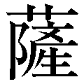

| 韓国人に不都合な半島の歴史 | |
| 拳骨 拓史 | |
| PHP研究所 (2012) | |

韓国人に不都合な半島の歴史
拳骨拓史
はじめに
十年ほど前、私は外国人留学生数人と歴史問題について議論をしたことがある。
その際、韓国人留学生の一人が、従軍慰安婦問題などについて「日本の誠意がない」とまくし立てる一幕があった。するとそれを聞いていたベトナム人留学生が笑い出し、次のように話しはじめた。
「君たちは日本に対して謝罪が足りないと言うが、どの口がそんなことを言うのですか。ベトナム戦争のとき、韓国軍が私たちベトナム人に何をしたか知っていますか？
何万人もの人々を虐殺し、挙句に多くのベトナム女性を強姦したではないですか。現在、ベトナムには韓国人によって強姦された私生児が一万人以上いるのが、その証拠でしょう。
しかし私たちベトナム人は、君たち韓国人に謝罪と賠償を求めたりはしません。なぜだかわかりますか？」
「......いや」
「それはね、そのようなことを行わないことが、〝国際社会の常識である〟と私たちは知っているからですよ。誇り高いベトナム人は、そのようなことはしないのです」
このベトナム人留学生の一言に、一座は水を打ったように静まりかえった。解散してから、私がそのベトナム人留学生に話しかけると、「当たり前のことを言っただけですよ」と微笑んで去っていった。
二〇一二年は李明博韓国大統領の竹島上陸を発端に、日韓両国でナショナリズムが高揚した。だが、日本においては戦後処理の問題、戦争責任、賠償問題を中心として、歴史的背景をまったく理解していないコメントが並んだ。歴史問題に言及しても、近代からの視点のみで、二〇〇〇年の歴史が示す問題の根幹にまで踏み込んだものは皆無であった。韓国ではそれどころか、日本が戦後行った賠償ならびに経済支援すら、韓国国民のほとんどが理解していない。
その象徴とも言える時代が、日本統治下における朝鮮の歴史である。
日本の朝鮮統治は、当時はそれが常識であったとしても、現在の視点から見れば批判されうる部分があることは当然だろう。だが、当時の事跡を現代の価値観だけで判断するのは正しいことだろうか。さらには、すべてを現在の損得だけで覆い隠して、歴史に学ぶことができるのだろうか。少なくとも筆者には、適当と思えない。
日韓併合に対して、既得権益を失う朝鮮の支配者階級は激しく抵抗した。その一方で、李氏の圧政から解放された朝鮮大衆や、朝鮮の近代化を願う知識人たちは一抹の不本意を抱きながらも、新たな時代を期待した。それが日本統治時代の実相だった。
韓国ではこのことを知る世代が現役だった頃まで、日本に対するわだかまりがあったことも事実だが、決して日本による統治を否定してこなかった。同様に日本においても、戦前を知る世代が現役のうちは、左翼勢力がいくら誤った戦後教育に力を注いでも、国家としての根幹をゆるがすような事態にはいたらなかった。
しかし、世代交代とともに実体験として身につけた、このような歴史が失われつつある。そして「誰か」に都合のよい、捏造された歴史が「正しい歴史」として大手をふって根づきかねない情勢だ。
そもそも「歴史」とは、為政者によってつくられる脆く儚い「思想」の一面を持っている。だからこそ、真に歴史を学ぼうとするならば、「誰か」によって隠された事実をも含め、当時を生きた人々の心情を伴って、一人一人の心の中で「歴史」を作り上げていく必要がある。
昨今の日韓情勢は、こうした一人一人の努力が欠如することで、今までにない広く深い溝が生じているように思えてならない。心ある人たちが日本と韓国を心から理解しようと思うとき、本書が歴史の空白を埋める一助となればと願い、筆をとった。
一冊の本に二〇〇〇年にわたるすべての日韓関係史を盛り込むことはできないが、私たちの進むべき道を考える上での参考になりえるのであれば、望外の喜びである。
なお本書の執筆にあたり、平安神宮、日本近現代史研究家の田中秀雄先生、大東文化大学の吉田篤志先生、ホテルステラコート太安閣の高尾伯江女将、『月刊日本』編集長の坪内隆彦先生、尾崎咢堂記念館（伊勢市）増田芳江女史、増田豊桜川市議会議員、高草真知子先生、土田真士氏、大槻卓氏の協力を得た。またＰＨＰ研究所取締役の安藤卓氏、編集部の瀬田成俊、白地利成両氏には本書執筆に際し、大いに励まして頂いた。ここに感謝を申し述べる次第である。
平成二四年九月
拳骨拓史
韓国人に不都合な半島の歴史
装丁 斉藤よしのぶ
 隣国は友好国ではない
隣国は友好国ではない 外交において、隣国は友好国ではない。
日本はどうも、この事実を忘れ去っているようにしか思えない。
そもそも国とは、一定の価値観を共有できるコミュニティだ。長い歴史において小さな集団が、時には武力闘争により、時には平和裡に、合同されて形づくられてきたのが国家である。
そして、たとえ一度、合同したとしても価値観が共有できなければ、そのコミュニティは分裂し、それぞれの道を歩んできた。このことは古今東西を問わず、歴史が証明している通りだ。
こうした国家の併合や独立には、それぞれの解釈があり賛否両論が激しい。だが、結局のところ価値観が合わないから、国家として別個の道を歩むという事実がある。
基本的な物の見方が異なり、価値観が共有できないコミュニティ、それが隣国の本質である。
もちろん友好国でないからといって、必ずしも敵国である必要はない。むしろ隣国とは、できるだけ安定した外交関係を結んでいる方が、国家としては望ましいのは言うまでもない。
だからこそ各国は、価値観が異なり利害関係が激しく対立する隣国と、できるだけ関係が悪化しないように、外交の手練手管を尽くすのである。その中には、中国戦国時代の合従連衡のように、隣接する小国が連合して接する大国に対抗する場合もあれば、大国の傘下に入ることで自国を守る場合もある。そのときどきに応じて、さまざまな外交施策を下してきたのだ。
この厳然たる事実を踏まえたとき、日本は「平和」や「非武装」という言葉を隠れ蓑に、こうした外交努力を怠ってきたのではないだろうか。そして、緊張した隣国との関係に目を瞑ってきた。その顕著な例が、韓国である。
近年、日本においては韓流ブームをきっかけに対韓感情は大きく好転した。しかし一方の韓国では、従軍慰安婦の碑など対日感情の悪化が目覚ましかった。その結果、二〇一二年には竹島問題がクローズアップされ、八月には大きな外交紛争へと発展した。そして日本でもようやく、韓国との関係が従来考えていたような甘いものでないことが広く知られるようになったのである。
ただ、こうした感情的な韓国批判が盛り上がりを見せる中で、釘を刺しておきたいことがある。それは、韓国に対して日本人が憤慨する事柄のすべてが、「いまさら」なことだということだ。
韓国の日本に対するエキセントリックな感情や挑発は、日本の一部の知識人と称する者たちを含め、日韓併合という歴史的事件を錦旗に掲げて正当化されがちである。しかし、それは単なるごまかしに過ぎない。韓国が国際世論の常識をはるかに踏み越えた姿勢を取る理由は、日本とはまったく異なる朝鮮の歴史から形づくられた、日本人には理解しがたい独自の価値観にある。
二〇〇〇年にわたる長い隣国関係をひもといて、日本と韓国の違いを明らかにしていこう。
日本と韓国はともに、アメリカを基軸とした軍事グループに所属しており、経済活動も同様である。それゆえ日本は韓国を、志を一にする仲間と思いがちだ。
こうした日本の思い込みは現在に限らず、過去にも多くあった。
たとえば七世紀、朝鮮の三国時代、中国に唐が興り、周辺に勢力を拡大し始めた。朝鮮半島では新羅が唐と同盟を結んで朝鮮統一を図り、唐の拡大を恐れた日本は百済を支援したが、白村江の戦いに敗れ、新羅の統一が成る。しかし新羅はその後、唐の脅威を一身に受けることとなり、唐との対立を経て従属することとなった。
また一六世紀末の朝鮮出兵においても、大航海時代によって迫り来る西洋への対抗という狙いが背景にあったが、朝鮮や中国（明）はその脅威に目を向けず、朝鮮は明に頼るままだった。その結果、その後の弱体化した明から清への王朝交代により、朝鮮は中国と屈辱的な隷属関係を結ぶことになる。
同じことは明治期にも起こった。日本は西洋列強のアジア侵略に富国強兵で対抗しようとし、日本は積極的に朝鮮に近代化を求めるが、朝鮮は中国を頼るばかりで、まったく対抗策を打ち出さない。
それどころか日清戦争後には、ロシアが露骨に東アジアに侵略の手を伸ばしてくると、朝鮮は中国の代わりにロシアに付けばよいとばかりの態度だった。このことが日露戦争の直接の原因となり、日本がころころと大国に付こうとする朝鮮に業を煮やしたことが日韓併合の遠因となった。
このように日本は、文化的な背景を共にする隣国、朝鮮に期待をし、ことごとく志を同じくできなかったのが歴史の真実である。
しかし、これらの事実を朝鮮の不義となじってはならない。むしろ日本の過度の期待や、誤った朝鮮への認識が招いた、日本の自業自得と反省すべきである。
そしてわれわれ現代に生きる日本人は、正しく朝鮮、韓国の歴史を理解して、これらと同じ轍を踏まないことが必要だ。
では、なぜ朝鮮、韓国と日本は、ここまで物の考え方が異なるのか。
端的に言えば、地政学上の問題だ。つまり、日本は海洋に囲まれたコミュニティであるのに対し、朝鮮半島は大陸の突端にあるという地理的事実である。
日本は基本的に、よく言われるように外部から閉ざされている反面、強固に守られている。そのため外部に脅威が現れたとき、国力を高めて防衛しようとする余裕がある。実際、遣唐使の時代から元寇、戦国末期から江戸初期、明治維新、日清日露戦争、そして大東亜戦争と、成否を別にして試みたことは共通している。
しかし朝鮮は、中国と陸続きであるがゆえに有史以来、常に中国の王朝から脅威を受けていた。古代においては幾度か中国の進出を跳ね返したが、中世以降はほぼ一貫して中国に従属する形で、国を運営してきた。
そのため朝鮮は自国の文化を否定し、中国の文化を過度に尊ぶことで、己のプライドと権威を保ってきた。これが「小中華思想」と「事大主義」といわれる、朝鮮独自の思想である。
小中華思想とは、中国が古代から抱いていた中華思想、すなわち中国大陸を制する自国こそが文化・思想ともに最高であり、それ以外は蛮族であるとする考えを準用し、中国をもっともよく模している自分たち（朝鮮）は中華に次ぐ国だと自認することで優越感を抱く思想である。そして事大主義は「大に事（つか）える」という読みの通り、大陸に対して恭順するという外交政策を指している。
本来これらの主義、思想は、為政者の権威付けと施策方針に過ぎなかった。しかし時代とともに、こうした思想は国民のなかにも浸透していく。
日韓併合の前に大韓帝国の財政顧問をしていた山口豊正は、一九一一年に著した『朝鮮の研究』で次のように述べている。
「朝鮮の事大主義は、国民性にまで及んでおり、朝鮮人はいつでも勢力の強い者に追従し、俗にいう強く出れば折れる。弱く出ればつけあがるというように、弱者とみればあくまでこれを軽侮し、制圧を加える代わりに強者に対しては理非に関わらず、従順を表するのである。
一度は中国を尊敬し、追従していたのにも関わらず、今では中国人を鼻先で待遇しつつあるのも、これを証明するものである。彼らが恩義を知らず、徳義を重んじないのは一面において事大主義に基づくと言えなくもない」
そして事実、古笥会（韓国の開国派指導者、金玉均を顕彰する会）の専務理事であった金振九も、
「私の幼少時代は『ナーニ、日本人が東から攻めて来れば、大国人（支那人のこと）が西の方から押しかけて来て、追払つてくれるんだ』と、口ずさみして、心も体も凡てを挙げて、大国人に凭れ、且つ国家も個人も、運命を挙げて支那に委せたのであります。これは無論、寺子屋の先生とか村中の長上者から、始終聞き慣れているからであります」
と述べている。
また朝鮮半島の両国は現代においても、「ひまわりの国」と言われることがある。ひまわりが常に太陽がある方向を向くように、韓国はいつも強い国の方向を向いてこれに従おうとするという意味である。
中国が強ければ中国に従い、ロシアが強ければロシアに。そして日本、アメリカ、最近では核兵器を保有した北朝鮮にも接近をはかるなどする韓国の迷走ぶりを考えれば、韓国国民の根幹部分において、いまだ事大主義が色濃く残っていると指摘せざるを得ない。
韓国では反日レジスタンスだった李承晩（一八七五～一九六五）を例外として、戦後長く日本との対立を避けてきたが、近年とみに日本を非難する一方、中国などに対しては批判を控えている。これは中国が軍事、経済ともに飛躍的な台頭を見せているのに対し、日本の成長が滞っており、また似非平和主義の左派中道政権ゆえに、強く言えば引く、相対的な弱小国と考えているからであり、事大主義の典型といえるだろう。

では、なぜこのような思想が彼らに根づいてしまったのだろうか。
朝鮮の歴史を考えれば、高句麗・新羅・百済の三国時代を新羅が統一することで、朝鮮という一つの国の固まりが始まった。つまり、朝鮮の国家としてのスタートは七世紀と、意外に遅いことがわかる。
それ以前はおよそ小国家が割拠していたが、一部には中国の植民地があり、朝鮮半島の中枢をなしていた。代表的なものは韓国ドラマ『幻の王女 チャミョンゴ』の舞台でもある楽浪郡である。ドラマでは「楽浪国」とされているものの、実際は前漢から後漢にかけての中国の出先機関に過ぎず、まさしく「幻」であることにウイットを覚えるが、この楽浪郡を通した中国の侵出を軸に、古代朝鮮の勢力闘争が繰り広げられた。
そのため当時、国家としての体をなしていない朝鮮半島の諸国家への評価は低く、中国側の史書を読んでいくと三世紀の魏の時代、日本には皇族以外で貰える印綬では最高クラスである金印紫綬の印綬が送られているのに対し、朝鮮の諸国の首長である「臣智」（大国の首長）らは「邑君」（村長）の称号と印綬（木印）を、次位の首長は邑長とその印綬に過ぎなかった。
また一方で、印綬を身につけるものは「千有余人」にものぼったと『三国志』に記録されており、朝鮮ではそれだけ中国の権威を統治に利用しており、中国の行政支配下に入っていた一面もあったといえる。
その名残は三つの国に集約された三部族時代にも引き継がれ、百済は建国後においても、中国から授けられた職名と思われるものを使用し続けていた。百済の官位である〝達率〟（二品官）や〝恩率〟（三品官）の率は、『三国志』（『魏書』東夷伝馬韓伝）の臣智に相当している。実際、百済は『隋書』百済伝によると、「そこの人は新羅、高句麗、倭などが混在しており、また中国人もいる」と書かれているように、国家としてかなり複雑な構成だった。
そして、この因果な関係は、朝鮮半島が国として初めての統一にも大きな陰を落とすことになる。
先にも指摘したように、新羅は唐と羅唐同盟を結び、百済（六六〇年滅亡）、高句麗（六六八年滅亡）を滅ぼす。しかし唐は新羅を含めた朝鮮半島を支配しようとしたため、新羅と唐は戦争することになる。羅唐戦争である。（六七〇年）
六年に及ぶこの戦いは唐の勝利で終わり、以後、朝鮮半島は日本の助力により大韓帝国が樹立されるまで、中国に対して朝貢冊封関係を結ばされ、属国となることになった。そしてこのとき、朝鮮の姓は中国読みに〝創氏改名〟させられ、中国と同じ一文字の姓が用いられるようになる。
つまり、朝鮮半島が一つの集団にまとまる、そのために中国への隷属が義務づけられ、自らの文化を捨て去ることが求められたのである。
そのように考えれば、朝鮮では自助努力よりも、大国の動静を窺いながら国の利益を目指すのが、基本的な国家の方針として正しいのである。また、強者におもねり弱者には居丈高に振る舞うのが、正しい身の処し方なのである。
それゆえ、生き残ることや自らの利益が第一の判断基準であり、そのためには「ウソ」をつき欺くことも非難されない。それどころか、朝鮮人の「常識」といえる。
日本人の常識とはかけ離れており、日本が目指すところと相容れないのも当然であり、たびたび衝突するのはやむを得ないことだろう。
『朝鮮日報』（二〇一〇年二月二日）は、韓国国内における偽証が多いことを報じ、次のように論じた。
「韓国は法廷で虚偽の証言をする偽証や、他人によるうその告訴・告発により、いわれのない事件に巻き込まれるケースが世界で最も多い」「（日本と比べると）偽証罪が四二七倍、虚偽告訴罪は五四三倍に達する」「血縁・地縁・学閥を土台とする縁故主義・温情主義と、金さえもらえるのであれば何でもできるという考え方が、時に〝息を吐くようにうそをつく〟などといわれるような社会の雰囲気を作り上げているのだ」
朝鮮人がウソを平気でつくことは、中世の欧米人によっても指摘されている。朝鮮に一三年間にわたって幽閉されたオランダ東インド会社社員、ヘンドリック・ハメル（一六三〇～一六九二）は、『朝鮮幽囚記』で次のように述べている。
「（朝鮮人は）彼らは盗みをしたり、ウソをついたり、だましたりする強い傾向があります。彼らをあまり信用してはなりません。他人に損害を与えることは彼らにとって手柄と考えられ、恥辱とは考えられていません」
この傾向は近代、日本統治時代の朝鮮でも変わらない。
韓国史の専門家で枢密顧問官などを歴任した幣原坦（一八七〇～一九五三）は『朝鮮教育論』で、朝鮮に設置された各学校でのアンケート結果を集計し、朝鮮少年の長所と短所を次のようにまとめている。
●長所
・従順で年長者を尊敬する
・祖先を崇拝する
・家長を尊び、親戚も積極的にたすける
・辞令に巧みであるが、淫猥な言行が少ない
・記憶力。模倣力、技能にも長じている
・呑気である
●短所
・推理、創作の力に乏しい
・廉恥心に乏しい（ウソを平気でつく）
・不潔
・労苦を厭い、持久の精神を欠き、依頼心が強い
・美的観念の欠乏
長所の各項からは、儒教の気風が残り、年長者への尊敬が息づいている朝鮮の美徳が垣間見える。現代においても、男尊女卑など欠点はあるものの、総じてこの傾向が引き継がれているといえるだろう。
一方、短所の「推理、創作の力に乏しい」という点は、現在の経済活動に顕著に表れている。日本にしても韓国にしても、進んだ技術や製品の模倣により経済を大きくしてきたのは同じだが、日本では技術に自らの工夫と洗練が加わるのに対し、韓国では人材を引き抜いて模倣し、使い捨てるだけである。ウソをつき、日本文化をすべて朝鮮文化由来とするばかりか、ウリジナルとも称される荒唐無稽な韓国起源説（第三章参照）を創作する能力を、少しでも活用すればよいというのは言い過ぎだろうか。
また、李東華は『起て！朝鮮人行け！満洲国』（一九三六年、黄人社）で、朝鮮人の特質として、懶惰、従順、虚言、馴れやすい（ただし、甘く当たれば慣れて欺くことが多い）、小盗人、悠長で呑気、という点を挙げている。
明治大正の評論家、歴史家であった山路愛山（一八六五～一九一七）も「一平民の朝鮮論」で次のように述べている。
「朝鮮人と云う奴は一筋縄で行けるのぢあ無え。（中略）有難いの百万遍も並べて礼を言うから、ほんとうにそうかと思つて居りあ。腹ぢあ舌を出して居やあがる。口と心が違つて居る。心と顔が違つて居る。正直そうでこすく、馬鹿のやうで疑深かい。人の恩は山ほどのことも右から左へ忘れる。其代り怨は何時までも腹の中にかくして置いて金輪際決して忘れないと云うのが朝鮮人の持前だ。わつしは朝鮮人をそう見抜いたのだ。（中略）朝鮮人は日本人には苦手だ。朝鮮人は日本人の相談相手にはならねい」
『朝鮮日報』までが指摘するウソを厭わない性質は、日本人の価値基準で善悪を決めつけるのでなく、もはや〝国民性〟として認識すべきだろう。
二〇一二年八月一四日、韓国の李明博大統領は、天皇陛下の訪韓に関して「（日本の植民地支配からの）独立運動をして亡くなった方々を訪ねて心から謝罪するならば来なさいと言った」と述べたと報じられ、物議を醸した。
しかし、真実は歴代韓国大統領は日本政府に対し、天皇陛下に「ぜひ韓国へ来ていただきたい」と招聘してきたのである。李大統領自身も大統領就任当初には、「わたし自身は新しい成熟した韓日関係のために、『謝罪しろ』『反省しろ』とは言いたくない」「日本は形式的であるにせよ、謝罪や反省はすでに行っている」（二〇〇八年一月一七日）と未来志向の発言をしてきた。
それが支持率低下や側近の不正疑惑で苦しい立場に追い込まれるや否や、保身のためにあっさりと前言を翻した。日本人から見れば見苦しい限りだが、これが典型的な韓国人の姿であると、日本人は受け入れなければならない。
この李大統領の問題発言に先んじる八月一〇日には、李明博大統領は韓国大統領として初となる、竹島への不法上陸を断行した。そして強行手段に出た理由を「日本がその気になれば（日本軍慰安婦問題は）解決するのに、内政のために消極的なので、行動で見せる必要を感じた」と、従軍慰安婦問題が原因であると述べたのである。
そもそもこの従軍慰安婦とは、支那事変から大東亜戦争、朝鮮戦争、ベトナム戦争など日本軍や連合軍、アメリカ軍などの軍人を対象に売春業を行っていた女性たちのことである。
慰安婦問題が公となったのは、日本の吉田清治が済州島で自らが朝鮮人奴隷狩り（二〇〇名）を行い、彼女たちを慰安婦にしたと自著『朝鮮人慰安婦と日本人』（新人物往来社）を一九七七年に出版したことが嚆矢となる。そして吉田は自らの〝体験〟を伝えるため、日本、韓国、アメリカなどで講演活動を行い、挙げ句は国連の人権委員会に本件を訴えるなど、精力的に活動をした。
しかし、この話はまったくの架空、デタラメであった。
済州島の郷土史家金奉玉は吉田証言について、「数年間も追跡調査を行った結果、事実ではないことが明らかになった。この本は日本人の浅ましさをあらわす軽薄な商魂の産物であると考える」と述べて批判したが、吉田の本は史実として韓国で翻訳出版されたほか、ドラマ化される。
さらには福島瑞穂（現社民党党首）らを中心とする日本人弁護士により、アジア諸国の慰安婦たちに日本政府を相手に謝罪と賠償を求める裁判が起こされる。それとともに『朝日新聞』は吉田証言を紹介し、「慰安所に対する旧日本軍の関与を示す資料が見つかった」などとする虚偽の情報を報じ、「親に売られた」とする証言を「軍が慰安婦を女子挺身隊として強制連行した」と捏造した。
こうした動きにより、アジア諸国に反日デモが広がると、日本政府は真相究明をするための調査を行うが、強制連行を立証する資料がないにもかかわらず、河野洋平官房長官（当時）がいわゆる「河野談話」を発表。「河野談話」は軍の関与を認め、「慰安所における生活は、強制的な状況の下での痛ましいものであった」と、日本軍の強制連行を認めて謝罪する内容であり、日本は国内外から対日非難決議を受けることになった。
これに対し、秦郁彦日本大学教授（当時）の調査などにより、吉田証言は捏造であり、さらに吉田本人が「人権屋に利用された私が悪かった」と認めたことで、日本国内での騒ぎは鎮静化するが、この傷跡は余波として広がっていく。
一九四〇年当時、一六～二一歳の女性は朝鮮半島で一二五万人だったが、韓国は二〇万人もの朝鮮人女性が強制的に慰安婦にされたと主張し、二〇一一年一二月一四日には、ソウルの日本大使館前に、旧日本軍慰安婦の少女をモチーフとした「平和の碑」と題するブロンズ像を建立した。
また、二〇一一年には韓国の憲法裁判所が「政府が具体的措置を講じてこなかったのは違憲である」と判決を下し、司法の場からもこの動きを後押しする。
さらにアメリカでは、「日本の慰安婦問題は、ユダヤ人虐殺と同等である」として、韓国系米国人が多く住む地域を中心に、「日本軍が二〇万人を超える少女らを性奴隷にするため強制動員した卑劣な犯罪は忘れられるべきでなく絶対に認められるべきである」と刻まれた石碑を建立しようと活動を繰り広げるなど、従軍慰安婦問題の宣伝工作活動を強めているのが現状だ。
そもそも従軍慰安婦問題がでっち上げである一方、何らかの保障をすべしとの意見もまま聞かれる。
しかし、日本政府は一九六五年に日韓基本条約を締結し、国交正常化が行われたときに、韓国に対して賠償金はすべて支払っている。韓国が対日請求権を放棄する代わりに、日本は戦前から朝鮮に投資した資本および日本人の個別財産をすべて放棄することに加え、約一一億ドルもの無償資金と借款を援助することで、賠償問題は「完全かつ最終的に解決」したのだ。当時の韓国の国家予算が三・五億ドルに過ぎなかったことを考えると、国家賠償として妥当だったことが十分、推測できる。
そして、韓国政府はこれらの一部を軍人などの遺族への個人補償にあてる一方、道路やダム・工場の建設などインフラの整備や企業活動に投資することで、「漢江の奇跡」と呼ばれる経済発展を遂げた。
韓国政府の判断により、一一億ドルの使途が個人賠償より国家発展が優先された、この事実は今さら否定することはできない。個人賠償の対象から漏らしたのも韓国政府の責任である。
もちろん韓国政府は従軍慰安婦問題を声高に叫ぶ一方で、本質的には自分たちの責任であることをわかっている。だからこそ、李大統領は日本政府に対し「日本政府は法律的でなくとも人道主義的な措置を必ず取るべき」と要請しているのだ。
これに対し日本も事情をくみ取り、一九九五年にはアジア女性基金という団体を設立した。賠償問題はすべて片付いているとの立場から、半官半民の団体を設立し、ここに国民から慰安婦への浄財を募り、慰安婦への補償を行おうとしたのである。
その結果、約七億円の資金が集まるが、従軍慰安婦問題がなくなると、自らの活動が退潮をきたすと危惧した、日本の市民活動家を称する左翼勢力が暗躍を始める。従軍慰安婦にアジア女性基金から資金を受けないように運動し、韓国政府も自分たちが支払うから受け取るなと主張。最終的に七億円のお金を支払うために設立された本団体は、二〇〇七年に解散したが、この間に七〇億円もの事務費用を計上し、左翼活動家に資金が流れ込むことになった。
従軍慰安婦問題という虚像を生み出したのも、その解決を阻止したのも、売国利権を貪ろうとする日本人から始まっている。
そして韓国政府はウソを知りながら、日本から賠償という名の利得を勝ちとるため、脅し、恫喝、泣き落としを繰り返す。さらにはウソを自国民に教え、そのウソを世界へとたれ流す。
冒頭に紹介したヘンドリック・ハメルの「他人に損害を与えることは彼らにとって手柄と考えられ、恥辱とは考えられていない」という朝鮮人の民族性と相まって、泥沼化している。これが従軍慰安婦問題の〝真実〟である。
こうした「従軍慰安婦」問題の背景には、朝鮮の過度の女性蔑視もある。
現在でも韓国人留学生の女性と話をすると、日本に来て驚いたことは「女性の権利が確立している」ことであり、「韓国では女性は日本ほど自由ではない。それがうらやましい」そうだ。
二〇一二年五月に米国務省は、『二〇一一年国別人権報告書』に基づき、韓国は「性暴力や家庭内暴力など、主に女性を対象とした人権侵害も後を絶たない」と議会へ報告している。
また、多国籍世論調査機関のワールド・パブリック・オピニオンが二〇〇八年に発表した世界一七カ国、一万七五〇〇人を対象に調査をしたところ、「一般女性に比べて未亡人や離婚した女性が差別を受けている」と回答した割合が、トルコやパレスチナなど男女不平等が深刻とされる中東地域を抑え、韓国がトップとなるという結果になった。
事実、女性への暴行事件の発生率は、先進国の仲間入りを果たそうと言うにもかかわらず、甚だ高い。二〇一一年に韓国最高検察庁が発行した『犯罪分析』によれば、二〇一〇年に発生した性犯罪は一万九九三九件であり、ソウルだけで五六七一件に達したという。二〇一〇年時点の韓国人口は約四九〇〇万人であることからも、その異常さがわかるだろう。
韓国のマスコミも自ら「韓国は、日本より学生による性犯罪が一七倍も多い」と言っているが、二〇一二年四月にはベトナムの女性連盟が、韓国人との国際結婚により自国の女性らがさまざまな被害に遭っていることを問題視し、韓国人男性との結婚を一部禁止するよう動いたことが報じられた。
すでにカンボジア政府は二〇一〇年に人身売買を防ぐため、カンボジア人と韓国人の結婚を禁止している。また同年には、来韓後、わずか八日目にベトナム人花嫁が殺されるという事件も起きており、韓国の女性に対する非道徳的な扱いは、韓国を知る人間であれば誰もが知る常識である。
この過度の女性蔑視は、朝鮮に根づく悪癖ともいうべきものだ。
たとえば、朝鮮の貴族・官僚階級ともいえる両班の夫が単身赴任する場合、妻は夫に代わって義父母に孝を尽くすために同行ができなかった。そのため夫は赴任地で、妓生を妾とするべく、各監司府は候補者を選抜するのが通例だった。その結果、地方巡視の政務は荒廃し、地方官吏を遊惰に流させる流弊は甚だしかったといわれている。
李朝の世宗の時代、これを改革しようという議論が起きたが、時の宰相であった許文敬（一三六九～一四三九）がひとりこれに反対し、
「誰が愚論をいうのか！ 男女の欲望は人間の大欲であって禁止してはいけないものである。娼妓は好きなものを選んで問題はない。もしこれを禁止すれば、年少の官僚たちは、みな他人の家の娘を奪い取って英雄俊傑、ことごとく罪に陥るだろう！」
と熱弁を奮って、中止させたという。この様な主張が説得力をもって朝廷で通じたという事からも、朝鮮がいかに腐敗していたか察するに余りある、といえるだろう。
もちろん「妾」の存在は、過去において日本でも公認されており、朝鮮だけの問題ではない。しかし、日本とはずいぶん認識が異なることがわかる。
正式な結婚に目を転じると、男性は結婚すると髪を結んで帽子をかぶるだけだが、女性は結婚すると父母兄弟、夫以外とは面会してはならず、住居の外に出て散歩もできなかった。中流以上の女性が外出するときには、帽子をかぶるか、輿に乗って他人に顔を見られないようにする必要があったのだ
また、家屋の構造は外室と内室に分けられ、男子は外室に、女性は内室にと明確に区分がされ、用事がなければ兄弟であっても内室に出入りできなかった。
このような女性蔑視と、その裏返しである貞操の過度の強要を踏まえて従軍慰安婦問題を見れば、その来歴がわかる。
従軍慰安婦に対して、韓国が主張するような「強制的に性的サービスに従事させた」事実がまったくないことは明らかである。しかし、軍が委託した民間業者により「軍人に性的サービスを施す女性」を募集していたことは事実である。そして、朝鮮を含めた当時の日本全国で募集されたとしても、貧しい地域であったり、教育が十分施せない地域で、とくに従事する者が多かったことは想像に難くない。
本書で後ほど詳述するが、朝鮮は大韓帝国とは名ばかりで、農業中心の封建社会から抜け出せず、日本の統治下に入ってようやく近代化が進められた地域である。日本全国から見ても十分に貧しい地域だった。
また支配層は別にして、一般的に教育への意識も低かった。朴正煕元韓国大統領が自らの半生を振り返り、日本の統治下だったことで、貧しく親に反対されながらも義務教育を受けることができ、官給のある高等教育機関で学ぶことができたと述べたように、日本の統治下でようやく義務教育が施されるようになったものの、当時の大人の意識は低く、よほどのことがなければ高等教育を受けることができなかった。蔑視されていた女性ならなおさらである。
そうした意味で、当時の朝鮮で低所得ゆえに売春業に生活の糧を求めざるを得ない層が多かったことは否めない。旧宗主国として猛省しなければならないことである。
そして、日本では売春婦の地位は古い時代より必ずしも底辺層ではなく、江戸時代の身請け話に見られるように、売春に従事しているからといって、結婚が妨げられるものでもなかったが、朝鮮は先に触れた過度の女性蔑視の社会である。
かつては夫に先立たれた妻が、夫に殉死する風潮が尊ばれ、「烈婦」や「貞婦」という言葉が文献でも多く取り上げられている。未亡人となれば、女性の人生はもはや終わったのと同じことであった。
そうした彼女らが身を守るために、金銭を対価としたのでなく、強制的に連行されたと称するのは、これまでの朝鮮の国民性に鑑みれば、あまりに当然である。
韓国が吹聴するウソは、従軍慰安婦だけに限ったものではない。
この数年、尖閣諸島の問題とともに隣国との軋轢が増しているのが、日韓における竹島の領有権問題である。こちらは日本が実効支配している尖閣諸島と異なり、韓国が不法に占拠し実効支配している。
そもそも竹島は、島根県の隠岐から一五七キロの日本海上にあり、隠岐郡隠岐の島町に属している島である。男島と女島の二つの小島と約四〇の岩礁からなっており、面積はわずか二三〇平方メートルでしかない。
一九〇三年、隠岐の中井養三郎がアシカ漁を始めた際、竹島を貸してほしいと日本政府に要請する。そのとき明治政府は、竹島の行政区画を決めていなかったことに気づき、一九〇五年一月二八日あらためて竹島との呼称を定め島根県隠岐の所管とし、アシカ漁業を許可した。もちろん、朝鮮はこれについて何ら異論ははさまなかった。
その後一九一〇年に韓国が日本に併合された際も、竹島は島根県に属したままで、鬱陵島は朝鮮領から朝鮮総督府の管轄となった。同じように距離の近い、壱岐・対馬が長崎県のままで済州島はやはり朝鮮総督府に属していたのと同様である。日韓併合時には距離が近いからと言って、日本固有の地域と朝鮮に属していた地域を改組するようなことはなかった。
終戦時、サンフランシスコ講和条約を結ぶにあたっては、日本が放棄すべき地域が明確に定義づけられたが、竹島は日本領であることが確認されている。これまでの歴史的経緯を考慮してのことだった。
このことは講和条約を主導したアメリカをはじめ、諸外国が認めていることである。まぎれもなく竹島は日本の領土なのである。
鬱陵島に付属する島に「竹嶼」がある。嶼とは「島」であり、竹嶼とは「竹島」である。韓国が竹島支配の論拠とする文献を読むと、どう考えても日本の竹島でなく、この鬱陵島の竹島と捉えたほうが合理的な解釈ができるものばかりだ。
竹島問題を考える上で、「竹島」が指し示す島は、現在の竹島および鬱陵島、竹嶼の三つの可能性をもって読み解く必要がある。しかし、韓国の竹島領有論を見ていると、こうした呼称の整理がなされないまま、都合よく文献の一部分を細い糸で紡いでいることがほとんどだ。
一九五二年時点では竹島の名称も定めておらず、後に「独島」の名称を持ち出し、得意になっている場合ではないと思うのだが。
韓国はこうした自分勝手な歴史的経緯の解釈とともに、非植民地支配の被害者、もしくは戦勝国側と称して、第二次世界大戦の戦後処理に難癖をつけ、竹島領有の正当化を図ってもいる。その一つが、竹島がマッカーサーラインの外側にあったので日本領土ではない、との主張だ。
マッカーサーラインとは、第二次世界大戦後、便宜的に日本の水域を制限した境界線のことである。ただし、これは領土を区切る境界ではなかった。終戦直後に、日本の漁船が活動できる範囲を行政の立場から定めたに過ぎない。
事実、マッカーサーラインを定めた命令の第六項には「この指令中のいかなる規定もポツダム宣言第八項に述べられている諸小島の最終決定に関する連合軍の政策を示すものと解釈されてはならない」としている。またサンフランシスコ講和条約の発行前に、マッカーサーラインは撤廃された。
しかし韓国は、この講和条約に参加していない。戦時中、韓国は日本の一部であり、組織だって日本と戦争状態にあったわけでなかったからだ。そのため、連合国の一員と認められず、講和条約にオブザーバーとしての参加資格も与えられていなかった。
そこで韓国は、奇妙な論理を持ち出してくる。講和条約調印の二ヶ月後、韓国は「日本は対馬、パラン島及び日本海内の独島に対する領有権を放棄すること」との要求を駐韓米国大使であるダレスに提出したのだ。
しかし、波浪島なる島は「韓国の木浦と長崎、上海を結ぶ三角形の真ん中にある」とするものの、未だ存在は確認できていない。すなわち架空の島である。要求後にそのことを確認されても、答えを二転三転させてごまかし続けた。
そこでラスク国務省極東担当次官補は、「独島、他の名で竹島（中略）は韓国の一部として扱われたことがなく、一九〇五年以降、日本の島根県隠岐島司の管轄下に置かれていた。韓国はかつてこの島に対して権利を主張していない。パラン島を講和条約で日本から分離される島として指定すべきとの韓国側の要求は棄却されるものと理解する」と結論づける。
〝息を吐くようにウソをつき〟、竹島ばかりか対馬まで火事場泥棒しようというのだから、呆れるばかりだが、そのために韓国の主張は大きく信頼が損なわれることとなった。以降、現在に至るまでアメリカは、日韓相互による解決を求めながらも「竹島は日本の領土」という立場を崩していない。実際、一九五二年七月二六日には日米合同委員会が、竹島を在日米軍が使用する空爆訓練区域に指定した事実もある。
しかし、自業自得とはいえ自らの主張が却下された韓国は、国際社会の協調を無視して強行策に出る。講和条約調印の五一年九月と翌年四月発効の間隙を縫って、五二年一月十八日に「海洋主権宣言」を打ちだす。竹島を含む海域の主権宣言を行い、韓国では平和線と詐称しているが、事実上の軍事境界線を一方的に引いた。いわゆる「李承晩ライン」である。
これに対し日本は一月二八日、韓国に抗議する。また、「韓国は竹島として知られる日本海の小島に領土権を主張しているように見えるが、日本国政府は韓国のかかる僭称または要求を認めるものではない」と竹島の領有権もきっちり主張した。
日本はこの認識に基づき、李承晩ライン以降も竹島近辺で漁業を行っていた。それに対して韓国は一九五三年二月四日、日本の漁船、第一大邦丸に向けて無警告のまま銃撃をはじめ、漁労長が射殺されるという事件が起きる。「第一大邦丸事件」である。
この頃から韓国の横暴が、目に見える形で表れるようになってきた。
竹島周辺は五三年三月十九日、空爆訓練区域が解除されたが、直後の五月二八日には韓国人漁船が竹島に上陸し、アワビやワカメの採集しているのが発見される。日本は韓国政府に対して抗議をするが、韓国側はこれを無視して漁民の活動が続けられた。
続く七月一二日には、海上保安庁の巡視船によって竹島に韓国警官がいることが確認された。退去を要請したところ、軽機関銃などによる銃撃を受ける。日本はこれに対しても抗議するが、翌年にはさらに沿岸警備隊が配備された。
こうして竹島は、韓国に不法な軍事占拠をされるところとなり、現在に至っている。
無論、こうした状況に対しては日本のみならず、アメリカも水面下で解決に向けて動いていた。なかでも喫緊の課題となったのが、一九六五年の日韓基本条約締結に際してである。国交を正常化するために協議を繰り返してきた日本と韓国にとって、竹島問題の解決は最大の課題となった。
一説によれば、このとき日韓は「竹島密約」を結んだとする見解がある。日本では、二〇〇七年三月二〇日に報じられた。
この記事では韓国の月刊誌『月刊中央』の話として、建設相時代に密約交渉を担当していた河野一郎の特命を受けた宇野宗佑（後の首相）が訪韓し、韓国の丁一権首相（当時）に「解決せざるをもって解決したとみなす」と記された密約文書を渡し、朴正熙大統領も承認したとされている。さらに、日韓基本条約では竹島問題について触れないことも合意した、とも言う。
そして密約文書には、 日韓両国がともに竹島を自国の領土と主張することを認め、反論に異議を提起しない、
日韓両国がともに竹島を自国の領土と主張することを認め、反論に異議を提起しない、 韓国が竹島を占拠している現状を維持するが、韓国は警備員の増強や新施設の建設は行わない、など付属条項が含まれていた、としている。
韓国が竹島を占拠している現状を維持するが、韓国は警備員の増強や新施設の建設は行わない、など付属条項が含まれていた、としている。
だが、韓国ではこの密約文書は朴正熙大統領の暗殺後、全斗煥大統領によって燃やされたとされ、日本政府もその存在を否定している（『衆議院議員鈴木宗男君提出竹島問題をめぐる日韓密約に関する質問に対する答弁書』内閣衆質一六六第一三五号）。
真相は藪の中ではあるが、先の尖閣諸島での日中の対応と同様であり、当時の日本政府内に「解決せざるをもって解決したと見なす」といった空気があったことは想像に難くない。
しかし、こうした「臭い物に蓋をする」日本的な発想が、結果的に竹島ばかりか尖閣諸島にまで影響を及ぼすこととなった。日本は大いに反省し、同じ過ちを繰り返してはならない。
竹島をめぐっては、以上のような歴史的経緯があるが、いま現在の解決方法となると、基本的に日本は国際社会の理解を得る方法しかない。
その一つの手段としてよく聞かれるのが「国際司法裁判所」による裁定である。これは最近に限らず、一九五四年および六二年にも日本は、韓国に対して国際司法裁判所での解決を提案している。
しかし韓国は、この提案を拒否した。ここが、われわれが思うところの裁判所と国際司法裁判所の異なる点である。
国内における裁判は、一方が告訴をすれば民事だろうが刑事だろうが、自ずと原告と被告によって行われる。だが、国際司法裁判所では当事国同士が裁判に合意することが大前提となっている。国の大小にかかわらず、国家はすべて平等という考えがあり、裁定が出てもそれを強制できる世界的機関が基本的にはないからだ。そのため、もし裁定に不利だとみれば、提訴自体が拒否できる。
もちろん、だからといって国際司法裁判所の役割が軽んじられるわけではない。ここで下される裁定は、国際法の解釈など外交における大きな規範となるし、また国際社会の理解を得る大きな手段ともなる。
日本ではかつて、この裁判所を活用しようと訴えていたが、先に触れたように、基本条約締結後は努めて竹島問題に対して消極的な姿勢を採っていた。だが、九〇年代末から韓国は掌を返して、竹島の要塞化に踏み出した。そして韓国内におけるプロパガンダと反日活動の扇動を積極的に行っている。それが昨今の竹島問題の背景にある。
そこで現在、再び日本では国際司法裁判所への提訴が俎上に上がってきた。二〇一二年一〇月中にも日本は〝単独提訴〟を行うということだが、この場合、韓国は国際社会に「なぜ裁判に応じないのか」を説明する責任が生じる。その意味では今までより一歩踏み込んだ内容であると評価できるが、結果は変わらないだろう。
だが、この問題でじつは日本が見落としている点がある。それは、およそ六〇年間に及ぶ韓国の実効支配である。
国際司法裁判所の根本的役割は、二国間を含む多国間紛争の解決である。判断の基準が国際法や歴史的経緯にあるのは言わずもがなだが、一方で実効支配の事実もまた重要な要素に入り込んでくる。つまり、日本には論理的な正義があるものの、軍事力によって支配されている不利もあるのだ。
これは竹島だけでなく、北方四島にも言える問題だ。国際司法裁判所への提訴を言うのは構わないが、もし韓国がこれに乗ってくるようでは、ここに勝算を見つけたということになる。そして、もし日本に不利な裁定が下されれば、それは竹島の問題だけでなく、北方四島にまで影響が及ぶ。
ただでさえ日本の隣国、韓国、中国、ロシアは、領土問題で連携を取っている。とくに韓国は二〇一一年五月、ロシアのビザで韓国国会議員が北方四島を訪れることを容認した。紛れもない挑発行為であり、ロシアの歓心を買おうという狙いだ。
また、軍事力や国際紛争をタブー視し、在日米軍を通してアメリカに拒否反応のある政党が日本の政権の座に就くや否や、中ロ韓は積極的に日本を揺さぶる策謀をはじめた。このままでは、日本が三国の挟み撃ちにあうのは時間の問題だ。
本件における私なりの解決策は第六章において述べることとする。
日本が現在抱える領土紛争は、前項でも触れた尖閣、竹島、北方四島である。しかし、韓国はさらなる侵略を目論んでいる。対馬である。日本が断固とした姿勢を取らなければ、日本人が思ってもみない領土紛争が起きることとなる。
まず韓国が目論む長崎県対馬への侵略は、李承晩ラインが設定される直前、韓国がアメリカに「対馬をよこせ」と主張したことからも明らかである。竹島問題が韓国で国威発揚に用いられる今、この論が再燃している。
対馬の文献上の初出は邪馬台国で知られる『魏志倭人伝』であり、倭の一国とされたものだ。日本の史料でも『古事記』『日本書紀』の建国神話から登場しており、朝鮮半島への玄関口として、古くから重視されてきた地域である。
七世紀に律令制が敷かれたときには、あらためて対馬国一国があてられる。また平安末期の一二世紀から明治維新にかけては、在地領主、守護、大名として一貫して宗氏の支配下に置かれてきた。
紛うかたなき、有史以来の日本である。
それを韓国は、「わが国の領土」と言う。竹島問題への牽制、もしくは反日感情のあまりなのだろうが、荒唐無稽すぎて反論するのもバカバカしい。根拠として持ち出すのも、つい最近の一七四〇年に成立した『東莱府誌』に対馬の宗氏の先祖が釜山に住んでいたという記録があるから、と言うのだから失笑を禁じえない。
だが二〇一〇年九月、韓国の有志国会議員は「対馬フォーラム」を立ち上げ、「対馬は歴史的、文化的、人種的に韓国の領土」と宣言、プロパガンダ活動を開始した。〇八年には韓国の国会で返還要求決議も議論の俎上に上った。また、鬱陵島にある竹島支配のプロパガンダ施設には、「対馬は韓国の地」と表した碑が建てられている。さらに、韓国の馬山市には「対馬島の日」なる条例もある。
何より、韓国国内に賛否両論があるものの、多くの韓国人が「対馬＝韓国」論を知っている。そして否定論者にしても、対馬が有史以来の日本固有の領土と正しく理解しているのではなく、江戸時代から日本の領土という誤った認識を持っている。非常に危険な状態にあると言える。
日本と韓国は漢字文化圏であったり、似た容貌などの共通観から、日本人はきわめて類似した民族と考えがちだ。そして、われわれ日本人の価値観で韓国を計ることに違和感がない。
しかし、それは大きな誤解であり、問題である。ここまで述べてきたように、両国の間にはきわめて大きな溝があるのだ。
日韓の歴史を追っていくことで、「近くて遠い」国であることをあらためて認め、その上でいかにして友好関係を築いていくかを考えていこう。
イギリスの作家、ギルバート・ケイス・チェスタートン（一八七四～一九三六）は、ローマの隆盛についてこのように述べている。
「ローマが偉大になったのはローマ市民がローマを愛したからである。
ローマ市民はローマが偉大だからローマを愛したのではない。
ローマ市民が愛したから、ローマは偉大になったのだ」
これは日本にそのまま当てはめることができる。日本が、今日の日本をつくりあげたのは、日本人が日本を愛したからである。だからこそ日本は幕末の激動をくぐり抜け、自国の何倍も大きな国である清やロシアを倒し、大東亜戦争で敗戦はしたものの、奇跡の復興を成し遂げることができたのである。
だが、朝鮮では古くから自分たちの歴史をさげすむ気風があった。
韓国の一〇〇〇ウォン紙幣にも描かれている、朝鮮朱子学の大家、李退渓（一五〇一～一五七〇）は「朝鮮には歴史というものはない。あるならば司馬遷の『史記』がそれだ」と述べ、自国の歴史を学ぶことを全否定した。
日本では七一二年に『古事記』が成立しているように（散逸しているため、伝承の域を超えることができないが、『天皇記』（六二〇年）、『国記』（同年）、『帝紀』（六八一年）なども記録上は残っており）、古くから自国の歴史というものを大事にしてきた。
一方の韓国では、『三国史記』（一一四五年成立）まで歴史編纂が行われなかった。『古事記』と『三国史記』だけでも四百年間の隔たりがあるように、歴史というものに対する考え方が根本的に異なっている。
ここに日本と韓国の歴史認識について大きな溝があると言って良いだろう。この風潮は一九世紀になっても変わることはなかった。
宣教師のシャルル・ダレ（一八二九～一八七八）は、自著『朝鮮事情』（東洋文庫）で、
「漢文で書かれた様々な朝鮮史の本は、それらを一読した人によると、誇張された朗読用のテキストに使われるため、多かれ少なかれ想像上の事実の雑多な寄せ集めに過ぎないということである。朝鮮の学者たち自身も、これらの文献になんらの信用もおいておらず、また決して研究対象にすることもなく、中国の歴史書だけを読むことにしている。（中略）学者たちはといえば、それを開いて見ることさえ恥辱だと思っている」
と述べている。
このように彼らにとっては自国の歴史などは唾棄すべき存在であり、ただひたすら中国に対する憧憬だけを抱いてきたのである。
私が朝鮮半島の歴史を考えるにあたり、哀れに感じるところがある。
現代韓国では「日帝残滓」（日本統治時代に、日本から朝鮮半島に伝わった文化等の総称）を叫ぶ一方で、現在でも韓国企業は日本国内に〝出先機関〟を設けている。
これはコピー商品をつくるべく、日本で何かブームになったと聞けば、二、三日後には本国に情報を伝えるための情報収集機関なのである。
事大主義とは依頼心の別名とも言えるが、日本を批判する一方において、日本の真似をし続けていこうとするところに、事大主義の思想がまだ、韓国からぬぐい去られていないことを如実に示しているのである。
これは決して近年の話ではなく、古代からも日本に対して同様の苦しみを韓国は感じ続けてきた。
自分たちこそが「小中華」であると自負し、日本を島国の野蛮国だと軽蔑しながらも、日本文化の驚き、それに勝てない悔しさを韓国は代々に感じ続けてきたのである。
このように書けば、「日本の文化は朝鮮半島から吸収した」という話しか知らない方々は驚かれるであろうが、事実なのだから仕方がない。
文化とは互いに伝播するものであり、一方だけが文化を享受することなどありえない。
常識的に考えればわかりそうな話が、なぜか日本だけは〝非常識〟がまかり通るのだから面白い。
本章では、日本からこのような誤解がなくなることを祈り、反証をご紹介していこう。
朝鮮半島の歴史書が信頼性に乏しいことは先述した通りであるが、中国史書である『宋書』（四八八年頃成立）には、倭王済（允恭天皇、三七六？～四五三）が宋の文帝から、四五一年に「使持節都督倭・新羅・任那・加羅・秦韓・慕韓六国諸軍事、安東将軍」を加号されたという記録がある。
また四七八年には、倭王武（雄略天皇、四一八～四七九）を、「使持節都督、倭・新羅・任那・加羅・秦韓・慕韓六国諸軍事、安東大将軍、倭国王」に加号したという記録が出てくるのである。
これは宋が「朝鮮半島は日本が支配している」ことを公式に認めたことに他ならない。
じつは史書の多くは、日本が朝鮮半島を支配していたことを明確に示している。
その後の中国史書（『梁書』『南史』）もこの記載を肯定し、『随書』（六三六年成立）では新羅・百済はみな倭をもって大国で珍物が多いとし、ならびにこれを敬仰し、つねに通使・往来する、と述べているのである。
さらにはこれを裏づける史料が二〇一一年に発見された。『梁職貢図』である。
これは梁の元帝（五〇八～五五四）の時代に、中国皇帝に対して周辺国や少数民族が進貢をする様子を記した絵図であるが、散逸したとされる清代の画家、張庚の『諸番職貢圖巻』が発見されたのである。
そのなかに「斯羅國は元は東夷の辰韓の小国である。魏の時代では新羅といい、宋の時代には斯羅というが同一の国である。あるとき韓に属し、あるときは倭に属したため国王は使者を派遣できなかった」との一文が発見された。
私たちが学校で習う歴史教科書では、日本が朝鮮半島の珍物を尊び、新羅や百済を敬仰していたかの如く教えられるが、中国史書はその〝真逆〟を記録しているのである。
じつは古代、日本が朝鮮半島を支配していたという記録は他にもある。その一つが「広開土王碑」である。
この碑文は高句麗第一九代の広開土王（好太王）の業績を讃えた石碑（四一四年建立）である。
碑文は三段構成となっており、一段目は高句麗の初代王、朱蒙による高句麗の開国伝承と建碑の由来が書かれている。
朱蒙については、韓流ドラマのタイトルにもなっているので、ご存知の方も多いだろう。
二段目には、広開土王の業績。三段目には広開土王の墓守の規定が書かれているのであるが、ここに倭に関して書かれた記録がある。
・三九九年、百済は先年の誓いを破って、倭と和通したため、広開土王は百済を討つために、平壌に向う。その際、新羅の使者が「多くの倭人が新羅に侵入し、王を倭の臣下としたので高句麗の救援をお願いしたい」と願い出たので、広開土王は救援することにした。
・四〇〇年、五万の大軍で新羅を救援し新羅の王都を占領していた倭軍を追い払うことに成功した。さらに倭軍を追撃し、任那・加羅に迫ったが、逆を突かれて新羅の王都を占領された。
・倭が帯方地方（現在の黄海道地方）に侵入したため、これを迎撃して大敗させた。
という内容である。
広開土王碑の記録は、朝鮮側の史書である『三国史記』の新羅紀にも、四〇二年に新羅が倭と通好し、奈勿王の王子である未斯欣を人質として日本へ差し出したことが書かれているなど、年数に数年のズレがある以外は、概ね一致しており、史料としての信頼性は高いと言えるだろう。
広開土王碑については、以下の一文が有名である。
「百殘（百済の蔑称）新羅舊是屬民由来朝貢而倭以耒卯年来渡［海］破百殘■■新羅以爲臣民」（■部分は判読不能）
訳すると、「新羅・百済は（高句麗の）属民であり、朝貢していた。しかし倭が三九一年に、海を渡り百済・加羅・新羅を破り、臣民としてしまった」という意味になる。
韓国側はこの解釈に真っ向から対立し、「新羅・百済は（高句麗の）属民であり、朝貢していた。しかし倭が三九一年に来たので、（高句麗は）百済を破り、新羅を救って臣民とした」という解釈を示している。
だが、この解釈は文法がメチャクチャであり、文章を恣意的に読んでいる。
常識的に考えれば、日本が百済・加羅・新羅の三カ国を臣下にしたと考えるほうが妥当であることは、これから述べていく他とのつながりを考えても明らかである。
日本では古くから「三韓征伐」というものが伝承されてきた。これは『古事記』『日本書紀』に記載されている神功皇后が行った新羅征伐を指している。
三韓征伐の概要は次のようなものである。
夫である仲哀天皇が急逝してから、神功皇后が政務を執政したが、住吉大神のご神託により、新羅征伐の託宣が出る。
そのため妊娠中（後の応神天皇）でありながら、渡海して新羅を征伐したところ、新羅は戦わずに降伏。日本に朝貢を誓い、王子を人質に差し出した。さらに高句麗・百済も日本に対する朝貢を誓ったという話である。
三韓征伐の話は、その後の日本人の朝鮮観に大きな影響を与えることになる。
たとえば孝謙天皇は、『続日本紀』（七五二年六月一七日）によると、
「新羅の国が朝廷に供奉するのは、神功皇后がかの地を征服して以来、日本を守る垣根の役割を果たしてくれた。（しかし前国王らは日本への礼儀を失しており責めようと思っていたところ）今回の王は過ちを悔いて、みずから来朝したいと願ったが、国政が忙しいので王子を派遣するという。朕はこれを嬉しく思う」
と朝鮮の使者に詔しており、朝鮮側もこれに反論などしていない。
さらにいえば、鎌倉末期に成立した『八幡愚童訓』に所収されている「八幡宮御縁起」には、神功皇后が朝鮮征伐をおこなった際、新羅の王が降伏するときに、「我ら日本国の犬となり、日本を守護します」と誓ったと書かれている。
また室町幕府六代将軍の足利義教が誉田八幡宮に奉納した『神功皇后縁起絵巻』にも新羅・百済・高麗の国王大臣が、「我等日本の犬となりて守護すべし」と誓ったとある。
すなわち日本人にとって朝鮮は属国であり、「朝鮮は日本の犬」だという考えが芽生えてくるのである。
また林羅山（一五八三～一六五七）の三男の林鵝峰（一六一八～一六八〇）は、犬追物（犬を追いかけて弓で射る武士による弓術の鍛錬法）の起源は、犬を朝鮮人に見立てて射る練習をしたものであり、武士の間でも朝鮮は日本の犬だというのは常識だったと書いている。
その他、和辻哲郎（一八八九～一九六〇）は『尊皇思想とその伝統』にて「八幡宮御縁起」の物語について「この物語にある「新羅国の大王は日本の犬なり」といふ言葉が、我々の幼少の頃、母親の口から聞かされた言葉であることなどによっても知られる」と述べている。
これらからも、「日本は朝鮮から文化を享受し、古くから憧憬を抱いてきた」などという話が、プロパガンダ以外の何物でもないことを理解できるだろう。
日本人にとっての朝鮮とは、憧憬の場ではなく、属国以外の何物でもなかったのである。
三韓征伐に絡んで、私が問題を提起したいことが一つある。〝狛犬〟の存在である。
狛犬とは言うまでもなく、神社や寺院の入口の両脇に置かれている、犬や獅子に似た像のことである。
狛犬のルーツは古代インドやエジプト、メソポタミアの時代にまで遡り、その後、日本へと伝わったとされている。
だが当初、奈良時代において日本に置かれたのは狛犬ではなく、獅子（ライオン）であった。
それが時代と共に獅子と狛犬のセットから、現在の狛犬二匹の形態へと変化していくことになった。
獅子と狛犬の違いは、〝角〟の有無にある。角のある狛犬は、じつは中国にも朝鮮にもない。中国の鎮墓獣には確かに角があるが、これは狛犬とは別種である。
朝鮮にはヘテという王宮を守護する聖獣がいるが、これも角がない。
狛犬は日本独自の発達をみたと言えるだろう。
狛犬の語源については、「拒魔犬」や「高麗犬」などいくつか諸説があり、はっきりしたことはわかっていない。
梅田義彦（一九〇六～一九八〇）という神道学者は『神像と獅子狛犬の話』（会通社）にて、神社の狛犬（高麗犬）の起源として、朝鮮が日本の犬だから日本の神社を守るために配置したものだという一説を披瀝しているが、前述のように神功皇后の三韓征伐において、「朝鮮は日本の犬となりて守護します」と誓約したという話が、人口に膾炙していたと考えるならば、狛犬とは日本を守らんとする朝鮮の姿であると考えられなくもない。
ここで私は一つの可能性として、指摘したいことがある。
韓国が主張する「日本は韓国がつくった」とする説の一つに、日本にある「百済神社」「高麗神社」「新羅神社」などの存在が指摘されている。
彼らはこれらの神社は、朝鮮半島から移住してきた人々が、建立した神社であると主張しているのである。
なるほど、確かに大阪府枚方市には「百済王神社」がある。この神社は百済王の祖霊を祀る神社であることは相違ない。同様に今は焼失して跡地だけになっているが、百済寺などもその類である。
このように由来が明確であるものはその通りであろうが、韓国側が主張するこの手の論は、ただ名前さえついていれば、出自不明であっても一事が万事朝鮮ゆかりを認定するといった類が少なくない。
そもそも当時、日中韓いずれの国も、現代ほど国家意識というものは強くない時代である。
このような奇妙奇天烈摩訶不思議な説を提唱される方々は、これらの神社は、日本を創った朝鮮に感謝して日本人が建てたといいたがるが、はたしてそうだろうか。
たしかに仏教伝来などで朝鮮から技術を得たことに感謝をしたという部分もあるかも知れないが、一方において日本を守る番犬的な意味合いでつくった面も否定はできまい。
結論は今後の研究を待たざるを得ないが、新しい研究視点として、一石を投じた次第である。
これまで日中の両方の史書や出土資料などから、日本が朝鮮を支配下においていたことを述べてきた。
韓国の学者と論戦をしたとき、私が「中国史書は日本が朝鮮半島を支配していたと書いているではないか！」と追求すると、彼らは「それは外国の歴史書であるから、真実を知らないだけだ。朝鮮半島は日本の支配など受けていない」と答えた。
朝鮮側はこれらの事実を否定したがるが、近年の出土史料や彼らの史書には日本支配を裏づける記載が、実は数多くあるのだ。
韓国に前方後円墳が数多くみつかり、それが日本の物であることは、拙著『日中韓２０００年の真実』（扶桑社新書）にて述べた通りであるが、重要な点は日本では韓国から渡ってきた文物が五世紀から出土するのに際し、韓国では日本の文物が三世紀から出土している点である。
日本古代史では韓国からの文物が見つかること〝だけ〟を学生に教えるため、あたかも日本だけが一方的に韓国の文化の恩恵を得てきたような〝錯覚〟を起こさせている。
その論法でいくならば、日本に韓国文化が入るよりも、先に韓国へ日本文化が入っていたという現時点での考古学調査の結果をどのように解釈するつもりなのだろうか？
また韓国で見つかる前方後円墳の中に、新羅の金冠がある。この冠の真ん中には硬玉製勾玉が埋め込まれているのだが、これは日本にしかない原石でつくられたものなのである。辻秀人東北学院大学教授によれば、金冠は国王しかつけることができないものだったので、新羅の国王自らが、日本を権威の象徴としていたことを示しているという。
韓国の王墓から日本のモノが出土するのは、一九七一年の宋山里古墳群で発見された百済の第二五代王、武寧王（四六二～五二三）の墓が有名であろう。
武寧王は高句麗からの圧力をくいとめ、南方では百済の支配力を強化するなど、国力の充実に努めた国王であった。五一三年には日本に五経博士を送るなど、活発な外交を展開したことでも知られている。
この王墓からは、棺材が日本にしか自生しないコウヤマキでつくられていることが判明し、大きな話題となった。
それ以外にも、青銅器は日本において、朝鮮半島より弥生時代前期末から中期初頭にかけて伝来したと考えられており、明らかに半島のものと異なる青銅器についても、朝鮮半島から渡来した工人がつくったものと理解されてきた。
だが、一九一七年に慶尚南道金海で日本製の中広銅矛が発見されたほか、現在、釜山市の東亜大学校博物館が所蔵する多くの銅矛が、日本製であることが明らかになっている。
また韓国から伝来した小銅鏡は、北九州などで出土しているが、朝鮮半島でも日本の銅鏡が出土し、釜山大学校や韓国国立慶州博物館などに所有されている。
朝鮮半島で出土する日本の鏡は、九州の弥生時代後期中頃には製作されていたものであった（小田富士雄・武末純一「日本から渡った青銅器」、小田富士雄・韓炳三編『日韓交渉の考古学 弥生時代篇』所収、六興出版）。
じつはこのことは、韓国史を紐解くと、不思議なことではないことに気づく。
韓国の新羅建国に関わった、瓠公という人物がいる。彼は日本人であるとされ、腰にひょうたんをぶら下げて海を渡ってきたから、瓠公と呼ばれたという。
瓠公は『三国史記』『三国遺事』によれば、森林のなかで金色の箱の中に入っていた赤ん坊を見つけたと言われており、この子が後の新羅王、金閼智（新羅の金氏王統の始祖）となったとされているのである。
ここで新羅に対して、若干の補足説明をすると、新羅は建国から滅亡まで五六代にわたる王家が続いたが、支配者は朴・昔・金の三姓が交互に立って支配者の地位を占めた。
三姓で一番多くの王位を占めた順番は、金氏で三八王、朴氏で一〇王、昔氏で八王となる。
韓国の詩人である金素雲は、瓠は朴と同音であることから、瓠公が新羅初代王である赫居世居西干（新羅の朴氏王統の始祖）ではないかと推測し、また脱解尼師今（新羅の昔氏王統の始祖）にしても日本の東北地方の王妃が生んだ子供であると『三国史記』に書かれている。
一説では、金閼智にしても出生に瓠公が深く絡んでいることから、日本人ではないかと言われているくらいである。
朴・金・昔の三姓が日本にルーツがあるとすれば、先述の金冠のことを考えても「新羅は日本人が建国した」と主張してもおかしくはない。
ただ、中国式の王室と異なり、王位を一姓に与えなかったということは、新羅が長きにわたって部落的国家の慣習から脱出できていなかったことを示すものである。
この三姓は婚姻などにより強く結ばれており、王位は親族が専有するところであった。
新羅では二三代王の法興王（？～五四〇）の時代になるまで、「尼叱今」「麻立干」という新羅固有の名称を使い続けた。
「麻立干」の意味は木標であり、会議が開かれるとき木標で席順を決めたことに由来している。席順の上位であるものが「麻立干」と呼ばれ、時代とともに「麻立干」が王を意味する言葉になったと考えられる。
国家基盤が脆弱であるが故に、自らの出自である日本を頼り、日本を権威として国づくりしてきたということは、今まで見てきた中国・日本、そして韓国のそれぞれの史書が指し示すことであり、これまで本書をお読み頂いた読者には、すでに驚くべきことではないだろう。
また韓国の済州島には、「三姓神話」という、韓国本土とは違った耽羅民族の独自の建国神話がある。
済州島にはかつて耽羅という独立国があった。六六一年には耽羅国の王子である阿波伎が日本に朝貢に来たことが記録されている。
その建国神話は次のようなものである。
誰も人間が住んでいなかった太古の済州島に「高、梁、夫」の三つの姓を持った三人の神人が、漢拏山の北山麓の地の穴（三姓穴）から現れた。
ある日のこと、彼らは日本海の方から流れてくる木の箱を発見した。開けてみると、箱の中には東国の碧浪国（日本）から来たという使者と美しい三人の姫、家畜や五穀の種が入っていた。三人の神人は、彼女達を妻として迎え、産業と五穀の栽培を始めて集落をつくった。
これが済州島の始まりであるというのである。
日本人は昔から三国志などの中国の歴史には詳しくても、朝鮮の歴史にはあまり興味がないため、その無知に今までマンマとつけ込まれていたと言っても過言ではない。
新羅と日本の関わりについては前述したが、『三国史記』（新羅本紀）には日本が度々、海を渡って新羅を攻撃していたことが記録されている。
またこれにちなんで、人質を新羅は日本に献上していたことが記録されている。
三一二年三月には、阿（六等官）の急利の娘を、日本に献上するため差し出したほか、四〇二年三月には、新羅王である実聖尼師今は先代の王、奈勿尼師今の王子、未斯欣を人質として送っている。
百済にしても、『三国史記』（百済本紀）三九七年五月に阿王が日本と友好関係を結んだ際に、百済王の太子である腆支（？～四二〇）を人質として差し出している。
腆支は四〇五年まで日本にいたが、父親の訃報を知り、哭泣して朝廷に対し帰国する事を請うたため、百済に送り返され、後に百済第一八代の王、腆支王となった。
そしてこれらの記録は、先述した「広開土王碑」の記録と符合する（六二貢参照）。
『続日本紀』（七五四年）によると、この日、唐の朝廷が東側の席順の第一を新羅・ペルシャの順。西側の席順をチベット・日本の順番にした。
これに対して日本の使者である大伴古麻呂は、「昔から今まで新羅は日本に朝貢している国である。ところが新羅は東の第一国に座っており、日本よりも上座である。これは義にかなうものではない」と主張した。
その言い分をのんだ唐は、日本と新羅の席順を入れ替えたのである。
ここで大事なことは、唐がこの日本の言い分を認めたということだ。もしも日本のこの主張が間違っていれば、唐は席順を変えることはしなかったであろう。それが認めたということは、唐にとっても日本は重視すべき隣国として意識づいていた証拠である。
日中韓、それぞれの史料が、朝鮮半島は日本の影響下にあったことを指ししめしていながら、このことを一向に認めようとしないことは、真実を見ようとしない歴史の偏頗者の謗りをまぬがれ得ないであろう。
新羅が百済、高句麗を滅ぼし、朝鮮半島が統一されたことで、日朝関係は新しい局面に入っていくことになる。
日本は以前と同様に、新羅を自分たちの属国であると考えていたのに対し、新羅は対等関係を求めてきたからである。
新羅は、統一後しばらくは日本との良好な関係を維持するために朝貢国の立場を変更せず、七〇一年元日の文武天皇に対する朝賀の儀式にも、藤原官の大極殿に新羅使が「蕃夷の使者」として参列している。
新羅が日本の属国であることは、日本側の観念的なものではなく、七〇一年に定められた『大宝律令』によって国内法的に定められたものであった。
日本の外交姿勢は、天皇による国家統治の範囲を「化内」、天皇の支配が及ばない範囲を「化外」と区分し、唐は「隣国」とする一方で、新羅を「蕃国」だと定義したのである。
しかし新羅は、七三五年に唐より大同江以南の領有を正式に認可されたことで、日本に朝貢することの意義を必要としなくなった。
そこで新羅は同年に、日本に対して国号を「王城国」に改めたと告知してきた。
この国号の変更は、日本と対等関係であるという意味が含められており、日本は激怒して使者を追い返すに致った。
翌年七三六年に阿倍継麻呂らを新羅に派遣したところ、返ってきた報告は「新羅は礼儀を失し、使者の意向を無視します」というものであった。
朝廷は紛糾し、「新羅を征伐するべきだ」との意見なども飛び交った。さらに伊勢神宮や住吉大社などに使者を出し、〝新羅の無礼〟を神前に報告するに及んだ。
新羅征討計画は、その後も七五九年に「属国でありながら非礼である」ということで計画されるが、内外の諸事情により実行されることはなかった。
新羅も七七〇年前後から内乱が勃発しはじめ、それまで隆盛を誇った国運に陰りが生じだし（七八〇年には新羅の国王、恵恭王夫妻が殺害される）、「下代」と呼ばれる衰退期に突入することになる。
そこで日本に対して居丈高であった外交方針を一気に転換し、再びすり寄り始め、七七九年には日本への服従を意味する御調を持参して朝廷へ参内した。
御調とは、大和政権に服属する集団が、その証として差し出す繊維製品である。
しかし七八〇年に日本は正式な遣新羅使の派遣中止を決定。以後は新羅に対し、遣唐使が新羅に漂着した場合の保護と送還するよう命令するくらいで、交流は停止することになっていくのである。
足早に三～八世紀の日韓関係史を日本・中国・韓国の史料から眺めてきたが、読者の多くは「では、奈良時代を通じて日本に流入してきた朝鮮仏教はどのように解釈するのか？」という疑念を持つだろう。
推古・天平の仏教美術といえば、読者の多くは京都市の広隆寺にある「木造弥勒菩半跏思惟像」（図、右）を想起するに違いない。
日本を代表する仏教彫刻のなかでも屈指の著名な仏像であり、ドイツの哲学者、カール・ヤスパースがこの像を「人間実存の最高の姿」と激賞したことからも名高い。
この弥勒菩像は七世紀に制作されたと考えられており、朝鮮半島からの渡来仏とする説、日本で制作されたとする説、朝鮮から運んできた霊木を用いて日本で制作したという説があったが、一九六八年に背板に楠木が使用されていることがわかり、日本で造られたものである可能性が高いと考えられている（朝鮮半島には楠木は生えない）。
何故、この弥勒菩像の話をするかと言えば、韓国国立中央博物館にある金銅弥勒菩半跏像の図（左）と似ていることから、日本仏教が朝鮮仏教を丸写しにした〝象徴〟としてたびたび登場するからである。
だが、私はこの考え方に異議を唱えたい。
日本の「木造弥勒菩半跏像」と朝鮮の「金銅弥勒菩半跏像」の両者を並べたとき、かすかな〝美の相違〟に多くの読者は気づくのではないか？
この違いこそが〝民族性の反映〟なのであり、我々に日本仏教は朝鮮仏教の模倣であるとすることに対して、反論の根拠を与えるものとなる。
世界で讃えられる美術のうち、その国の民族性を反映させていないものが一例でもあるならば教えて頂きたいくらいだ。当時から日本仏教美術が、日本独自のものであると声高に唱えるのは、これが日本的であるから価値があると主張するためではない。人類の誇る〝美〟であるがゆえに、日本的なる〝美〟の痕跡が大きい意味を成していると考えるからなのだ。
そしてこのかすかなる〝美の相違〟こそが、日本と韓国が同一の文化ではない決定的な証拠であると私は主張したいのである。
ついで読者としては、「渡来人の影響をどのように考えるのか」という疑念が浮かぶと思われる。
すでに韓国においては日本文化が三世紀から出土し、日本では五世紀以降でなければ朝鮮の文物が発見されないことは述べてきた。
私は五世紀を境として、日朝の文化交流の逆転が生じたのだと考えている。
その理由は仏教である。
日本への仏教伝来は、『日本書紀』に基づく五五二年説と『上宮聖徳法王帝説』や『元興寺伽藍縁起并流記資財帳』にある五三八年説の、主に二説がある。
一方、朝鮮半島への仏教伝来は、高句麗に三七二年、百済に三八四年、新羅に五二八年と考えられている。仏教伝来は朝鮮半島のほうが、日本より早かったことは間違いない。
さて、ここで重要なのは、当時の「仏教」が示す概念は単なる宗教ではなく、仏教に関連する全てを含む、総合的な概念だったということだ。
たとえば当時の高層建築物といえば仏教寺院であり、建設するためには最先端の土木建築技術が必要だった。また鍍金や寺院の塗装は、複雑な金属処理が必要で現代の化学産業に匹敵する。さらに寺院建設を可能にするには、膨大な資材や労働力をはじめとする確固たる産業基盤が不可欠だった。
つまり、日本にとって仏教の伝来は単なる宗教問題ではなく、複合的な技術革新だったと考えるべきなのだ。
韓国への仏教伝来まで、日本は韓国を圧倒した。しかし、日本は仏教により力をつけた韓国を目にすることになった。そこで日本は、中国・韓国の両国から並行して新しい概念を吸収することで、グローバル・スタンダードの潮流に乗ることを考えた、というのが私の仮説である。
また私たちは「文化をつくった渡来人」というイメージが先行し、日本文化を、それも皇位継承に関わる大事なご神体を朝鮮人が盗もうとした事件をご存知だろうか？
現在でも朝鮮人窃盗団により、日本の仏像が盗まれる事件も数多く見られるが、その〝起源〟とでも言うべき事件である。
『日本書紀』には六六八年、新羅の僧、道行が熱田神宮を参詣した後、清雪門から内部に侵入して草薙剣を盗み、新羅へと逃げる事件が記録されている（以後、清雪門は「不開門」として封印されている）。
しかし神風が吹き、逃げた船は元へと戻ってきてしまい、事なきを得たという次第である。
道行が草薙剣を窃盗した理由は、霊験あらたかな草薙剣を盗んで新羅の物にすれば、新羅が強国になると思ったからだという。
文化は互いに交流するものであり、一方の文化だけが受容するということなどありえない。日韓交流史が私たちに教えてくれていることは、文化論の基礎的なことなのであり、日本だけが受容したなどという荒唐無稽な話ではないのである。
八〇三年に新羅との国交は回復されることになるが、八四二年八月一五日、大宰大弐藤原衛から届いた上奏文が、朝廷で審議されることになる。
この上奏文は「新羅人の入国を今後は一切禁止したい」という内容であり、その理由は以下のようなものであった。
「新羅は以前から日本に朝貢してきたにも関わらず、旧例に従わず、常によこしまな心をいだいて、贈り物を献上せず、貿易にかこつけてわが国の状況を探っている。不慮の事態が発生したら、どのように凶事を防げばいいのか！」
この内容を受けた朝廷は、
「天皇の徳が遠方にまで届き、蛮族が帰化してきた際に、すべての入国を禁止するのは不仁であろう。食料を与えて送り帰すべきである。商人が来た場合は、商品は自由交易を許し、取引が終われば即刻、退去させれば良い」（『類緊三代格』巻十八）
との結論を出した。
藤原衛の出した上奏文と比べると、穏当な内容に落ち着いた感があるが、ここには大きな方針の転換があった。
日本は七五七年の『養老律令』（『大宝律令』の改訂）以来、中国と対等であると自認する日本は〝蛮族〟（新羅）が、天皇の徳を慕って帰化を求めてくることは、道理が叶っており、帰化を積極的に認める方針をとってきた。
さらに帰化した新羅人が、再度帰国したいと願いでる場合も、これを認めるという温情措置まで設けていたのである（『続日本紀』七五九年九月）。
つまり、日本は新羅人の来着に対して「帰化」と「流来」という二つの理由によって対応をわけており、帰化は原則、国内居住を認め、漂着者に対しては船の修理や食料の給付などを行ってきた。
だが今回の決定では、新羅人が帰化を求めても、漂流者と同じ扱いで帰国させるという内容へと転換したことになる。
朝廷が新羅人の入国を厳しく取り締まったものの、商人の交易を認めたのは、張保皐（？～八四一？）の影響によるものが大きい。
張保皐は唐に渡り徐州の軍将となったのち、新羅に帰国して新羅人が中国で奴隷として売られている現状を報告。一万の兵力を預けられ、奴隷貿易を禁圧するため活躍した。
また奴隷交易を行う海賊を平定するに際し、武力鎮圧ではなく、海運業の仕事を与えることで、問題を解決しようとした。
さらに全羅道の海岸・島嶼部を根拠地とし、朝鮮半島の交易だけでなく、唐や日本、さらには中国沿岸にいたイスラム商人とも交易を行ったため、「藩外新羅臣」とも言われたように、地方独立政権をつくりだした人物であった。
文室宮田麻呂は八四二年に、新羅商人の荷物を奪ったのは、「張保皐に を渡して唐の品物を買おうとしたところ、張保皐が死んでしまったので注文の品を入手することができないからだ」と言っているが、日本の地方官僚たちの間にも深く入り込んでいた。
を渡して唐の品物を買おうとしたところ、張保皐が死んでしまったので注文の品を入手することができないからだ」と言っているが、日本の地方官僚たちの間にも深く入り込んでいた。
新羅の交易まで途絶できなかったのは、新羅交易による旨みを日本側が捨て去ることができなかったことによる。
文室宮田麻呂はその後、謀反の疑いで処罰されたほか（後に無罪であると判明）、八七〇年には大宰少弐藤原元利麻呂が「新羅と通謀して謀反を企んでいる」とのことで捕まるなど、日本政府は、貴族による私貿易を行うことを実態以上に危険視していたことがわかる。
日本が新羅に対して神経過敏になったのには理由がある。それは度々の災害や飢饉、反乱により、多くの新羅人が日本へ亡命、または賊と化して襲撃してきたからである。
八一一年には新羅船三隻が対馬に現れ、夜陰に紛れて二〇余隻の海賊船を誘導しようとしたことが判明したほか、八一三年二月には、肥前の五島・小近島（現在の小値賀島）に新羅人一一〇名が上陸し、島民一〇〇余名を殺害。島民は新羅人九名を打ち殺し、残りを捕縛した。
八二〇年には、日本の遠江・駿河両国に移配した新羅人七〇〇人が日本に対して、反乱を起こすという事件が起きる（弘仁新羅の乱）。
この乱は遠江・駿河両国だけでは制圧できず、伊豆国の穀物を強奪して海上へと逃げた。しかし、相模・武蔵国などの援軍が動員されたことにより、乱は鎮圧され、彼らの大半は処刑されることになるが、与えた衝撃は大きかった。
八三四年には、日本の百姓が新羅からの移民を憎み、弓矢で襲撃するなども発生している。
一時期、日本では経済界の主導により一〇〇〇万人移民計画なるものが浮上した時があった。
これらを主張する人々は、奈良時代では渡来人を積極的に受け入れることにより、文化を発展させることができたと、国史に対する半可通の知識をひけらかすことが、たびたび見受けられた。
だが二〇〇五年のフランスにおける移民の暴動や、二〇一一年のロンドンにおける移民の暴動などを例に上げるまでもなく、この時代においても、移民の受け入れは地方において度重なる暴動を誘発していたのである。
八三六年には遣唐使を久しぶりに再開するため、新羅に対して遣唐使船が難波した際、乗船員の保護と帰国支援を要請したところ、新羅は遣新羅使の紀三津に対し、「紀三津の傲慢の罪を赦し、新羅の度量の広さを示す」という手紙を送り返してきた。
おそらくは紀三津が〝新羅は日本の属国である〟と、いつもの尊大な態度をとったためであると思われるが、帰化人に対して寛大なる対応をしているにもかかわらず、度重なる賊の侵入と、尊大な態度に朝廷は激怒し、事件を後世に伝えるため、『続日本後紀』は新羅から送られた手紙の全文を掲載するに及んだのであった。
このような背景があったが故に、日本政府の目の届かないところで交易を行おうとする地方官僚たちの動向は、外患誘致以外の何物でもなく、新羅は〝交易にかこつけ、日本国内の様子をうかがっているのではないか〟という不信感に繋がることになった。それが、八四二年の上奏文が記した内容の背景となったのである。
新羅にはすでに自国を健全に統治するだけの力は残されていなかった。
八六九年には新羅の海賊船二隻が博多に上陸し、年貢を略奪して逃走。日本は追跡するものの見失うという事件が起きる（貞観の入寇）。
八九四年九月には、唐の将軍を加えた新羅船一〇〇隻、二五〇〇人が、対馬を襲撃するという事件がおきる。
対馬の守備にあたっていた文屋善友は、五〇〇人の部下を効率よく使いながら、弩を用いた射撃戦をおこない、大将を含む三〇二人を射殺した。
捕虜となった新羅人は、襲撃した理由を「朝鮮半島は不作により人民は飢えに苦しみ、治安が悪化していたため〝王の命令により〟襲撃した」と自白している（寛平の韓寇）。
新羅の弱体化は進み、八九二年には甄萱が後百済を、九〇一年には新羅王族の弓裔が後高句麗をそれぞれ建国し、後三国時代となる。
九一八年に後高句麗の勇将、王建は弓裔を追放し、高麗を建国。新羅は九三五年一一月に敬順王が君臣を挙げて高麗に帰順し、九三六年には後百済が滅亡することで高麗による朝鮮半島統一が成し遂げられたのである。
二〇一二年六月、都内某所で講演を終えた私は、聴衆であった昭和八年に満洲で生まれたというご老人に「キミに一言いっておきたいことがある」と話しかけられた。
「韓国を批判してはいけない」との前置きで始まったご老人の話を要約すると、
・韓国は南北に両断されたかわいそうな国だ。そんな国を叩いてはいけない。彼らが日本を批判をしても、日本は彼らを叩いてはいけない。言うようにさせてあげれば良い。
・天皇陛下にも、朝鮮の血が入っている。それなのに朝鮮を批判するのは、無礼なことである。
とのことであった。
ご老人は決して、当世流の韓流ブームにのって韓国擁護をしているのではなく、満洲で暮らして接した韓国人に良い人が多かったという実体験から、そのように言われていることは会話の中から読み取ることができた。
しかしながら、個人レベルの問題と国家レベルの問題を、同じように論じることには同意しかねる。
日本のことが好きで、日本のことを愛してくれる韓国人とは提携するべきであるが、歴史を捏造し、日本に言いがかりをつけ、謝罪と賠償を要求するのであれば、断じてこれにノーを突きつけなければならない。
昨今の情勢を考えてみれば、「日本海名称問題」というのがある。
国際的に「日本海」と呼ばれている海域の呼称を、韓国は「東海」と改めるように、国際水路機関（以下、ＩＨＯ）や国際連合地名標準化会議などに掛け合っている問題である。
これらの会議は、本来、技術面での話を相談する場であり、地理的名称を話し合う場所ではないにもかかわらず、である。
二〇一二年四月二六日のＩＨＯ総会では、「日本海」の単独呼称の維持を決定したが、「韓国の批判をしてはいけない。言うようにさせてあげれば良い」というのであれば、日本は韓国にしたがって「日本海」の呼称を棄てて、「東海」に改めろというのであろうか？
またアメリカのニュージャージー州パリセイズパーク市には、在米韓国人たちによって、史実と異なる「拉致二〇万人」と刻まれた「従軍慰安婦の碑」が設置された。
これも「彼らの好きなように......」と言うのであろうか？
私も韓国には友人や知人がいる。しかし彼らは日本を愛し、天皇陛下の御尊影を肌身離さず、持ち歩く。そういった韓国人である。
韓国に理不尽な要求をされ、しかもそれを第三国まで飛び火させている状況で、「黙っていてもわかってくれる」という日本的美徳が通用するはずはない。沈黙することは、相手の主張を認めたことになる。
「かわいそうな国」という点は、私も同意するが、それと「日本が応酬してはいけない」こととは、論理的に大きな溝がある。
次に、天皇陛下に朝鮮人の血が流れているという話である。
これは桓武天皇のご生母である高野新笠（七二〇～七九〇）が、人質として日本に来ていた百済の武寧王の子孫であるとされる説に基づいている。

だが、この説には大きな矛盾がある。
一つは武寧王の血筋というが、高野新笠は武寧王から数えて一〇代目であり、一族はすでに六代前に日本に帰家している。一〇代前が二〇〇年も前の武寧王の血筋だからといって、朝鮮人の血が入っていると嬉々とするのもおかしな話である。
二つは、高野新笠の出自とされる武寧王の子供が朝鮮側の史料にないという点である。つまり高野新笠が、本当に武寧王の末裔なのか確証がない。
このような信憑性が疑われる説に基づいて、「天皇陛下は朝鮮の血が入っている」などと主張するのは、滑稽な話である。
たしかに今上陛下は、二〇〇一年一二月一八日の記者会見で、サッカーワールドカップ日韓共催について「私自身としては、桓武天皇の生母が百済の武寧王の子孫であると、『続日本紀』に記されていることに、韓国とのゆかりを感じています」と仰せになられている。
しかしそれは「ゆかり」を感じたとの発言であって、断言しているわけでもない。
日本国内には、こういった拡大解釈に基づく「歴史の捏造」に依拠した偽りの日韓友好史が数多くある。
私は日韓友好の重要性は否定するものではなくむしろ大いに肯定するものではある。附言するが、私が皇室を尊崇するのは朝鮮の血が入っていないからではない。百歩譲って天皇陛下に朝鮮の血が入っていたとしても皇室を尊崇する気持ちに変化などあろうはずはない。しかし、天皇陛下には朝鮮の血が流れているといった論拠はいずれも偽りに過ぎず、ウソに立脚した諸説だけは断固として排さなければならないと考えている。
そしてこのような話が広まる土壌には「日本は朝鮮半島から文化を一方的に吸収することで成長してきた国」といったプロパガンダ、「韓国起源説」なるものを、多くの日本人が信じていることにある。
余談ではあるが、天皇陛下はそもそも韓国発祥であり、日本の神々が住む世界〝高天原〟は韓国の伽耶地方であるという説がある。
加耶大学元総長である李慶煕は、自ら私財を投じて大学の敷地内に「高天原故地」なる碑文を創建した。
これについては拙著『日中韓２０００年の真実』（扶桑社新書）で紹介しているので詳細は割愛するが、李元総長に対して、論拠となる説を批判した質問状を約十年前に送付しているのだが、未だにご返信をいただけていない。じつに残念なことである。
では、日本における「韓国起源説」には、どのようなものがあるだろうか。
対象分野は多岐にわたり、先に紹介した天皇陛下のみならず、歴史、科学、文学、食べ物、芸能、武芸などはもとより、著名な日本人はみな韓国人であると〝認定〟されている。
すべてを網羅するとそれだけで一冊の本になるだけの分量はあるだろう。そこで日本人が無意識のうちに信じている（信じ込まされている）ものや、韓国の団体が捏造を世界に発信しようとしているものという二つの基準から、その主なものと〝真実〟とをご紹介しよう。
１、万葉集は古代韓国語で書かれた
日本にはびこる珍説の一つに、〝『万葉集』は韓国語で読める〟というものがある。
日本でもこの種の本が大手出版社から出たこともあり、知っている人も少なくはないだろう。
李寧煕の『日本語の真相』（文春文庫）、金公七の『万葉集と古代韓国語』（ちくま新書）などがその類である。
『万葉集』がなぜ韓国語で読めるか、という点については、『万葉集』は古代韓国語で書かれたものだと主張するのが、この手の論拠になっている。
しかしながら、そもそも現代において「古代韓国語」がどのようなものであるのかは、不明とされており、本書でも古代韓国語がどのようなものであったかについては、ふれられていない。
出典として示される文献も、『鶴林類事』『朴通事諺解』などといった一一～一三世紀に成立した書物であり、『万葉集』の成立年代（八世紀）と比べて語彙の研究をしても、古代日本語と中世韓国語の対比以外の何物でもなく、古代韓国語との対比など立証できようはずもない。
一例を挙げれば、李寧煕は、
「『はは』は日本古音は『ぱぱ』。これと全く同音の韓国古語（パパ）は、『老女』あるいは『祖母』を指す言葉です。中世の韓国語を記録した『朴通事諺解』（崔世珍著）という古書に次のように明示されています。『婆婆。これ尊属老婦の称。また祖母をも指す』」
と述べているように、古代韓国語だと言いながら古代韓国語の出典など一切示さずに自分に都合の良い論旨だけを指し示す。一事が万事このような内容なのだから、開いた口がふさがらない。
都合の良い部分だけをかいつまみ、あるいは論拠を捏造し、まさに羊頭狗肉の世界となっている。
さらには「古代韓国語が日本語になっているという事実、これを認めることは、日本の方にとってある種の『勇気』を必要とするものです」と述べているが、日本ではウソをつくことを勇気とは言わない。『週刊読売』の富田武三氏は「李先生の説を日本人が事実として認めるのは、おそらく五十年後のことでしょう」と言ったというが、日本人の知的水準がよほど下がらぬ限りは、一万年たっても認めることはないであろう。
このようなホラ話で日本人をたぶらかすのだから、いい気なものである。かつて、元文藝春秋の社員に、「あのような本を出してしまったことは、文藝春秋の恥です。拳骨先生、批判をしてください」と懇願されたことがあるが、万葉集が韓国語で書かれているなど、イエス・キリストが日本人であるという類と変わらない珍説以外の何物でもないことを改めて附言しておく。
２、日本語の起源は韓国
先に『万葉集』は韓国語で読める、という俗説に対し、批判を行ったが、この派生で信じている人が多いのが、日本語の起源が韓国語であるという主張である。
しかし繰り返すが、そもそも「古代韓国語」がどのような言葉であったのか、現在に至るまで解明されておらず、これらを対比することに学問的な立証など出来ようはずはない。
またよく言われるのが、日本語と韓国語の主語、述語の語順が同じであることや、助詞の存在など類似していることが指摘されているが、比較言語学の世界では文法よりも基礎語彙を重視するのが普通であり、これに関して両国が影響を与えた形跡はない。
さらに韓国が日本に言葉を伝えたとする根拠として、よく挙げられるのは王仁の存在である。
王仁は『日本書紀』や『古事記』などに出てくる渡来人であり、百済から日本に渡って『千字文』や『論語』を伝えたとされている。
韓国はこの記載をもとに、日本に儒学と漢字を伝えたのは、王仁、つまり朝鮮であると主張し、大阪では「博士王仁まつり」が在日韓国人たちにより開催され、また「千字文記念碑」が建立されたりしており、日本に文化を伝えた偉人であるとされている。
しかしながら韓国史書や伝承には王仁の存在はない上に、『日本書紀』には王仁は「応神天皇の命令を受け、百済が〝献上した〟人物」と明記されているが、彼らは自分たちの都合の悪い部分は信じようとしない。
さらに近年では、朝鮮半島が中国風の漢字一文字の姓を名乗るのは、統一新羅の時代以降であるため、王仁は朝鮮人ではなく、中国系渡来人ではないかと考えられてきている。
また、王仁が渡来してきた応神天皇の御代は、二七〇～三一〇年であるとされているが、『千字文』は梁の武帝（五〇二～五四九）が、文官の周興嗣（四七〇～五二一）に命じてつくらせたものであり、年代があわない。
いずれにしても王仁が朝鮮人であることや、文字を伝えたことなども含め、その信ぴょう性はかなり怪しいと言わざるを得ないだろう。
３、サクラの起源は韓国
最近、多くの韓国人が本気で信じ込んできているのが、サクラは韓国が起源であるという説である。
具体的にはソメイヨシノが韓国の済州島が起源であるという主張であり、民間だけでなく韓国国立山林科学院なども主張し始めている。
済州島の王桜が発見されたのは一九〇八年四月であり、一九三二年に小泉源一がソメイヨシノの起源は済州島の王桜であると提唱したことに始まる。
しかし現在ではＤＮＡ鑑定の結果、遺伝子が一致しないことが科学的にも明らかになっているのだが、それにも関わらず、韓国はソメイヨシノの起源は韓国であり、日本には桜は自生しないという荒唐無稽な説まで提唱している（実際は化石なども見つかる程、古くから自生している）。
それにもかかわらず、韓国側は、ワシントンＤＣにある尾崎行雄が贈ったソメイヨシノは韓国のものであると主張し、「ワシントンＤＣの私たちの王桜が日本桜の花の『サクラ』と呼ばれているのだから苦々しいとしか言えない」などと主張しているのだ。
このサクラは、ジャーナリストであったエライザ・ルハマー・シッドモア女史（一八五六～一九二八）が尽力して実現したものである。
彼女は一九〇九年、ワシントンの都市計画が完成したばかりで、殺伐としていたポトマック河畔に「日本のサクラを大量移入して、素晴らしい桜並木の散歩道をつくろう」と提案した。
これに呼応した高峰譲吉博士（理化学研究所の設立者の一人）や小村寿太郎外相などが「東京市から桜の苗木をワシントン市に寄付して、日米の友情の記念としよう」と活動し、東京市長であった尾崎行雄が二〇〇〇本の苗木を寄贈することを決定した。
尾崎はその心情を「日露戦争の際、米国が日本に多大の好意を示し、この親切に対して相当の謝意を示したい思う心は日本人の中にかなり強かった」と述べている。
五〇トンにも及ぶ〝友好のサクラの苗木〟は、日本郵船により無償で送られ、米国新聞もまた国民も大いに喜んだのであるが、このサクラには虫が付着しており、すべてを焼却しなければならなくなった。
そこで改めて三〇〇〇本のサクラを送付することを決定し、一九一二年にようやく悲願が叶えられたのであった。
ホワイトハウスは歓喜につつまれ、尾崎のもとにも多くの感謝状が届いたという。
韓国が根拠もなく自分たちのだと主張するワシントンＤＣのサクラは、このような多くの人々の願いと感謝と喜びに満ちたサクラなのである。
苦々しく思うのは勝手だが、事実無根の説を振りかざすのではなく、論拠を明確にするという学者としての最低限のマナーは身につけてほしいものだ。
４、歌舞伎の起源は韓国
歌舞伎の起源も韓国であると主張している。
根拠は百済伎楽であり、六一二年に百済人の味摩之が聖徳太子に伝えた後、日本の舞楽や歌舞伎などの起源となったというのである。
最近ではロンドンやパリなどで、百済伎楽は歌舞伎の起源であるとして「百済伎楽」を上演するなど活動をしている。
確かに味摩之が日本に伎楽を伝えたのは事実であるが、味摩之が伝えたのは彼らの言う百済伎楽ではなく、中国の伎楽である。
そもそも百済伎楽というものがどのようなものであったかは、史料が残っておらず全く不明であるため、現在、「これが歌舞伎の起源」だと世界で上演しているものは、現代創作劇に過ぎない。
そして味摩之が伝えた中国の伎楽も、次第に衰退していき、鎌倉時代からは上演されていない。
日本の歌舞伎の源流は、安土桃山時代に出雲阿国（一五七二？～？）が行った「かぶき踊り」であるというのが日本人の常識であるし、百済との因果関係は全くない。
５、剣道の起源は韓国
二〇〇〇年からフランスのパリで開催されている「Japan Expo（ジャパン・エキスポ）」をご存知だろうか？ 伝統芸能からアニメやゲーム、漫画に至る日本の文化を伝えるイベントである。
二〇一二年には二〇万八〇〇〇人が訪れた人気イベントなのだが、このイベントには一つの問題が発生している。
以前から日本文化を紹介するためのイベントであるはずなのに、なぜか韓国が紛れ込み、入口には韓国国旗である太極旗を飾り、Ｋ‐ＰＯＰのＣＤなどを販売するなど、異常な事態となっているのだ。二〇一一年には韓国の海東剣道の団体がJapan Expoに紛れ込んで、「剣道は韓国が起源である」と主張しようとしたのである。
結果的に海東剣道の出展は中止となったが、どさくさに紛れて悪辣な行動をしようとする韓国団体には呆れるよりほかはない。しかもこれを韓国政府が後押しをしていたのだというのだから、国家的ストーカーと言うべき所業である。
海東剣道が主張するのは、サムライや武士道は高句麗の「士武郎」が起源であるとしているのだが、そもそも「士武郎」なる文言は日中韓のいずれの史書にも出ておらず、海東剣道が起源をつくりだすだめに生み出した造語に他ならない。
ここまで来ると、「文化を捏造する起源は韓国」ではないかと思えてくるのだが、このような団体がパリで「剣道の起源は韓国だ」などと主張すれば、知らない人は騙されてしまうだろう。
悪質極まりなく、看過できない事態と言わざるを得ない。
さらにアメリカでは在米韓国系移民を中心に、「日本の武道の起源は、新羅の〝花郎〟」だと主張している。
花郎らの武術を「花郎道」であると主張し、これがすべての日本武術の根源であると言うのである。
しかし花郎とは、男巫による〝社交クラブ〟（但し、美男子に限る）のリーダーを指す言葉であって、武道とは関係がない。たしかに花郎のなかには軍人として志願したものもいるが、異例中の異例である。
また花郎の集団を「花郎徒」と呼ぶが、「花郎道」などという文言は存在しない。
他にもサムライの起源は百済だとして、映画『サウラビ（戦う男）』などを制作し、さらには現在の埼玉県高麗郡をつくった高麗若光を、名前が「高麗」であることから高句麗の末裔だと根拠なきまま断言し、関東武士の発祥の地であるなどと主張するなど、一貫性のない彼らの〝武士道〟に対する執着、粘着性は呆れるばかりである。
日本の武士の起源については明確になってはいないものの、概ね以下の三つにまとめられている。
Ａ、在地領主論（領土を守るため武装した開発領主）
Ｂ、職能論（軍事貴族や下級官人層の戦士身分が起源とする説）
Ｃ、国衙軍制論（負名が荘園公領の管理者としての領主身分を獲得したことを起源とする説）
いずれにしても、その誕生は一〇世紀以降の話であって、「サムライ」という言葉も、日本語の動詞「伺候する」「従う」を意味する「サブラフ」が語源である。
それがなぜ、韓国に起源を求められるのか、理解に苦しむところである。
では彼らはいつから、このようなウソと偏見に満ちた韓国起源説を提唱し始めたのであろうか。
韓国が日本文化の起源であるという主張は、じつは近年になって広められたものに過ぎない。
韓国の朴正煕元大統領は、自らの著書『国家・民族・私』の中で、
「我が半万年の歴史は、一言で言って退嬰と粗雑と沈滞の連鎖史であった」
「姑息、怠惰、安逸、日和見主義に示される小児病的な封建社会の一つの縮図に過ぎない」
「わが民族史を考察してみると情けないというほかない」
「われわれが真に一大民族の中興を期するなら、まずどんなことがあっても、この歴史を改新しなければならない。このあらゆる悪の倉庫のようなわが歴史は、むしろ燃やして然るべきである」
と述べ、さらに前代の李氏朝鮮の時代について、
「今日の我々の生活が辛く困難に満ちているのは、さながら李朝史（韓国史）の悪遺産そのものである」
「今日の若い世代は、既成世代とともに先祖たちの足跡を恨めしい眼で振り返り、軽蔑と憤怒をあわせて感じるのである」
とし、自分たちの誇りある教育を広めようとしたのである（李朝の退廃ぶりについては第五章にて詳述する）。
当初はマジメに韓国史の中から、偉人を探し出して顕彰するための活動であったが、段々と時間が経つにつれ、ウソや捏造が混ざりだし、先述したような日本からも中国からも嫌われる主張をし始めるようになっていったのである。
なるほど、確かに歴史学から純粋にイデオロギーを抜き取ることが出来るかといえば、結論、それは不可能と言わざるを得ない。
なぜならば、与えられた紙数の中で歴史を集約させなければならない以上、何らかの〝基準〟がどうしても必要になる。その際に、著者としての考え（イデオロギー）が入り込むのは、ある意味において仕方がないことである。
韓国は〝誇りある歴史〟を子孫へ伝えようとするあまり、「こうだったら良いのにな」という〝ファンタジー〟を入れ込んでいるのが現状なのである。
だがはたして、日本は彼らを嗤うことが出来るだろうか？
私たちは彼らが〝誇りある歴史〟を教える事とは正反対の、〝自虐史観〟というファンタジーを信じ込まされている。
「中国が文化の父であり、韓国が兄であり、日本はそれを教えてもらった弟である」という妄言を自ら信じ、他国から信じ込まされている。私達の先祖が悪業をしたと信じ込まされている。
自虐と自誇とベクトルは違えど、偽りのファンタジーを信じ込まされているという点では、根本において相違はない。
日本人には「言わなくても相手はわかってくれる」といった考えや、言葉に出して反論することを好まない気質がある。冒頭に紹介した昭和八年生まれのご老人なども、まさにその類であろう。
しかし、現実問題として韓国が日本文化を「自らの文化である」と偽装し、史実をねつ造して世界に発信しているのは事実である。
我々の先人が積み重ねてきた労苦を棄てて、人間関係の道理で国家までも推し量るべきではない。
誤りがあれば正々堂々と反論して戦う。しかしこれを撃つに民族的批判をせずに、〝礼〟を以て争う。これが日本精神ではなかろうかと思うのである。
ではこれから中世において日本人が朝鮮半島とどのように対立しつつも、交流を深めてきたかについて見ていこう。
日本は、九二〇年の東丹国への使節派遣とともに、中国や朝鮮との国交は途絶えていた。
高麗国王より九二七年、一〇七九年と国交樹立の申し込みがあったが、日本はこれに応じていない。
それは高麗が日本に対して対等な外交を望んだこともあるが、国交を回復させなくても、私貿易は盛んに行われ支障などはなかったからである。
日本と高麗は、互いに漂流民の救助、帰国支援などで関係をもつ程度であった。
また一〇〇〇年前後には、日本から朝鮮半島へ移住する人々が現れる。
九九九年一〇月には、日本の道要弥刀ら二〇戸が朝鮮にやってきたため、京畿道利川郡（現・利川市）に住まわせたという。
一〇一二年八月には、三五人が朝鮮へやってきており、一〇三九年には日本の男女二六人が来ている。
ただしこれらが日本人かはわからない。先述したように、日本は新羅から移民を受け入れており、新羅の動乱が終わったことで、彼らが帰国した可能性もあろう。
この時期、日本の海防史上、特筆すべき悲劇が起きる。「刀伊の乱」である。
一〇一九年三月二七日、見知らぬ船が五〇隻ほど対馬へと現れた。彼ら約三〇〇〇人は上陸するや、島の各地で殺人と放火、略奪をほしいままにした。対馬の被害は三六人が殺され、三四六人が拉致されている。
ついで彼らは壱岐にも上陸する。国司である藤原理忠は一四七人の兵を率いて奮戦するも、多勢に無勢で玉砕。島民たちも懸命に戦い、三度にわたって撃退に成功するが、賊徒の攻撃に耐えかね、島民一四八名が虐殺され、女性二三九人が拉致。生存者はわずかに三五名という悲劇的な事態となったのである。
賊は四月七日には博多の西方、筑前国怡土郡（現在の福岡県糸島市）、志摩郡（現在の福岡県糸島市）、早良郡（現在の福岡県福岡市）にも出没し、ここでも殺戮と略奪、放火を繰り返した。
大宰府が四月一六日に送った報告書が『朝野群載』（巻二〇）に記載されている。
その記述によると、彼らは畠を食いつくし、馬や牛、犬の肉まで食べたという。年寄りと子供らはみな斬殺され、壮年の男女四〇〇～五〇〇人は船に乗せられ拉致された。
四月八日、賊は博多湾の能古島に陣をはり、博多に攻撃を加え始めた。
その後、四月一一日に大宰権帥藤原隆家が率いる精鋭と戦闘になり、四〇人以上の賊を討ち取った。
また博多から援軍の兵船が来たため、賊は西に逃げて、一三日には肥前国松浦郡（現在の佐賀県東松浦郡、西松浦郡、長崎県南松浦郡、北松浦郡）を襲撃するが、源知の奮戦により、撃退され逃走していった。
三月二七日から四月一三日にかけた約二週間程度の戦闘ではあったが、死者よりも拉致者が多いことから、その目的は日本人を拉致して、奴隷にするためであったと考えられている。
賊の正体は「刀伊」であった。刀伊とは、高麗人が東北に住む女真人をさげすんで呼んだ言葉であった。
女真族といえば後の清王朝を建国した民族であることから、騎馬部隊のイメージが強いが、女真族の海賊たちの拠点は現在の咸鏡南道の咸興平野であった。
日本を攻撃した賊たちは高麗でも活動をしていたため、四月二九日に本拠地へ帰ろうとするところを高麗海軍により攻撃され、壊滅する。
高麗海軍による攻撃を受ける最中、賊たちは日本人捕虜たちを殺したり、す巻きにして海に投げ込んだりした。
高麗は日本人を救出し、三〇〇人余りが助かったと生存者の供述書に書かれているが、この時点で拉致された人々の八〇％近くが死亡していることがわかる。
また対馬島判官代、長岑諸近が高麗に渡って一〇人の人々を連れ帰った際、うち八人が船中などで病気になって間もなく死んでしまったということを考えると、送還された人々の何人が、無事に生き残ることが出来たか甚だ疑問である。
高麗政府は救出された日本人に対して、かなり手厚いもてなしをしたことが記録されている。その理由を高麗の役人は、「日本を尊重してのことだ」と語っている。
一方の日本は、高麗に対して不信の念を強くしていた。
権大納言の藤原実資は、「賊は刀伊ということだが、捕虜を尋問したところ『高麗国が刀伊を防ぐために自分たちを派遣したが、刀伊に捕縛された』と答えている。数千もの賊がいて、なぜ捕まったのが高麗人だけなのか。賊は高麗人がウソをついて刀伊人であるとしているのではないか」との見解を示した（『小右記』）。
この不信感には先述したように、かつて新羅による海賊行為がしばしば見受けられたことで、裏で高麗が糸をひいているのではないかと考えたからに他ならない。
これらの事例からも、日本が韓国を古来から尊敬していたなどという話は、まったくの架空であることがわかるだろう。
では日本と高麗の交易はどのようなものであったか。
日本と高麗の交易は、次のようなものであった。
日本からは高麗へ扇子、日本刀、弓、鎧、香炉、硫黄、水銀、真珠、杉材、硯箱、櫛、書案、画屏、香炉などをもたらした。
この品々は日本が中国へ輸出しているものと変わりがない。
扇子は日本が発祥であり、中国や朝鮮などで高級品として珍重されており、高麗は日本扇子の一〇分の一の価格でコピー製品をつくって、中国へ売ったりしていた。
杉にしても、朝鮮半島には杉が自生しないことは先述したが、この当時、日本の杉や松は住居を建築するうえで欠かせないブランドとなっていた。
真珠や水銀なども貴族たちはこぞって買い求めており、詳細は拙著『中国が憧れた理想の国 日本』（草思社）にて記載した通りである。
一方の高麗からは、高麗人参や高麗青磁、仏像や経典、儒教の典籍、絹などが入ってきている。
しかしこのとき、日本と高麗では市場取引について、大きな違いが生じていた。
それは貨幣経済の有無である。
一九世紀後半、日本人が李氏朝鮮を訪れて驚いたのが、朝鮮には貨幣が使われておらず、物々交換で取引が行われている現実であった。
じつは江戸時代において、対馬藩と朝鮮の間で交易が行われているが、これらもすべて物々交換であった。
朝鮮半島に貨幣が浸透するのは、日本統治時代によってである。
またソウル市街の店は、日本のように看板すらなければ商品も店頭には陳列せず、一見では何の店かはわからないようになっており、闇市のように客引きが街頭で声をかけて客寄せをしていた。
市場は定期的にはほとんど開かれず、地方から集まった商人が、五日や二〇日などの決まった日にちに市場を開いていた。
つまり市場は開かれない日には食用品から雑貨に至るまで、何も売られておらず、雨が降れば延期するなど、市民生活はたいへん難儀をきたしていた。
この状況は日本統治時代の一九三三年も同様であり、五日目ごとに開かれる市場は全市場の八九・三％に及ぶが、毎日開かれる市場はわずか七・四％しかない。その不便たるや、思うべきである（西村真次『日本古代経済』交換篇 第二冊、東京堂）。
『三国史記』によると、新羅時代（四九〇年三月）に「初めて京師（今の慶州）に市を開き、四方の貨幣が通じた」と記述があることが朝鮮における市場の起源と考えられている。
日本で市場が開かれたのは、応神天皇の時代（二七〇～三一〇）であったとされている。
新羅の市場はその後、五〇九年に、新羅の首都、慶州の東側に市場がつくられ、六九六年には、西側と南側に市場がつくられており、慶州の東西南の三カ所に市場が開かれることになった。
日本では七〇二年に藤原京の東西に市場がつくられており、日朝はほぼ同時に市場を開設したということになる。
高麗の市場の様子については、一〇一五年に高麗の使節である郭元が宋で国情を語った内容が記録されている（『宋史』）。
郭元曰く「市場は午後に始まり、貨幣を用いず、米や布などで物々交換」をしており、「銅を算出するが銭を鋳造する方法を知らない。中国から与えられた銭があっても、宝物殿のなかにしまってしまい、たまに出しては眺める程度である」と。
三国時代では、高句麗は金銀や馬、新羅は金銀や米、布を、百済は穀物で物々交換をしていた。
『高麗食貨志』によれば、高麗第六代王成宗の時代（九九五年四月）に、「初めて鋳銭を用いる」との文があることから、銭を普及させようとした形跡は見受けられる。
しかし前述したように、この苦労は無駄に終わる。
せっかくの高麗銭を庶民が利用しなかったのは、金銀は通貨としては必要がなく、装飾品以外の価値を見出さなかったからである。
一三九二年になり、李王朝を建国した太祖、李成桂（一三三五～一四〇八）は、高麗の制度を用いて、ソウルに市場を開いて度量衡を統一。物価を安定させた。
また李氏朝鮮第二代王である定宗は、一三九九年に大規模な市場をソウルに官設した。
『増補文献備考』（一九〇八年成立）によれば、「この時代に初めて〝店舗〟が設置され、左右には商店が並んで、様々な商品が陳列された」と記録されている。
しかしこれは王室などに対して貢物を買うための官設店舗であって、庶民はこの市場を利用できず、闇市から日用品を買うにとどまったのである。
高麗時代に入って、画期的に進んだのは、土地制度の整備であった。
朝鮮は農耕民族であり、古代から衣服などの生活必需品は自作し、自給自足で経済を運営してきたが、先述したように市場は物々交換で成立している以上、土地の収穫物は国民唯一の生活の基礎であり、財産そのものであった。
高麗による朝鮮半島の統一がなされてから、三国（高句麗・百済・新羅）の慣例を踏襲しながら耕作者を定め、土地を測量して税率を定めるようになった。これを田柴科制と呼ぶ。
土地は国への忠誠や貢献に応じて支給され、後には官職に応じて支給されることになる。
しかし、一二世紀には支給する土地がなくなってきたため、武臣の反乱を招くことになった。
結果的にこの制度によって土地の強奪が始まり、権力あるものは力に任せて土地を拡大して豊かになり、貧者はますます貧しくなり、国税を集めることができずに高麗は滅びていく。
李王朝の初代王である李成桂は、高麗の臣下であった時に、土地制度の弊害を洞察しており、土地制度を改め、科田法を設けた（一三九一年）。
この新法により、土地の売買を禁止し、耕作者は土地を子孫に永続させることになったが、第四代王、世宗（一三九七～一四五〇）の時代には綻びが見えはじめ、特別に事業があるものに限り土地の売買が許可された。
第七代王、世祖（一四一七～一四六八）の時代では科田法から職田法に改めたが、第一一代王中宗（一四八八～一五四四）、第一三代明宗（一五三四～一五六七）の時代には給するべき土地がない状況になった。
民間では広大な土地を所有するものも現れるが、秀吉の朝鮮出兵の影響などにより、土着の農民が四方に逃げたため、土地は荒廃した。
政府は開墾を奨励するが、土地売買の悪弊が再び生じた。土地売買には必ず届け出を必要としたのだが、開墾許可書を得て開墾せず、他人が開墾してから「この土地は自分の土地である」と主張して奪い取るという風潮が蔓延したため、第二一代英祖（一六九四～一七七六）の時代には、荒地は開墾者を主とすると法律を制定して、土地は占拠者に重点を置くようになった。
しかしこの法律では、三年間耕作をしなかった場合は土地所有の権利を喪失し、荒廃すれば他人に奪い取られるだけであった。
朝鮮人が自分たちの土地を所有することが出来るようになったのは、一八九四年になってからであった。
日本と高麗の関係に大きな変化をもたらしたのは、元寇であった。
宋が急速に勢いを拡大してきたチンギスカンの孫、フビライによって滅亡し、「元」が建国されることになる。
高麗とモンゴル（元）の状況を簡単に説明しておこう。
モンゴル第二代皇帝、オデコイ・カーンは、一二三一年に高麗に対し、モンゴル使節殺害（一二二五年）の件を責め、臣従するよう使者を派遣した。
これを契機としてモンゴル軍の朝鮮半島への侵攻が始まったが、モンゴル軍は瞬く間に首都を陥落し、高麗は講和を求めることになる。
モンゴルは高麗に対し、一万枚の毛皮、二万頭の馬のほか、大量の奴隷などを要求し、さらに高麗の主要都市に七二名もの統治官を配置した。
しかし、高麗は一二世紀後半から「武臣政権」と呼ばれる武人による執政が行われており、その中心人物が崔一族であった。崔 は先のモンゴル侵攻の際でも奮戦し、自らの守る亀城は攻略されていなかった。この崔が七二名の統治官を全員殺害したのである。
は先のモンゴル侵攻の際でも奮戦し、自らの守る亀城は攻略されていなかった。この崔が七二名の統治官を全員殺害したのである。
さらに国王を連れて江華島へ朝廷を移し、モンゴル軍が不慣れであると思われる海戦によって国を護ろうと考えたのである。
モンゴルがこれらの動きを看過するはずはなく、二度目の遠征が行われ、高麗を撃破することに成功したのであった。
一二三五年、オデコイは三度目の高麗遠征を行い、慶尚道・全羅道全域で掠奪をおこなった。高麗はモンゴル軍を撤退させるため、王室から人質を出すことを承諾するが、無関係の人間を偽装して人質に出したことが発覚。激怒したモンゴルに慌てた高麗は、抗戦派の貴族子弟を人質に差し出すなどの対応をとった。
モンゴルは江華島から開城への遷都と、高麗王室からの人質を求め、一二四七年に四度目の高麗遠征を行う。モンゴルは江華島に立てこもっていること自体を、モンゴルへの抵抗であると見なしており、高麗国王の高宗はついに半島本土への帰還と、第二王子を人質に出すことに応じた。
だがモンゴルは、抗戦派の武臣たちが江華島にまだいることを知り、一二五三年から一二五八年にかけて破壊と略奪を行いながら侵攻を開始する。一二五四年には二〇万六八〇〇余人もの高麗人が殺害、奴隷とされ、「蒙古軍が経る所の州郡みな灰燼となる」「骸骨野を蔽う」といった惨状となった。
高麗ではモンゴル対策について主張が対立し、抗戦派である崔が殺害されるに及んだ。その後も武臣政権は存続するも、内部対立などから一二七〇年に崩壊することになった。
高麗は以後、頻繁にモンゴルへの入貢を行うが、抗戦派の不満が高まり反乱がおこる。だがこの反乱は瞬く間に鎮圧されることになった。
それでもモンゴルへの帰属を拒否する武人らは、〝三別抄（高麗王朝の軍事組織。武臣政権の私兵から正規軍に発展した）〟を主力として抗戦を続けた。
三別抄は一二七一年三月、日本に援軍を求め来朝する。だが日本は状況を正しく把握できておらず、その間、三別抄征伐の準備を整えた元・高麗連合軍の攻撃によって済州島へと逃れることになる。
そして一二七三年に済州島も陥落し、元によって高麗は完全に支配されることになった。
元が日本に使者を派遣してきたのは、一二六八年のことである。
「蒙古国牒状」という国書を送ってきたのである。これは東大寺の僧侶が写しとって、現在まで伝わっている。その内容は、
「大蒙古国皇帝が、書を日本国王に奉ずる。
古くから小国の君主も国境が互いに接すれば信頼し仲良くしあうものだ。まして私の代々の先祖は天命を受け中国を制圧し、遠方の国々も家来になっている現状であれば、なおさらである。
私は即位してからも、高麗の君臣は感激して私のもとにやってきた。道理上では元と高麗は君臣の間柄であるが、その喜びようは親子のようであった。おそらく日本国王の君臣も高麗が家来になったことを知っているだろう。
高麗は私の東の石垣である。日本は高麗と親しく中国に使者を送っていたにもかかわらず、私の代になってからは、一通の手紙さえも送ってこない。日本が我々のことを知らないとすると困ったことなので、今後は交流をもち互いに仲良くすることを願っている。その上、聖人は世界をもってわが家とするという。互いに交わりを持たないことは同じ一家の道理ではあるまい。
もし拒否をした場合は戦争になるが、それは好むところではない。日本国王よ、このことをよく思案されよ」
というものであり、要求を拒否したら日本を侵略する、というものだった。平たくいえば、日本をなめていたのである。
フビライはこの書状で元と高麗の関係を「親子のようであった」といっているが、事実はその真逆であった。
このとき、すでに歴代の高麗王は、その妻は元から娶ることを義務づけされ、元に降参してからの歴代の高麗王はモンゴル人のようになっていく。
つまり高麗王朝を「血」によって征服したのである。そしてその名前には必ず「忠」という名を入れさせられた。無論、元への「忠」という意味である。
これを称して「親子のような間柄」といえば、まさにその通りなのであろうが、相親しみあうような親子の関係でないことは確かである。
さらに高麗は元にたいして「貢女」を出さなければならなくなった。
貢女とは朝鮮中の良家出身でなおかつ美人の処女をあつめては、元の高官に愛人として差し出すという制度である。朝鮮の正史である『高麗史』には貢女の時期がくると、国中の結婚を禁止してそれにそなえ、また元への貢物にお金を献じるため、国庫がスッカラカンになるということもあった。
一二七四年、文永一一年。ついに元は日本に大軍をひきいて攻め寄せてくる。世にいう「文永の役」である。
総兵力約三万二〇〇〇もの大軍で攻めよせる元は、対馬・壱岐を陥落させ、九州へと上陸した。
このとき元・高麗軍は、陥落させた島々でほしいままに殺戮・暴行をくりかえした。挙げ句には、九州へと攻め寄せる元軍の船には、女子供の両手に穴をあけて全裸で軍船の外側につないでいた。これは日本軍にたいする見せしめと、矢よけの意味があったとされる。
さらには『高麗史節要』によると男女二〇〇人の子供を奴隷として拉致していることが書かれており、日本の怒りは頂点に達したのである。
だが日本軍は集団戦法とはじめてみる新兵器「震天雷」の威力によってジリジリと後退。それでも必死に抵抗する日本軍に、反撃をおそれた元軍は撤退を決意し、博多と箱崎の町に火を放って去っていった。
この退却理由は、元の記録では「矢が尽きたから」とされている。だが鎌倉武士も矢の腕前は決して引けをとっていない。事実、少弐景資は、元軍の副司令官・劉腹亨を矢で討ち取っているのである。
学校の教科書では、日本軍が「てつほう」に驚いたことや「やーやー我こそは......」と名乗っている間に元軍に攻撃されたことなどしか教えず、日本軍が初めて眼にする敵軍相手に獅子奮迅の活躍をしたことを教えない。日本軍はよく奮戦したのである。
だがフビライにとってはこの戦いは小手調べであった。フビライは本格的な侵略を決意する。一二八一年、これを「弘安の役」という。
今回は、元・高麗軍、総兵力約十五万。農具や鉄のインゴットなどを豊富に積み込み、侵略する準備を万全にしていた。
この出兵には高麗の忠烈王（一二三六～一三〇八）の「日本を討つべし」とする元への度重なる進言があった。
しかも自身がわざわざ元まで出かけ、
「日本はいまだ聖化を受けておりません。戦艦、兵糧は十分にあります。もしこれを臣（忠烈王のこと）に委ねて頂ければ、臣は力を尽くしてこれを撃ちましょう」
などと言って、軍船や兵力なども率先して準備しているのである。
再度、対馬は侵略され、さらに志賀島が攻略された。
六月六日、元の艦隊は博多湾にその姿をあらわす。日本軍は夜間に小船にて元の軍船に乗り込んで切り込み攻撃をおこなって奮戦するも、この部隊は陽動部隊に過ぎなかった。本体の一〇余万の元軍主力部隊は、六月下旬に竹島にその威容をあらわす。この大艦隊の出現は、日本軍に恐怖を与えたことは想像に難くはない。
だが上陸予定日の七月三〇日夜。突如の暴風雨が北九州を襲う。当時南宋で書かれた史書である『癸辛雑識』によると全軍一五万人のうち、生き残ったものは五分の一にも満たなかったとされており、『元史』によればこれにより「十万の衆、還りうる者は三人のみ」と記されている。いずれにせよかなりの大打撃を受けたのである。一夜あければ元軍は跡形もなく消え去っていたのである。
これによって元寇は日本軍の勝利となった。
この戦闘を、後年、日本軍の偶然による勝利であるとする向きもある。また、神風による勝利であるとして、日本の国難に際しては神風が吹くと信じられるようにもなった。
しかし一番大事なことは、この偶然を引き起こしたのは、当時の日本軍が必死になって戦い、元・高麗軍を上陸させなかったということであろう。
もしも日本軍の必死の抵抗虚しく、敵を上陸させていれば、台風が来ても何の意味もないのは明らかだ。
また台風がきても、日本軍の抵抗がなければ、これほどのダメージは敵軍に与えることはできなかったであろう。なぜなら竹島の主力軍船が壊滅したのは、日本の夜間の船上切り込みを恐れて船を密集させたため、暴風雨で衝突しあって沈んだのだから。
日本軍は戦闘の常道にならい、退却する元軍にたいして徹底した追撃戦をおこなったが、日本軍は相手が宋の人だとわかると、哀れに思ってその命を助けたと『元史』に書かれている。
つまり元寇といっても、日本に攻め寄せてきたのは元に捕らえられた宋の国民や高麗の兵が多く、元の人は少なかった。日本が宋の国民を助けたのは、日本と宋との間には友好関係があったのであり、高麗と違って無理やり日本を攻めさせられた宋人に憐憫の情をかけたものと考えられる。
日本の高麗に対する怨みは筆舌し難いものであったと理解できるだろう。
元寇以降の日中関係史で、特筆すべき集団がある。「倭寇」である。
この倭寇、私たちは学校で「日本の海賊」と教えられたが、その強さはたんに「海賊」と一括りでいえるようなものではなかったらしい。
元の呉 は『論倭』の中で、
は『論倭』の中で、
「漢代の日本人は弱小で制圧しやすく、唐代では白村江の戦いでは簡単に打ち破るほどであった。しかし、今の日本人は昔の日本人ではない。昔は日本が弱いといっても、せいぜい中国の軍隊を防ぐ程度であったが、現在ではこちらに向かって攻め寄せてきている。日本兵は軍備を整え、船を使って神出鬼没に攻撃してくるため、沿岸の兵隊がやってくる時にはもはや跡形もない。元軍は疲れ果て国家の権威は地に落ちた」
と嘆いているように、元軍はその強さ・敏捷性に振りまわされたのである。
海賊としての倭寇が出没するのは、元寇以降になる。これは元・高麗軍によって甚大ならざる被害を受けた対馬などの住民が、元寇の復讐と戦乱で荒れた土地で生活するために、元・高麗の領土から物資を奪還する目的があったとされている。先に元寇で高麗などに子供が連れ去られたことを紹介したが、倭寇の活動のなかには、これらの人々を救出活動も含まれていたのである。
倭寇は元寇によって傷つけられた人々の、復讐戦争であったのだ。
倭寇の襲撃は元と高麗の崩壊まで延々とつづくことになる。これによって、元も高麗もその国力を削がれていき、滅亡を早めることになったのである。
先の呉は、
「日本人の強さは高麗ごときが及ぶものではない」
とまで書いている。
倭寇がなくなるのは、豊臣秀吉（一五三七？～一五九八）による海賊停止令まで沈静化せずに続くことになった。
もっとも日本人が倭寇として活動したのは前半期のみであり、これを「前期倭寇」という。前期があれば後期があるわけで「後期倭寇」の大半は朝鮮人や中国人だったのである。
これは『朝鮮王朝実録』には「日本人は一、二割程度で、あとは朝鮮人である」とあり、さらに『明史』の記載では「日本人は三割程度」と書かれていることから、倭寇といっても実際は中国人や朝鮮人がほとんどで、日本人は一部に過ぎなくなっていた。
そして知られていないもう一つの倭寇の特色として、初期段階すなわち日本人倭寇は「殺生をしない」ということをモットーとしていたことが朝鮮側の史料である『高麗史』に書かれていることである。
前述したように倭寇は元寇によって戦禍を受けた人々の復讐であったはずだ。にもかかわらず、かれらは中国・朝鮮人民にたいして「殺生をしない」ことを信念としていたことは付言しておく必要があるだろう。
いずれにしても中国で紅巾の乱（一三五一～一三六六年）が発生し、元が弱体化しはじめると、高麗国王である恭愍王（一三五一～一三七四）は元からの独立を画策するが、倭寇の影響もあり高麗王朝はますます衰退していった。
紅巾賊により一時は首都である開城が陥落するなど、危機的状況に見舞われるが、李成桂の活躍により、助けられることになる。
だが李成桂は一三八八年にクーデター（威化島回軍）を起し、一三九二年に自ら国王に即位して李氏朝鮮を建国した。
高麗はこうして滅亡したのである。
高麗末期の日韓関係を考える際、忘れてはならないのが、鄭夢周（一三三七～一三九二）の存在である。

鄭夢周は朝鮮の儒者であるが、倭寇の禁圧を求めるため来日。そこで九州探題であった今川貞世（一三二六～一四二〇？）と交渉を行った。
貞世は『難太平記』の著書のほか歌人としても名高いが、鄭夢周という人物が気に入ったらしく、自らの手兵六九名を高麗に派遣し、倭寇征伐に力を貸したほか、倭寇の捕虜となっていた数百人の高麗人を解放させるなど、積極的に支援を行った。
貞世を魅了した鄭夢周は優れた詩人でもあった。
鄭夢周は日本を訪れ、何を感じたのであろうか？ 来日したときに詠んだ「洪武丁巳奉使日本作」（『圃隱先生集』巻之一）の一部から、彼の日本観を見てみたい（訳は吉田篤志氏）。
水國春光動 倭国の春は 輝き始めたのに
天涯客未行 故郷を離れた私は 使命を果たせないでいる
草連千里 春の若草は緑に輝いて延々と連なり
月共兩明 月は両国を明々と照らしている
遊説黄金盡 倭国にて遊説に費用は底をつき
思歸白髪生 帰国を思うたびに白髪が増える
男兒四方志 男たる者 国外に志を馳せるのは
不獨爲功名 ただ功名のためだけではない
まさに鄭夢周の志をいかんなく表した、優れた詩文であると感じるのは私だけではないはずだ。
ほかにも、
奉使遊桑域 命を奉じて倭国を訪い
從人問土風 住人に風土（習慣）を問えば
染牙方是貴 歯を染めるのは貴人の証
脱履始爲恭 履を脱いで始めて恭しく交わることができると
柳入新年 柳は新年を迎えて緑新たに
花如故國紅 花は故国のように紅に咲き誇る
客居殊寂寞 客分の我が住まいは物静かで寂しく
喜聴足音跫 誰かの足音が聞こえるのが嬉しい
と詠むなど、日本滞在の折にも故国を偲び、また両国の和平を望んでいる鄭夢周の姿を知ることができる。
鄭夢周の詩文の多くは死後に散逸してしまったものの、子供である鄭宗誠がこれらを集めて『圃隠集』としてまとめ、現在まで残っている。
これだけ優れた人物でありながら、高麗の忠臣であったため、李成桂が国王になろうとする動きを阻止しようとしたため、鄭夢周は李成桂の子・李芳遠（のちの太宗）の手により善竹橋で暗殺されることになる。
鄭夢周は教育にも力を注いで多くの弟子を育成したので、のちに「東方理学之祖」と称えられ、その後の朝鮮儒教に大きな影響を与えることになった。
後世になっても日本における鄭夢周の評価は高く、林羅山は朝鮮通信使と論戦した際に、「朝鮮が〝聖賢の国〟であると自称するなら、鄭夢周ほどの人物をなぜ殺したのか！」とつめよって、彼らを閉口させている。
貞世が鄭夢周に好感を得たのは、彼が優れた文官であっただけでなく、彼の愛国心にこころを打たれたからではないかと考える。
真の愛国者とは、相手の国の愛国心も理解することができるからだ。
日韓関係史のなかで、日本と鄭夢周の交流はまさに〝月が両国を照らすように〟あるべき姿を教えてくれているのだと感じるのである。
李氏朝鮮は建国されたものの、高麗同様に倭寇を封じることができず、日本に倭寇や私貿易の取締役を要求した。
倭寇を取り締まっていた対馬の守護である宗貞茂が没すると、倭寇の首領であった早田衛門太郎が実権を握った。
一四一九年六月、朝鮮国王の太宗は倭寇の撃退を名目とし、対馬を侵略すべく二二七隻、一万七二八五名の軍勢を率いて攻撃を開始するとともに、在鮮邦人を一斉に抑留した。「応永の外寇」である。
六月二〇日に対馬の尾崎浦付近に上陸した朝鮮軍は、一一四名もの島民を殺害した上、民家一九三九戸に放火した。
だが二六日には対馬の反撃により、朝鮮軍は二五〇〇名（一説では三七〇〇名）を失い、戦線は膠着状態となった。（対馬側は戦死者一二三名）
二九日には朝鮮軍は対馬に属州化を要求するも、対馬の守護代である宗貞盛（一三八四～一四五二）はこれを拒絶。朝鮮軍もまた対馬からの撤退要請を受け、台風が来ることを恐れて七月三日に全軍を撤退した。
肥前佐賀藩の藩祖となった鍋島直茂（一五三八～一六一八）は、豊臣秀吉の朝鮮出兵に参加し、帰国して述べるには、「朝鮮における戦いほど、簡単で優しい戦はなかった」「日本における戦争とは大いに違って、敵の先鋒隊が非常にもろいと古い記録にあるが、今にして考えれば、そのことはウソではなく、まったくその通りであった」という。
直茂が読んだ〝古い記録〟が何かは知るよしもないが、日本にとって朝鮮は恐れる程の敵ではなくなっていたのは事実相違ない。
『朝鮮王朝実録』の同年七月二二日の記録によると、保護された中国人の扱いについて「対馬での朝鮮軍の弱小ぶりを見てしまったので中国に返すわけにはいかない」と議論していることからも相当の損害であったことがわかる。
朝鮮側には手痛い打撃となった応永の外寇であるが、これを境として日本側による倭寇の取締が強化され、前期倭寇の時代は終焉を迎えることになり、後期倭寇の時代へと移行していくことになるのである。
経済が未発達の状態である朝鮮は、次第に日本との文化的格差がつき始めてきた。
その差は時代の経過とともに、決定的となり、李氏朝鮮末期では悲惨ともいうべき惨状を呈することになるが、それについては第五章で詳述する。
ここでは一四二八年に日本に派遣された朝鮮使節団が、日本文化に驚嘆している様をご紹介しよう。
使節団は一四二八年七月一日、世宗により以下の命令をうける。
「日本には百篇の『尚書』（儒教の聖典である『書経』のこと）があるいう。通信使を使って買ってきなさい。また日本の紙、コメづくり、建築技術をよく学んできなさい」と訓示している。
この記録から、彼らが日本に受けたカルチャーギャップを見ていこう。
朝鮮が日本文化からどうしても学びたかった一つが水車である。
一四二八年、朝鮮からの使節が日本を訪れた際、使節団は水の流れを利用して自転する水車を見て驚愕する。
当時、朝鮮はおろか中国でさえ、自転する水車はなく、人力で水車を回していたからである。
一三三〇年頃に成立したと考えられている『徒然草』には、すでに日本の水車は農民たちによってごく自然に取り付けられていることから考えると、日本と朝鮮にはこの時点で既に大きな技術的な開きが出来ていたものと考えられる。
そこで一四二九年、使節団は帰国すると、早速、朝鮮国王に対して「日本の水車はスゴイ」と報告。その上で日本の水車を朝鮮に導入し、灌漑に利用するべきだと意見を具申している。
早速、世宗は工匠を各地に派遣し、日本の水車を制作することになるが、二年後には〝水車の制作に失敗した〟との報告が上申されている。
後年になるが朝鮮からの使者として北京に三度行き、キリスト教やベトナムなど朝鮮に新しい知見をもたらした李光（一五六三～一六二八）が、日本式水車の存在を知り、
「中国の水車は、（三国時代の）魏の馬均が始めてつくった。田んぼに水を引くことに効果があったため、世界へと広まっていった。最近、楊万世は日本で水車のつくり方を学んできた。非常に便利であるが、わが朝鮮国民は生まれつき愚かなのでこれを用いない。残念なことだ」
と述べ、嘆いている。
この後も朝鮮は幾度となく、日本の水車を造ろうと努力を重ねるが、失敗に失敗を重ね、一八八一年に朝鮮通信使が日本を訪れた際、日本の水車を見学していることを考えると、じつに四〇〇年以上の歳月をかけても、朝鮮は日本型水車を作り出すことが出来なかったのである。
水車をつくれないという事は、即ち朝鮮の農耕技術のレベルが低かったことを意味している。朝鮮では度重なる飢饉に悩まされ、多くの人々が貧しい生活をすることになったが、その原因の一つはこういった技術の低さに原因があったと考えるべきであろう。朝鮮史を観る上で、とても残念なことであったと言わざるを得ない。
さらに朝鮮の人々を驚かせたのが、先述した貨幣経済である。
同じ一四二八年の使節団はこの状況について「銭が盛んに用いられ、布や米による支払いを凌駕している。旅行する人々は、千里を行くにしても銭だけを身に着け、食糧を携帯しない。（中略）重たい荷物を持って、遠い道を行く苦労はない」と報告したほか、商店街などを見た驚きを報告し、貨幣が広く流通していることに驚嘆している。
当然ながら使節団は、朝鮮も日本に倣い、商店街をつくり貨幣を広く採用するべきである、と報告している。
当然、世宗は日本に倣って貨幣経済を普及させようとするが、結局、朝鮮がこれに成功するのは一六〇〇年代後半に入ってからであった。
だが使節団が見たような商店は、日本が統治するまで誕生することはなかった。李朝には商店などは存在せず、御用商人だけが集まり、庶民は闇市で買い物をして要を足して過ごしていたのである。
ついで驚いたのがサトウキビである。日本のサトウキビを見た使節団は、味が甘くて、生でも食べられ、飢渇を解消でき、煮れば砂糖を得ることができる。朝鮮でも栽培して普及させるべきだ、と建議している。言うまでもなく朝鮮半島の気候・気温でサトウキビなど栽培できるはずもないのだが。
しかしながら、当時サトウキビは朝鮮でも高級な珍しい食べ物だと珍重されており、一四五二年に昭憲王后が病になり砂糖を求めたとき、後日、ある人が王にサトウキビを献じたところ、王は涙を流しながら喜んだと『李朝実録』に記述されている。
ご紹介したのはごく一部であり、その他鉱物資源や大砲、造船など多岐にわたるが、日本人が近代に入って朝鮮を見た時、多くがその未開ぶりに驚いているが、国民レベルの差はすでにこの時代から段々と開いていたことがわかる。
この差は結果的に一九一〇年に日韓併合の遠因となるわけだが、日本と朝鮮の明暗を分けたのが単に、維新の成功の有無だけだと問題を捉えることは、大きな間違いである。
いずれにしても、未開の国である日本と先進国朝鮮という図式は、全くの幻想であり、近代以前から真逆の状態であったというのが真相である。
日韓関係史を語るとき、欠かすことができないのが豊臣秀吉の朝鮮出兵である。
この当時、日本を取り巻く国際情勢には非常に厳しいものがあった。それを示すものの一つとして、宣教師たちの暗躍がある。
秀吉は信長の後継者として、当初はキリスト教に寛容な姿勢でのぞんでいた。これは宣教師たちの申請を受け、みずからが大阪城近くの一番良い場所を視察して、そこに教会堂を建立することを許可したことなどからも理解できる。
しかし日本にいた宣教師たちの多くは、中国侵略の先端基地としての日本の役割を期待して日本征服を考えていた。
たとえば、宣教師アレッサンドロ・ヴァリニャーノは、フィリピンの総督フランシスコ・デ・サンデにたいして、中国侵略のためにもいち早く日本を征服すべきであるという意見書を提出している。また、十五年も日本に滞在していたペドロ・デ・ラ・クルスという宣教師はイエズス会にたいして、日本は海軍力が弱く島国で分断されているので、九州・四国を取るのは簡単であり、キリシタン大名と提携して領土を獲得しようという趣旨の秘密計画を送っている。さらにこの人物は、スペイン人が日本人の子弟を教育することで、中国征服のための兵隊として調達できるようにしようという計画まで立てているのである（高瀬弘一郎『キリシタン時代の研究』岩波書店）。
こうしたやり方は、インドやペルー、メキシコなどで実際に宣教師たちが行い、成功した方法であった。
そして秀吉の統治時代、宣教師に煽動された日本のキリスト教信者たちは、寺社仏閣を破壊してまわり、貧しい信者や子供たちは日本にいる宣教師の奴隷にされたり、海外に売り飛ばされたりした。
これらの宣教師の不穏な行動は、秀吉の知るところとなっていた。戦後日本で否定される「バテレン追放令」などはこれを防ぐためにおこなった英断であった。
このことは後年の秀吉による大陸出兵の動機へと繋がっている。秀吉による明征伐は自衛のための先制攻撃であったのだ。
日本では朝鮮出兵などといわれるが、もともと気宇壮大な秀吉には、朝鮮は明国征伐のための道案内程度の認識であり、眼中になかった。
ところが朝鮮からは道案内の諾否もない状態であったので、怒った秀吉は明もろとも朝鮮を征伐することを決意。一五九二年、一六万の大軍勢を率いて侵攻を開始したのであった。これを「文禄の役」という。
日本は四月一二日に朝鮮半島に上陸するが、わずか一カ月足らずの五月二日にはソウルに無血入城を果たす。そして六月一五日にはピョンヤンにも無血入城することに成功。まさに破竹の進撃だった。
だがここが日本軍の攻勢終末点でもあった。進軍速度が速まるにつれ、兵糧の補給も十分に行き届かず、日本の朝鮮統治はスムーズに行かなくなってきた。雲行きはしだいに怪しくなっていく。
そこに明国が援軍を朝鮮に派遣してきたのである。
朝鮮は開戦直後から明国に援軍を要請していたのだが、明国は出兵を渋っていた。
だが日本軍の侵攻があまりにも速いため、中国北東部の防衛に危機感を覚えた明国は、ついに出陣を決意したのであった。
これにより明・朝鮮連合軍は、日本軍と一進一退の攻防を繰り広げることになる。
互いに疲弊してきたため、事実上休戦状態となり、日本・明国相互から和平交渉が開始されることになるが、明が提示した条件は秀吉を「日本国王」に任じるとして、臣下としての扱いで勘合貿易を許可してやる、というものだった。
秀吉がこれを読んで激怒しないわけがない。怒りのあまり、明の使者が持ってきた国書を床に叩きつけたという。
そこで秀吉は一五九七年、再度十四万人の軍隊を派遣する。「慶長の役」である。
この戦いは秀吉が逝去するまで続き、その死をもって日本軍は撤退。戦争は終結した。
以上が、文禄・慶長の役の概要である。
朝鮮人が日本を恐れた最大の理由は、豊臣秀吉（一五三七？～一五九八）による文禄・慶長の役（明国征伐）の影響が大きい。
未だに朝鮮は秀吉の出兵によって文化が破壊されたと恨み節を述べることがある。
そして多くの日本人もこのことを信じている。
だが、これが誤りである。そしてそれに代わる真実が二つある。
一つは、秀吉はソウル入城時において朝鮮の文化を破壊してはいないこと。第二は、秀吉は朝鮮に文化を伝えたということだ。
先ずは秀吉が文化を破壊したというウソについて明らかにしたい。
先に秀吉軍が怒涛の快進撃を行ったことを紹介したが、それを可能にしたのは理由がある。
李氏朝鮮の歴史とは党内紛争の歴史であり、それに勝利を収めて私腹を肥やすべく、庶民を虐げつづけた歴史である。
この詳細は次章に説明をするが、このような姿勢が農民からの反発を招かないはずはなかった。秀吉軍が上陸すると、庶民の多くは日本軍を〝支援〟したのである。
奴隷であった于音同らは、日本軍の先導役となり「本府に引き入れ、軍器・倉穀などの物を略奪し、利を分つ」と積極的に協力した。
咸鏡道でも、咸鏡道監司の柳永立などを民衆が襲撃し、殺害に及んでいる。
これ以外でも秀吉軍の襲来とともに、朝鮮全土で農民たちの暴動が各地で発生したのである。
趙靖の『壬辰日記』は、このような事情をよく示している。
「総じて倭賊の輩らの中で、我国の人々が半分ほど混ざっていて、顔なじみな者等は紙で仮面を作って使用し、倭賊を先導した」と。
一方、ソウルの守備を行っていたのは、金命元という人物であった。金命元は李退渓の門人で、都元帥という重要な軍職についてソウル防衛を任務としていたが、軍事に疎かった。
五月二日になり清正は漢江を挟んで、ソウルの近くにまで進軍すると、金命元は瞬く間に逃走した。金命元に守備を任せていた李陽元留都大将もそれを知るや、清正軍が到着する前に行方をくらましたのである。
ソウルに初めて火の手があがったのは、四月三〇日の暁であり、火は五月一日にかけて続いた。
小西行長が驪州に着いたのは五月一日であるが、ソウルから立ち上る火の手を目印に進軍しており、驪州からソウルまでは約六四キロであるにもかかわらず、炎が立ち上るのが見えたということは、よほどの大火だったことがわかる。
ソウルの暴徒たちは略奪とその証拠を消すため火を放ったのである。特に掌隷院と刑曹は、奴隷の記録が保存されているため、乱に乗じて自らの記録を焼いたのであった。
日本軍がソウルに入城したのは、この大火の後であり『国朝宝鑑』に、「賊初めて入場するや、宮闕焼尽きて、宗廟独り存す」とあるのは、この実状を伝えている。
日本軍の第一陣が入場したのは、二日の夜であり、火災が鎮火した後であるから、宮殿が燃えたことや、それに関する略奪とは全く無関係である。
だからこそ、柳成龍も「賊の至るを待たずして、我が民の焼くところとなる」と明言し、『朝鮮輯要』の著者である李長演なども、同様の見解をのこしているのだ。
また宮殿が焼けていなかったなら、日本軍の将兵は、ここを営所としたであろうに、別の場所に営所としたことを考えても、ここが焼け落ちて既に使えなかったことが推察できる。
さて、ソウルを焼いた真犯人である暴徒は、その後、どうなったであろうか？
彼らは日本軍が到着するとともに、四方へと逃げ去った。
清正や行長はソウルの良民を呼び戻そうとし、城外に陣を張った。場所は詳細にはわかっていないが、南山の南麓にある梨泰院のあたりではないかとされている。この辺りは、一説では日本人居住地があったところだと言われており、南方の丘をかつて倭屯之山と呼んだことからも、この説が正しいと思われる。
日本軍はソウルを占領し、南山の周辺に駐屯したが、秀吉の命もあり暴虐を加えなかったので、人々もソウルへと安心して戻ってきた。
しかも日本軍は城門を守り、警戒してくれるため商人も安心して商いを再開しはじめた。日本軍が与える通券をもっていけば、自由に城門を出入りすることができたから、人々は日本軍の言うことを守ったのである。
そして秩序が戻り、日本軍に抵抗しない限りは、生命財産を安堵されることは、無責任な李王朝の統治よりもはるかに幸せであることが証明されたのである。
南山の北麓、旧朝鮮総督府があった丘を、朝鮮人は倭場基と呼んでいた。
場基は市場のことでそこに一番近い増田長盛が兵站を担っていたため、人々は品物を持ち寄ったので、市場と呼んだのであろう。
つまり一五九二年五月初旬における日本軍のソウル占領は、無抵抗の間に行われたものであり、入場後も軍規は粛然として秩序を回復させたことは天下に誇るべきことである。
日本では文禄・慶長の役の戦利品というとすぐに「略奪品だ」と連想するクセがあるが、前述した市場にて購入したものも少なからずあったことは理解できるはずだ。
そして宮殿の放火や略奪も、入城前に行われた朝鮮暴徒による仕業である以上、その罪を日本に着せようとすることに対しては、私たちの先人のためにも、真実を明らかにする必要がある。
秀吉軍の秩序ある行動をご紹介したが、ここで読者は次の疑問にあたると思われる。
私たちが通常ならった歴史では、秀吉軍の進軍が停滞したのは義兵、すなわち朝鮮庶民の抵抗によるものであったはずではなかったか、と。
韓国側では義兵は朝鮮軍が壊滅的な打撃を受けたのに代わり、郷土防衛と日本軍の兵站を遮断するため、獅子奮迅の活躍をしたと伝えられている。
義兵のリーダーは元官僚や儒者でありながら、兵隊たちは庶民であったとするのが一般的である。
しかし多数の良民が避難している状況下において、義兵を庶民から募ることは実質的に不可能である。
史料をひもとけば、周辺の朝鮮軍までが義兵に参加しており、義兵のリーダーの一人である鄭慶雲の『孤台日録』によれば、五月八日に兵士を招集して、二四日には四〇〇余人の散在した軍卒を集めている。そしてこの兵隊たちは、すべて官軍に所属させたとある。
つまり義兵は秀吉の侵略に抵抗し、朝鮮王朝を守ろうとした庶民ではなく、その正体は元々朝鮮軍であったが、秀吉軍に初戦で蹴散らされた敗走兵であったに過ぎないのである。
義兵の正体が敗走兵であったことは、編成と戦功を記録した『軍功冊』によると、義兵八九名のうち朝鮮軍出身者が六九名、奴隷は一二名、農民などはわずか六名に過ぎないことからも明らかである。
つまり義兵が国を愛する農民であったというのは〝幻想〟に過ぎないのである。
このようになった理由は、秀吉軍の力が勢いが凄まじく、ほとんどの朝鮮軍は何もできないままに首都陥落を迎えたことが挙げられる。
そのため慌てて敗残兵を集め、部隊を再編成したのが義兵に他ならない。
よく文禄・慶長の役を称して、「悪の秀吉軍VS庶民の朝鮮義兵」という構図で物語が描かれることがあるが、庶民の支持を得ていたという意味では、明らかに秀吉軍であることは明らかであり、その構図が正しいとすれば正義は秀吉軍にあったというべきであろう。
秀吉の朝鮮出兵が朝鮮に文化を伝えたという話はご存知だろうか？
有名なのは唐辛子の伝来である。
唐辛子はコロンブスが西インド諸島で発見し、一五五二年にポルトガル人宣教師が大友義鎮へ献上したことが始まりとされる（諸説あり）。
この唐辛子が秀吉の朝鮮征伐の際に、朝鮮へと伝来したとされる。日本が持ち込んだのは、唐辛子を食用というよりも、目潰しや毒薬、凍傷予防薬としての役割であったと考えられている。
韓国料理に欠かすことのできない唐辛子は、豊臣秀吉の〝功績〟によるものである。
そしてもう一つ、秀吉の朝鮮出兵で伝来した文化がある。
それが〝田植え〟の方法である。朝鮮からコメづくりが伝来したと信じている人々は驚かれるかもしれないが、それまでの朝鮮における田植えの方法は籾種を直接水田に落としただけで、秋まで収穫をただ待つという有様であった。
このような方法では稲作がうまくいくはずはなく、先述したように一四二八年七月に朝鮮国王の世宗が日本から学ぶべきものの一つに「コメづくり」を挙げているのは、彼らの農業技術のレベルがかなり低いものであったからに他ならない。
正しく稲苗を植え替えるという方法は、秀吉の朝鮮出兵により朝鮮へと伝来し、後世まで伝えられ、朝鮮の人々の利益となったのである。
江戸時代の日韓関係を代表するものは、「朝鮮通信使」だろう。
日本における一般的な朝鮮通信使のイメージは、「日韓関係が円熟した時代」「善隣友好」という印象が強いと思われる。
だが、隣の韓国ではそうは考えていない。二〇一一年に「朝鮮通信使歴史館」を開館させ、「（野蛮な）日本に文化を伝えたのが朝鮮通信使」であると教えようとしているのだ。
彼らの思惑とは別に、日本に来た朝鮮通信使たちは、わが国の文化の高さに驚嘆しているのである。
第十一次朝鮮通信使（一七六四年）として来日した金仁謙が書いた『日東壮遊歌』の記録を見てみよう。
一月二十日 兵庫→大阪城
（前略）我々の船での航行は 困難とのことで
倭の十一隻の金の楼船が 命を受けて迎えに来ていた
その金の楼船の造りといえば 内も外も漆塗りで
影が映えるほど輝いており 金泥を擁してきらびやかに
竜と鳳のほか 駱駝と孔雀などを描いている
その豪華絢爛 万古に例を見ない見事さである
（中略）
臣下の身でこの船に乗ることは まことにもって僭越と思い
一、二度辞退して その後、乗船する
（中略）
上陸の要請を受け 三使のお供をして
本願寺に向かう 道の両側には
人家や塀や軒をつらね その賑わいの程は
我が国の鍾路（ソウルの繁華街）の 万倍も上である
館所に入る 建物は宏壮雄大
我が国の宮殿よりも 大きく高く豪奢である
（後略）
一月二十二日 大阪
（前略）富貴な宰相らでも 百間をもつ邸を建てることはご法度
屋根をすべて瓦葺きにしていることに 感心しているのに
大したものよ倭人らは 千間もある邸を建て
中でも富豪の輩は 銅をもって屋根を葺き
黄金をもって家を飾りたてている その奢侈は異常なほどだ
（中略）
天下広しといえこのような眺め またいずこの地で見られようか
北京を見たという訳官が 一行に加わっているが
かの中国の壮麗さも この地には及ばないという
二月十六日 品川→江戸
（前略）楼閣屋敷の贅沢な造り 人の賑わい男女の華やかさ
城壁の整然たる様 橋や舟にいたるまで
大坂城、京都より 三倍は勝って見える
左右にひしめく見物人の数の多さにも目を見張る
拙い我が筆先では とても書き表せない
このように通信使たちが日本文化の発展ぶりに驚く様子が鮮明に記載されており、この様な有様で、一体、日本に何の文化を教えたというのだろうか。
通信使であった曹蘭谷の『奉使日本時聞見録』には、名古屋人が通信使のために、布団や蚊帳などを揃えようとしたところ、対馬の通訳が「朝鮮人はよく盗んで行くので知り置くように」と止めたことが記載されている（一七四八年六月二十四日）。
山本博文東京大学教授の『江戸時代を「探検」する』（新潮社）に「通信使の随員の中には、そのような扱いに慣れ、段々と尊大な行動をする者も現れた。出船の時に、前夜出された夜具を盗んで船に積み込んだり、食事に難癖をつけて、魚ならば大きなものを、野菜ならば季節外れのものを要求したりというような些細なことから、予定外の行動を希望し、拒絶した随行の対馬藩の者に唾を吐きかけたりするようなこともあったという。これらは、日本側の丁重な態度に、通信使の随員たちが驕ったためである（以下、略）」とあるように、彼らの行動は決して褒められたものではなかった。
一七六四年には通信使である崔天宗を鈴木伝蔵という対馬の通訳が斬殺する事件が起きているが、この事件の切っ掛けは、朝鮮の下級官僚の鏡が紛失したことを崔天宗が「日本人は盗みが上手だ」などと罵り、それを聞いた伝蔵が日本の恥辱になることを怖れ「朝鮮人もご馳走に出た飾りの品々や食器を盗んでいるではないか！」と言い返したことから、激怒した崔に人前にもかかわらず、杖で殴られたことを遺恨としたためであった。
彼らが日本の食器を盗んだのは、漆器があまりにも見事であったからである。『日本聞見雑録』（一七一一年）には、食器について、
「日本の食器についても余は、倭人が用いるところの器皿百物を見たが、みな、黒漆が鑑の如く、宮室、船板、轎輿などにもまた、すべて漆を施す。漆の光沢は照耀として、我が国で見るそれとはまったく異なる。もし、漆木の液だけを塗ってかくの如き光沢をだしたのだとすれば、即ちかの庶民の家でさえ一年間に用いる漆液は、おそらく数斗をくだらないだろう。公侯、貴人の家にいたっては、まさに十石を用いても足りないはずだ。しかし、過ぐるところの間里や山野には、まだ漆林を見ない。心に甚だこれを怪しみ、倭人に問う。答えて曰く、
（前略）日本の漆法は、先に柿汁を用いてこれを塗り、再三塗って乾かす。それから彰葉で磨く。しかして、その光沢炯然となってのちに漆液を加える。漆液を用いること少なく、しかもその色が美しい所以である云々。その言また、信じられない」
と、漆器の製法を教えたにもかかわらず、「信じられない」と驚嘆する通信使の偽らざる真情が述べられているのである。
朝鮮通信使が先進文化を日本に伝えたというのであれば、日本文化に嫉妬し、窃盗までしている様をどのように解釈しろというのだろうか。
逆に日本からの文化の恩恵を受けたのは朝鮮のほうである。
時の日本人にとって朝鮮通信使とは何であったか？
一六一五年から一六二二年にかけ、長崎平戸でイギリス商館長を務めたリチャード・コックスは、朝鮮通信使について自身の日記に興味深い記載を遺している。
「或る人々は〔それは庶民であるが〕、彼等（朝鮮通信使）が来たのは、臣従の礼を表わし且つ貢物を献上するためで、もしそうしないと皇帝は再び彼等〔の国〕に対して戦争をしかけたであろう、と噂している」（東京大学史料編纂所『日本関係海外史料 イギリス商館長日記』一六一七年八月三〇日）
と述べているように、彼らは朝貢使以外の何物でもなかったのである。
これまで本書に書いてきた日韓交流の〝真実〟を学んだ方なら、もうこれ以上の説明はいらないだろう。
第二章で述べたように、日本は昔から朝鮮半島を格下の国だとの認識を強くもっていた。
日本側がこのような反応を見せるのは、ある意味において当然であった。
つまり当時の庶民は、誰も朝鮮通信使を世界最先端の文化をもった使節などとは考えておらず、徳川幕府に対する「朝貢使」であると認識していたのである。
それは歴史教科書の朝鮮通信使に対する扱いの違いからもわかる。日本の教科書会社八社と韓国教科書との違いは、日本が釜山（倭館）を通じた双方向の交流であると考えているのに対し、韓国では釜山（倭館）での交易は限定的で、朝鮮通信使が一方的に先進的な文化を伝えてきた存在であるとしている点である。
実際は、朝鮮側が領土内を自由に歩かせると、日本による再度の侵略があるのではないかということを危惧しただけの話なのだが、事実を都合よく曲解しようとする韓国の姿勢が滲み出ていると言えるだろう。
日本は秀吉の朝鮮出兵以前では釜山、蔚山、熊川の三カ所（三浦）に日本館があり、数千人の日本人が暮らしていた。
日本は銅、銀、胡椒などを朝鮮へ輸出し、朝鮮からは木綿や毛織物、朝鮮人参、米などを主に輸入、一五一〇年に「三浦の乱」（朝鮮側が日本との通交に制限をかけた上、日本人居住民を海賊と誤認して斬殺したため、日頃の不満から暴動へと発展し守令の李友会を殺害。しかし朝鮮軍の反撃に会い、鎮圧された事件）が起きていることからも、交易が如何に盛んであったかを理解できる。
朝鮮側の史料『舊記』によれば、秀吉による朝鮮出兵の少し前から、三つの日本館は段々帰国していったため、「朝鮮の陣を知っていたから、日本に帰ったのだろう」と書いている。秀吉の出兵以降は、釜山のみとなっていた。
では一七一一年～一七一九年まで朝鮮通詞（通訳官）として、朝鮮へ行き来した松原新左衛門の話を筆記した『朝鮮物語抄』（一七二八年編述）という本から、当時の日本人が朝鮮についてどのように記載していたかをご紹介しよう。
この本では、朝鮮には牛がいないため、半弓をこしらえることが出来ず、日本から牛がたくさん渡ったことや、日本の武具に興味を示し、筑前と対馬の町人数十人が朝鮮の役人と会ったとき「日本の武具を沢山持ってきて欲しい」と懇願されたことなどが記されている。
また朝鮮人が剣を負っているのを度々見ると、一円剣ではなく日本刀であり、仕立ても日本の仕立てであったという。
さらには中国から朝鮮に書物を売ることは、法令で禁止されており入手できないため、朝鮮通信使は日本に来た時に、書物を大量買っていったということである。
その際、中国の書物を日本で印刷して出版するのを珍しがり、帰るときに印刷道具をほしがったという話などがある。
興味深いのは朝鮮人が「日本は事のほか結構良い国」だと言うので、松原が「中国よりは良いところだと思います」と返答したところ、中国、日本を知る朝鮮人が、「日本は中国よりも良い部分が多くあるようだ。かえって朝鮮は到底両国に及ばない」と嘆じたなど、当時の朝鮮人が日本をどのように見ていたかという一端を理解できる。
少なくとも彼らの教科書で自画自賛する「朝鮮通信使が一方的に先進的な文化を伝えてきた」ことなど、ウソ八百であることは明白である。
江戸時代、朝鮮通信使は十二度にわたって日本を訪れている。初期の頃（一六〇七～一六四三年頃）は、政権が豊臣から徳川へと移り変わるなかで、徳川の対朝鮮関係の動きを知るためであった。
また、秀吉による文禄・慶長の役で朝鮮人捕虜たちの帰国交渉も、重要な任務に含まれており、友好の使節のイメージとは程遠いものであった。
一方、徳川側にも朝鮮を徳川政権に利用しようという思惑があった。一六〇七年は家康が秀忠に将軍職を譲った時でもあるが、使節に江戸城で秀忠に謁見させ、自分は帰路の駿府で謁見している。
さらに一六一七年には、豊臣政権を滅ぼしたことを誇示するため、大阪に近い伏見で謁見。一六二四年には秀忠は家光に将軍職を譲りながら、前将軍たる秀忠は江戸城西の丸へ使節を迎え、徳川政権の威信を内外に示したのである。
その後、一六三六年になって捕虜送還問題が片づいたため、いわゆる善隣友好と呼ばれる使節団のイメージへと変貌していくことになる。
韓国では朝鮮通信使が日本に文化を伝えたと悦に入っているようだが、彼らの遺した日記を見ると、逆に通信使が日本の文化を見て驚嘆している様が描かれている。
一七六四年に通信使として訪日した趙の『海槎日記』（六月十八日）には、サツマイモの存在を詳細に書き残し、これを入手して朝鮮でも栽培を開始したことである。
日本ではサツマイモは、徳川吉宗の命を受けた青木昆陽によって栽培され、飢饉対策として成功しているが、朝鮮でもサツマイモは半島南部を中心に普及し、飢饉に際して多くの人々を助けることに成功しているのである。
また江戸時代においては、日本からタバコが朝鮮へと伝来することになる。
朝鮮人は当時、タバコを「南から来た薬草」とも呼んでおり、日本から朝鮮へと伝わったからである。朝鮮にタバコが伝来したのは、異説はあるものの一六一八年には普及したと考えられている。
日本から伝来したことは、一六一四年に成立した李光の『芝峰類説』にタバコについて「草の名、亦た南霊草と號づく。近歳始めて倭国より出づ」とあることがある。
また、閔魯行（一五八二～一六四七）の『咫聞別集』にもタバコについて、「我が国亦た倭より出で来り、光海の壬戌（一六一八年）盛んに行はる」との記載がある。
なぜタバコを「南霊草」と呼ぶかといえば、日本へタバコをもたらしたのは、ポルトガルとの南蛮交易によるものであり、「南蛮」という文言がそのまま朝鮮へと伝わったため、このような別名となったのである。
日本でタバコがいつから伝わったかの史料は乏しいが、一五四四年にポルトガル人がタバコの種子を木綿と一緒に、豊後の大友氏に献上したのが最初であり、本格的に広まったのは、一六〇五年に種子を入手し、長崎桜馬場に植えたことに始まるという。
以降は全国に広まり、度々禁止させられたものの、全国へと広まっていった。
当初は人の家にいくとタバコをご馳走するといった様式で、自分で持ち歩いて吸うことはなかった。
貞享時代（一六八四～一六八七年）にはタバコ売りが現れ、元禄時代（一六八八～一七〇四年）には競り売りまで始まった。
女性は遊女以外は吸わなかったが、一七一六年に江島其磧（一六六六～一七三五）が著した『世間娘気質』には「昔は女の煙草をのむ事遊女の外は怪我にもなかりし事なるに、今煙草のまぬ女と精進する出家は稀なり」と記載されるまでに至った。
大蔵大臣や東京市長を歴任した阪谷芳郎（一八六三～一九四一）は朝鮮が貧弱な理由として、「韓国民の状態を見るに国民の三分の二以上は何もせずに遊んで暮している。僅かに残りの三分の一の者が、とやかくと生計上働いて、他の三分の二の驚くべき多数の遊民を養っている訳である。私はこの状態を一見して今更ながら朝鮮が世界の最も憫れな貧弱国であるのは当然だと思った」と述べているが、両班などは働くこともせず、ただ座って煙管を咥えて日昼からタバコを吸うだけであり、こういった姿勢が朝鮮亡国の遠因となった点は否めない。
先に通信使の初期の目的は朝鮮人捕虜の帰国を促進するためであったことは述べたが、一部では文禄・慶長の役を指して「人さらい戦争」などと呼ぶ人もいるが、この帰国活動の結果を見てみよう。
一六一七年に開始されたとき、戦争が終焉した一五九八年から数えても、すでに二〇年を経過していた。
日本側は歳月によって日本の生活に慣れ、帰国命令が出ても応じないものがいるのではないか、と述べるが、朝鮮側は「人情というものは故国を懐かしく思うものだから、我が国の民が帰国を応じない理由があろうか」と強気の姿勢を崩さなかったが、実際は厳しいものとなる。
朝鮮通信使に会いに来た者は数多くいたが、帰国を願うものは甚だ少なかったからである。
十五歳以上で捕虜となったものは、朝鮮での生活に不安を憶えた。連行された者の多くは工匠などの職人であったが、朝鮮での生活は貧しく悲惨なものであったのに対し、日本では彼らを厚遇し、生活は朝鮮にいた頃と比べ、遥かに裕福になっていたからである。
結果的に大阪を出たとき、帰国に応じたものはわずか一〇〇名程度であり、さらに各藩に要請して帰国者を集めても隙を見て逃げ出し、最終的に釜山までついたものは、三二一名という有様だった。辛基秀『朝鮮通信使往来』によれば、トータルで日本への拉致者七万名に対し、帰国者は四〇〇〇名であったという。実に九四％近くの拉致者が日本での永住を望んだのである。
このように見れば、秀吉の戦争は「人さらい戦争」ではなく、むしろ「人救い戦争」であったとも言えるのではないか。事実、加藤清正に殉じた金宦や鍋島直茂に殉じた洪浩然のような人々がいたことを考えれば、日本の悪業だけを批判する今の教育がいかに偏向したものであるかがわかるだろう。
朝鮮通信使を驚かせたのは、文化だけではない。人材においても同様だった。
通信使と日本の儒学者との交流は、正徳年間あたりから盛んとなり、林復斎の『通航一覧』は「按ずるに、かの使者来聘ごとに、必ず筆談唱和あり、天和正徳の頃よりして、その事やや盛んなり、故にその書冊をなすもの百有数十巻にいたる」と述べている。
盛況を博した理由は、当時、日本は鎖国を布いていたため、海外との窓口は長崎に限定されたものであり、当時の日本人にとって珍しいものであったことも理由に挙げられよう。
このような中、若干二一歳でありながら、通信使たちの舌を巻かせた人物がいた。それが亀井南冥（一七四三～一八一四）である。後に亀井南冥は筑前（福岡県）藩の甘棠館の総受持（総裁）に就任するが、朱子学を奉じる修猷館（現在の修猷館高校）と対立。しかし、朱子学以外の学問を禁止する寛政異学の禁によって失脚すると、いわれなき誹謗中傷に晒されるなどし、悲劇的な最期を遂げることになる。
通信使の一人、成大中は若き頃の南冥に会った印象を、自身の日記『日本録』に南冥を称して「奇才」だと賞賛し、また趙の『海槎日記』にも「筑前には亀井南冥がおり、年若くして才能が優れており、きっと大成するであろう」と述べている。
『楽郊紀聞』には、日本各地の文人たちが通信使と詩の応酬をおこなうが、日本側は通信使側の詩に再応酬することができず、朝鮮側の詩文をためてしまう有様だった。
そこに二一歳の病気らしい南冥が現れた。「この病身で応酬したら、日本の恥を重ねるだけだ、笑止な」と思っていたところ、その応酬の速さは通信使を上回り、通信使は大いにへこまされたという。
また『懐旧楼筆記』によれば、通信使たちは南冥の才覚に惚れ込み、江戸までいくまでの間、他の儒学者たちと筆談する際、必ず「福岡の亀井南冥という人物を知っているか？」と尋ねたため、南冥の名前は一躍有名になったと伝えられている。
水戸黄門でお馴染みの水戸光圀は、テレビドラマとして全国を行脚して悪人や不道徳者を懲らしめているが、じつは朝鮮通信使も光圀に〝懲らしめられた〟一人となる。
一六八二年に朝鮮通信使が来た際、水戸藩へ贈り物を贈呈した。
だがその目録には品目と品数しか記載されておらず、謹呈した三名の通信使の名前はなく、押印された印鑑も通信使の代表者一名のものしかなかった。
光圀は「朝鮮では交際には名前を記載しないのを無礼とするはずだ。これは些末なことではあるが、これを放置すれば朝鮮は必ず驕って無礼を繰り返すだろう。外国人に無礼をくわえられるのは、私一人の恥辱ではなく、我が国の恥辱である」と述べ、詰問の書を送付するとともに、礼であるとしてカネを送った。
通信使はこれを読んで驚き、慮外の無礼を加えたと後悔し、謝罪の手紙と前に勝る贈呈品を贈るとともに、送られたカネを返却した。
光圀は朝鮮通信使にたいし、礼をもって無礼のものを反省させ、国家の体面を辱めなかったのである。
林羅山は徳川幕府の外交を担当した人物の一人であり、第六回までの通信使に関わりをもつ重要人物である。
文禄・慶長の役のとき、義僧兵の総司令官として活躍した惟政（松雲大師）は、「これだけ漢学に精通した人物がいるのだ」と感服し、「一見識のある学者である」として絶賛しているが、一六〇七年、第一回の通信使と会した羅山に家康が通信使のレベルを問うたところ、羅山は「彼らのレベルは、儒者が常々語っていることであり、特別なものではない」（『文集』第六八）と答えている。
第三回となる一六二四年においても、儒学の教典である『春秋』の解釈について、朝鮮側に問うたところ、十分に答えを得なかったと述べていることから、羅山の知識は通信使を圧倒していたものと思われる。
一六一七年の二度目の応接の際、羅山は『朝鮮信使来貢記』という書物を著している。通信使を「来貢」と称するのは、彼が通信使を「朝貢使」と考えていたことを示す証拠であり、本文中においても、先述した神功皇后の三韓征伐によって朝鮮が日本に服従した事例を引き、朝鮮は属国であるとの認識を示している。
そのなかで特に注目すべきは、第四回（一六三六年）の際の羅山と通信使とのやり取りである。
その際、羅山は朝鮮史と中国史の記載の矛盾を突き、朝鮮史とは朝鮮側の勝手な記録に基づくものであると喝破・指摘している。
ついで、日本は古くから諸外国から朝貢を受ける国であり、朝鮮もその一つに過ぎず、朝鮮が聖賢の国であると言うのなら、なぜ忠義の臣下であった高麗末の鄭夢周ほどの人物を殺した、彼の罪状は何なのか！ とつめよっている（前出の記述参照）。
さらに朝鮮側が、自分たちを「小中華」（中国に順ずる国）だと事あるごとに強調するのに際し、羅山は中国と朝鮮の階名が一致していないことを追及したのである。
これらの羅山の通信使の見方は、通信使側が羅山を博学多識であると評価することと真逆の結果となっている。
朝鮮通信使たちが毎回のごとく論破されるため、自然と羅山の名は朝鮮で高まっていった。
一六四三年に朝鮮通信使の朴安期という人物と議論をするが、朴は羅山の名前を承知しており、羅山を「老先生」と敬ったうえ、羅山の肖像画を描いたうえに、羅山の賛をもらって帰国した。
一六五五年には、朝鮮通信使の兪は『扶桑壮遊』という日本に来てからつくった漢詩一五〇首を羅山に送り、次韻を求めた。
すると羅山はその夜のうちに一五〇首の答詩をつくりあげ、明け方には使いを出し、帰国の途についている兪に小田原で追いついたのである。
これには兪も驚嘆し、さっそく詩をつくって謝辞を述べたところ、羅山は謝辞の詩に対しても、即座に次韻をして兪に贈っている。
兪は羅山の学問に驚き「日域之文章、羅山を以て第一とす」（天下の学問をする者は、林羅山が筆頭である）とまで称賛した。
羅山のこの活躍は、朝鮮人一同が驚嘆したのは当然ながら、日本でもこれを美談であるとして伝えたのであった。
朝鮮通信使の歴史を見ると、学者などが詩文の応酬などをする様が多く見られるが、三流の儒学者はいざ知らず、羅山のような一流の儒者からすれば決して朝鮮は文化をリードする先進国ではなかった。
たとえば大阪の懐徳堂（現、大阪大学）の四代目学主を歴任した中井竹山（一七三〇～一八〇四）は、「朝鮮は非常に小さい国であり、大歓迎する必要はない。対馬だけで歓迎すれば良いのではないか」（『草茅危言』）と指摘し、松平定信へ進言を行い、定信も「通信使は美観とするには及ばない」（『宇下人言』）と述べている。
日本にとって朝鮮通信使とは、幕府の権威を誇示するための手段であって、朝鮮蔑視の延線上に過ぎないのである。
その象徴というべきは、新井白石であろう。
新井白石は徳川六代将軍のブレーンとなり、幕閣の中心人物となり、朝鮮通信使接遇の改革を担うことになる。
将軍が代わるごとにやってくる朝鮮通信使の接待料は、幕府の権威を通信使に見せつけようとするものとはいえ、莫大な費用がかさむようになってきた。
そこで新井白石は日本と朝鮮の以前の関係を調べあげ、儀式や饗応するレベルを正しく定めたのである。
朝鮮通信使の接遇を改めた理由は二つあり、一つは経費節約であり、歓迎の宴の費用を節約し、使節の扱いを格下げする形で改めたこと。二つ目は徳川将軍家と朝鮮王家との対等な関係を確立することであった。それまで徳川将軍家は自らを「大君」と称していたが、「日本国王」の称号を使うようにしたのである。
朝鮮通信使は驚き、不平を述べたが、白石は「日本と朝鮮の関係を検討した結果、この儀礼通りに相違ない」と義理明白に説いたため、朝鮮通信使は抗弁することができず、結果的にこれに服することになったのであった。
だが宴が終わったころ、〝事件〟が起きた。
通信使は白石を困らせてやろうと、饗応の舞楽を観て「楽というものは、徳であるはずなのに、舞う者が白粉をつけて観者に媚びるようなのは、日本人が好色だからだろう」と嘲った。
すると白石は笑い出し、「白粉をつけたように見えるのは、舞う者が上手であるからそのように見えるだけです。それにこの楽は高麗から伝わった舞楽であるのに、卿は自分の国の舞すら知らないのですか？」と回答したため、通信使は赤面して閉口してしまった。
白石は朝鮮通信使の接待で大いに国威を張ったため、将軍から賞詞を加えられ、五〇〇石を加増され、都合、千石を領することになった。
白石がこのように通信使接遇の改革に力を注いだことは、日朝関係史を考える上で、評価するに値する部分は少なくない。つまり文禄・慶長の役で秀吉軍に完膚なきまで叩きのめされた朝鮮は、詩文などを通じて文を以て日本を見下そうとし、当時の鬱憤を晴らそうとしていたからだ。たとえば通信使は日本に来てはその情形を偵察し、宗主国である明に一々報告し、あるいは徳川家を「倭酋」などと呼んで蔑称していたためである。
しかし白石の活躍により、朝鮮国王と日本国王（徳川家）の対等関係が文書で結ばれ、これを止めることができた。
この事は後年明治になり、名分論の立場から日本は「朝鮮王室が徳川将軍家と対等であるならば、徳川家より上のご皇室よりは格下である」とし、「征韓論」の火種を生み出すことになる。
これだけを切り取ってみれば、あたかも強い日本が朝鮮を苛めたかのような印象を受けるが、その背景には朝鮮側が日本を蔑視していたことがあることを理解しなければ、歴史を多面的に学んだとは言えないのではないだろうか。
では本国である朝鮮は、当時の日本をどのように認識していたのであろうか？
一五四四年に蛇梁倭変（日本船二十余隻が慶尚道蛇梁鎮に攻め入った事件）以降、日本側が朝鮮に対して講和を持ち込んだところ、李朝はこれを断った。
「朝鮮の朱子」とも讃えられる李退渓は、「甲辰乞勿絶倭使疏」なる上奏文を提出し、これに反論をしている。
内容は「すぐに日本と講話を結ぶべきである」という趣旨ではあるが、日本人は夷秋であるから、彼らが講話を望むなら受けいれていて、過去を改める機会を与えようではないか、というものであった。
日本を夷狄視し、文化的に列島国であるとする根拠なき自信（華夷観的思考）は、それ以降の朝鮮儒学者たちに多く見られる傾向であった。
国王の師傅（守り役）にして、一世の大学者である宋時烈（一六〇七～一六八九）などは、朝鮮国王の臣下でありながら、「自分は中国の明の遺臣であり、朱子の門徒である」と言って、一門徒党を率いて明の二皇帝（神宗と穀宗）の魂を迎え、萬東廟という皇帝廟を建立した。
これにより、朝鮮民衆の脳裏には、自家の祖先を称して「夷狄なり」と卑下し、中国を指して「大中華」と言い、中国人を称して「大国人」と尊大崇拝する熱が刻み込まれたのである。
やがて自分たちの祖先は大中華人であったと、家々、門閥は中国の歴史的人物を無理に推戴し、黄帝、箕子、孔子、孟子、孫武、呉起、朱熹などは、朝鮮一部の両班家の家系図における始祖となっている。
余談ではあるが、中国にとって朝鮮は属国以外の何物でもなかった。
その待遇は、朝鮮国王を兵部尚書（国防大臣）の位で遇していたことが全てを示している。
また歴代中国皇帝は黄色の服を着て肖像画が書かれているのに対し、朝鮮国王は必ず赤い服を着ている。韓流時代劇ドラマがお好きな方はよくご存知だろう。これは、黄色は皇帝の色であるのに対し、赤い服は皇帝に対する忠実な赤心を示す色であるため、着させられていたのである。
朝鮮が清国へ差し出した貢物は、朝鮮の米、細木、虎皮、豹皮、花茣蓙、紙類、織物、布などであるが、米は清国皇帝の食前に出されるという。北京の米は品質がよくないからで、平安道の宣川、郭山両所の米が珍重された。
清国からの使者が来る場合は勅使と称して、あらかじめ牌文で知らせられる。牌文は急な勅使である場合は鷹の絵が、不急の場合は虎の絵が描かれており、特に文書での通達は行われない。一行三〇人が義州に到着する日を計算し、礼曹の長官らが一五〇名くらいを内迎として道中の警備にあたらせる。その後、ソウルに入るときに朝鮮国王は迎恩門まで出迎えて、三〇〇〇人で応対する。
勅使が京城市街を移動する際には、道路の両側に楽隊を配備し、前後左右におびただしいほどののぼりや旗を立て並べる。
勅使は到着すると翌日には帰国する旨を伝えるが、すると朝鮮国王自らが後一日の逗留を願い出て、さらに翌日には三公、翌々日には宗室、次は百官とまわり、また朝鮮国王が逗留を願い出て、都合五日間滞在することになる。
勅使には贈り物として、朝鮮人参や日本産の品や外国産のものが贈られた。
勅使がソウルにくるときは、近くの山で饗応するが、鷹狩りなど使者を楽しませるためのイベントが多く行われた。
ある時、使者が自分をもてなす費用の金額を尋ねたところ「二〇〇〇両」であると聞いたため、もてなさなくていいから、二〇〇〇両をよこせと要求。朝鮮王室は二〇〇〇両を別に用意したものの、これが北京政府にバレてしまい、二〇〇〇両も使者の饗応も禁じられた。また最初の接待金額も二〇〇〇両ではなく、一〇〇両であったということだ。
勅使はいろいろと朝鮮側に賄賂を要求することがあったが、ある日、平壌で一人の美女を見つけたため「その女をよこせ」と命令した。しかし美女は拒否した。すると朝鮮側は即座に美女の首を刎ね、使者にしめした。以後は、勅使の品行は改まり、不正を要求することもなくなったということである。
閑話休題。
金誠一（一五三八～一五九三）は、李退渓と異なり、日本へ通信使として一五九〇年に訪れている。
金誠一は秀吉の朝鮮出兵に際し、西人派の正使黄允吉が日本の来襲を予告したのに対し、「日本が朝鮮を攻撃する可能性はない」と上奏し、これが正しいと判断されたため、現在に至るまで批判の対象となっている。
金誠一は李退渓と同じく、日本は友好国であるとしながらも、「蛮夷」「小夷」「島夷」など蔑称を使い、著書である『海槎録』では、日本を見下す対応をとっている。
また日本の風俗や貨幣経済までも野蛮であるとし、学ぶ必要はないと主張している。
金誠一の日本に対する観方は、一面において当時の代表的朝鮮儒者の日本観とも言うべきものであり、小中華という極めて観念的な世界に閉じこもろうとするのみで、現実を直視する能力が欠落していたことを物語っている。
日本の藤原惺窩（一五六一～一六一九）と交流があり、惺窩が朱子学の体系化に成功するのに大きな影響を与えたとされる姜（一五六七～一六一八）は、日本に来た理由が秀吉の朝鮮出兵において捕虜となったためか、日本に対する辛辣な批判が多い。
日本に対する見聞をまとめた『看羊録』では、日本人は残忍で欲深な「犬羊の類」であり、仏教や神道を野蛮な風潮であると批判した。
しかしその一方で、日本の軍事力を評価し、軍事制度や築城技術の高さなどを評価している。
このあたりは、さすがは惺窩と交流をもっただけの人物だと思われるものの、秀吉軍の勇猛さを知った後であるからという見方もできる。
その他、在野の賢人である申（一六一三～一六五三）や朝鮮中期の文臣、洪汝河（一六二一～一六七八）なども日本に対して、蔑視しながらも軍事に対しては一目を置く傾向が見られる。
つまり秀吉の攻撃を受けることで、朝鮮の知識人たちは日本に対して調査、研究をする必要を認識したのである。
たしかにこれまで見てきたように、日本と朝鮮の交流は昔から続いてきたのではあるが、彼らは日本に対する記録をとどめてはいなかった。
彼らが日本について記録したものは、応永の外寇の翌年に、倭寇により捕虜となった朝鮮人の送還を求め、足利義持への使者として来日した宋希（一三七六～一四四六）の『老松堂日本行録』や、申叔舟（一四一七～一四七五）の『海東諸国紀』がある程度である。
申叔舟はハングルの制定に関わったほか、一四四三年に日本を訪れ、朝鮮王朝の最高官職である領議政に就任した人物であった。
『海東諸国紀』自体は、使行録であるため個人的な感想などは記載されていないが、序文に申叔舟の日本についての考え方が記されている。
申叔舟は、日本を「日本は最も久しく、且つ大なり」と称し、日本国家としての優秀さと、軍事力の強さを認め、日本との関係は「和を失すること無からん」と、和平の重要性を訴えている。
そのためには、朝鮮は日本のことを理解し、礼儀をつくす必要があると述べているのだ。その思いは臨終の際に国王の成宗から「何か言い遺すことはないか」と問われた際に、「願わくば、わが国と日本との平和を損うことがありませぬように」と答えたことからも知られている。
それに対して、文禄・慶長の役以降は、秀吉の影響もあって朝鮮通信使を含め、四〇篇以上の記録が残されることになった。
しかし朝鮮側の認識は、日本への敵愾心がむき出しにされたものが多く、日本を蔑視することで自尊心を保とうとする憐れな性根が見受けられる。
結局のところ、そのような安易な自己満足が、朝鮮の発展を遅らせ、後年の悲劇を自ら招く基礎となっていくのである。
李氏朝鮮は小中華思想による〝根拠なき自信〟から、日本に対する優越感を深めていったが、朝鮮本国にいながらも日本の文化、技術の優秀さを認めようという動きもあった。
その一人が、李光である。
李光自身は日本を訪れたことはないが、中国側の文献や秀吉の朝鮮出兵で捕虜として連行され、その後帰国した趙完璧に会ってヒアリングしたりし、日本に対する知見を広めていった。
実際の日本を見ていないので、誤りも多く、敵愾心に基づく否定的な見解が多いが、武器や技術の優秀さは率直に認め、日本から伝来した器や扇子、火縄銃などを讃え、メガネ、自鳴鐘（時計）などを紹介して驚いている。
李（一六八一～一七六三）は、父も兄も党争の犠牲となったため、仕官を諦め、実学思想の継承発展に心血を注いだ人物である。
李は『星湖説』において、日本について「今聞く、倭は大海の中に在りて四到して通ぜぎること無し。其の器械の巧好なるも、亦た学習せざる無し。益々当たるべからざるのみ」とし、技術力の高さを評価している。
さらに「〔朝鮮は〕蚕はあっても布は必ず中国から買う。針とふいごはあっても刀や銃は日本には及ばない。天下の賤工でしかない」として、中国と日本より朝鮮は文化が遅れていることを率直に認めているのである。
また日本刀と朝鮮の刀を比較し、日本刀を賞賛する一方、朝鮮の刀を粗悪品であるとし、自らの製鉄技術の低さを吐露しているのだ。
火薬についても、朝鮮兵は弱いので、敵を防ぐには火薬を用いるしかないのだが、その製造技術がないと嘆じ、一方の日本は「世界中から軍事を理解する者を集め、学習しないものはない」と評価している。
築城技術にしても、朝鮮の城は壊れやすく、崩れやすいのに対し、日本の城は堅固で崩れなく比べようがないと述べている。
さらには朝鮮の技術が日本に大きく遅れを喫したのは、技術蔑視の意識と制度に問題があるとし、朝鮮も新しく技術を導入する必要があると訴えている。
朝鮮が日本より技術が劣っていたことは、既に本書で紹介した通りであり、もはや読者には驚くべきことではないだろうが、自国のレベルを適正に判断し得たことにおいて、李は評価すべき人物だと言えるだろう。
李の弟子に安鼎福（一七一二～一七九一）という人物がいる。彼は李の死後、門下からキリスト教に傾倒する者が続出したため、これを諌めたことでも知られる（その死後となる一八〇一年には辛酉教獄〈キリスト教徒弾圧事件〉が勃発）。
安鼎福は、朝鮮通信使からの伝聞により、日本が武芸に励み、世界の新しい技術を導入するために、オランダなどの諸国とも交流していることに羨望をもって論じている。
さらに貝原益軒（一六三〇～一七一四）の『和漢名数』を読んで「その器械の精妙、制度の一定は、則ち蛮夷を以て之を忽んずべからざるなり」と、日本を野蛮視する風潮を諌めている。
李徳懋（一七四一～一七九三）は、朝鮮の北学派を形成した人物であるが、朝鮮通信使として日本から帰ってきた友人たちが持ってきた日本の物品を見て、和紙の品質の高さや、扇子に描かれる日本画の美しさを絶賛している。
李徳懋は、日本の文化について『葉記』で、儒学が広まっていることに着目し、かつての武力一辺倒の国ではなくなっていると驚嘆しているのである。
だが彼らは日本の文化、技術を認めつつも、小中華思想により自らの文化のほうが上であるという自負心をもっていた。その自信さえも否定し、日本を称賛したのが丁若（一七六二～一八三六）であった。
丁若は実学の集大成者であり、経史に精通したばかりでなく、西洋の学問も研究し、水原城を築造するときには、スイス人テレンツの『奇器図説』を参照して製作した滑車や鼓輪などをつくっている。
丁若は日本について「日本論」（『与猶堂全書』所収）のなかで「ただ中国の物を得るだけでなく、諸物をつくる方法を吸収して持ち帰り、自らつくって豊かにしていった。どうしてあえて朝鮮を侵略し、窃盗の汚名を受けてまで、朝鮮の粗劣苦悪のものを得ることなどあろうか」と言い、「技芸論」では「その技術力は中国と拮抗する。民は豊かで軍備は強く、隣国をわざわざ侵略することはない」と評価した。
それに比べて朝鮮の現状は、「我が国の技術はすべて古き昔に中国から学んだ方法である。数百年来、また中国へ学ぶという考えなどなかった」とし、朝鮮と日本における文化格差はこのような姿勢から生じたものであると論じている。
さらには日本儒学についても「今其の文学は遠く我が邦を超ゆ。愧かしきこと甚だしきのみ」と、日本儒学が朝鮮儒学を凌駕したことを率直に認めている。
次に朝鮮が讃えた日本儒者たちを見ていこう。
李が称賛したのは、山崎闇斎（一六一九～一六八二）の崎門学の人々であった。
山崎闇斎は幼いころにお寺に入れられ、僧侶としての道を歩みだすが、二五歳で仏教から儒教へと転向。垂加神道を創始して、神道と儒教の一致を提唱した人物である。
李は山崎闇斎とその門人である浅見絅斎（一六五二～一七一二）らが、天皇の復権を提唱したことを称賛し、彼らを「奇士（優れた人物）」と讃えている（「日本忠義」『星湖説』所収）。
これは儒教による「君臣の義」を正そうとする姿勢が、同じ儒者として意を通じるものがあったのであろう。
安鼎福は、伊藤仁斎（一六二七～一七〇五）の『童子問』を読んで感動し、儒学者としてあるべき学問的姿勢について「此の言、甚だ好し。此の外に格言甚だ多し」と称賛している。
伊藤仁斎の名前が朝鮮に知れ渡ったのは、対馬の医者であった大塔貞安という人物が、交易の品物として朝鮮へ伊藤仁斎の著書を持ち込んだところ、安愼徽という上官が感動し、釜山からソウルへと持ち帰ったことに始まる。
伊藤仁斎は朱子学を批判し、『論語』『孟子』などの原義に立ち返るよう主張する古義学を提唱したが、朱子学一辺倒である朝鮮の儒者が、伊藤仁斎を評価したことは特筆に値する。
伊藤仁斎については、李徳懋も「伊藤氏は日東の道学高士なり。余嘗て其の書を読み其の人を敬す」と評価しているが、朱子学批判をしたことだけは非難している。
李徳懋は荻生徂徠に対しても、「海東の夫子（徳行の高い先生）」だと評価する一方で、朱子学を排斥するものだと批判している。
だが、丁若に至っては、
「余、其の所謂古学先生伊藤氏の文を為る所、及び荻先生、太宰純等の論ずる所を読む。経義は皆な燦然として、文を以て是れに由る。日本は今憂ひ無きを知るなり。其の議論は間々迂曲有ると雖も、其の文の勝ることは、則ちすでに甚だし」
とあるように、伊藤仁斎、荻生徂徠を「先生」と称し、太宰春台などを高く評価しつつ、彼らの文が燦然としていることが、日本が朝鮮を再度侵略することがない根拠であるとまで述べている。
これに加え、朝鮮の書堂（日本の寺子屋のようなもの）で教えられていた日本人がいたことをご存知だろうか？
その人物を雨森芳洲（一六六八～一七七五）と言う。朝鮮では雨森東の名で知られる人物である。
近江（現在の滋賀県）に生まれた芳洲は、当時の碩学、木下順庵の門下となり、新井白石、室鳩巣らと共に「木門の五先生」と称されるまでになった。
二二歳のとき、師の推薦で対馬藩に仕官し、中国語や朝鮮語を習得。通信使との折衝や、日朝外交の実務に係わるなど、当時の机上空論を弄んでいた他の儒者とは異なる人物であった。
芳洲の政治的功績は新井白石との通信使の待遇や国王号の改変を巡っての論戦や、朝鮮役官の密貿易事件に対する処理、通訳を育成するために当時軽視されていたハングル語まもでも教える朝鮮語通詞養成所の設立などが有名である。
だが特に着目すべきは、芳洲の外交思想であり、朝鮮との交流について「近隣の国と親しく交わることは防衛上の〝国の宝〟であり、朝鮮は詐りが多いというが、詐りが多くてどうして国が成り立とうか。外国との交わりは「誠信」をもって接することであり、お互いに欺かず、争わず、真実をもって交わることである」（『大宝説』）と主張した。
芳洲の持論に共感した訳官の玄徳潤は倭館改築の機会に、これを「誠信堂」と命名し、その志に、芳洲は『誠信堂記』を著して応えている。
鈴木信仁『朝鮮紀聞』（一八九四年）によると、朝鮮の書堂では朝鮮を代表する儒者である李退渓や李珥などを必ず教えるが、日本の雨森芳洲についても尊ばれ教えられていたという。
なぜ雨森芳洲が朝鮮で教えられていたかというと、一七九五年春に、東莱府使の尹秉弼という人物が、雨森芳洲の誠信堂の額を写して持ち帰ったためだと言う。
かつての朝鮮は、今の韓国のような偏狭な教育など行わず、良いものを良いと認める気質があったことがうかがえる。
私たち日本人の朝鮮理解は、甚だしきは朝鮮から文化を学んだと錯誤し、あるいは朝鮮儒者たちが日本を蔑視したことのみを知るだけであり、朝鮮知識人が日本に対し、畏怖しつつも文化水準の高さに舌を巻いていた事実を知らない。
そして韓国の人々も、自分たちの先人たちが日本をどのように捉えていたかという点について、冷静な観方が出来ていない。
私たちが新しい日韓関係を構築しようと願うならば、虚構ではない真実を理解しなければならないはずである。
江戸時代、通信使を通して朝鮮に伝えられた日本観はおよそご理解いただけただろう。しかし、その一方で日本人は朝鮮国内に居住することは制限されており、明治になるまで朝鮮の実情は全くといってよいほど、日本に伝えられなかった。それだけに明治以降、朝鮮へと渡った人々によって伝えられた朝鮮の実相に驚くこととなる。
たとえば、朝鮮の首都として栄えていたはずのソウル（京城）市街である。
ソウルの家々は糞尿が流出し、その臭気は鼻を穿つものであり、ソウルに入る外国人で驚かないものはいなかったと言われている。特に雨が降った日は、糞尿が泥水と混ざり合い、歩行の際に踏んでしまうこともあるという有様で、街全体が糞尿の街と化していたとのことだ。
実際、一九〇四～一九〇五年に朝鮮を訪問したスウェーデン人ジャーナリスト、アーソン・グレブストは『悲劇の朝鮮』（白帝社）において「釜山で朝鮮が私に与えた第一印象は、さほどいいものではなかった。道は狭く不潔で、家屋は低くて見栄えがしなかった。日本のように人目をひく商店や、古い寺などもない。四方から悪臭が漂い、戸外にはごみが積もり（中略）あちこちに乾上がった下水道があるが、そのべとべとした底ではいろんな汚物が腐りかけている」と述べている。
われわれ日本人の感覚だと、当時の江戸や東京が世界でも稀に見るリサイクル都市だったように、紙切れ一つ落ちていない町並みが「大都市」の当然のように思ってしまう。だが、世界に目を向けると、たとえばパリで下水道が発達したのは、町の住人が糞尿やゴミを窓から外に捨てるのが当然だったために、衛生面から導入が図られたように、日本人の「清潔ぶり」は異端である。
そのように考えると、ソウルの姿こそが世界標準といえなくもないが、とくに朝鮮では、排泄物を不衛生なものと考えない、彼らならではの衛生観念も大きく影響した。
朝鮮人は辺りかまわず放尿するのは当然ながら、女性が尿瓶を頭にのせて田畑にいく姿は決して珍しいものではなく、小便を薬に用いることさえあり、不潔との観念をあまり持っていなかった。
また、朝鮮人は風呂の習慣がなく、仮に入浴するとしても極めて稀だった。出産後三日目にはじめて入浴する他は、生涯風呂に入らないのが通例であり、夏場の労働で汗をかいても、川で体を洗うか、お湯で体を拭くものがいても、少数に過ぎなかったという。そのためソウルには日本と異なり、一軒も風呂屋がなかった。
そして、日本の「歯磨き粉」の初見である、一六二五年の丁字屋喜左衛門によって販売された『丁字屋歯磨』『大明香薬』は、丁字屋によると調法を朝鮮人から教えてもらったとされている。陶器用の粒の細かい陶土を研磨剤とし、線香の香りに使われる龍脳などが混ぜられ、「歯が白くなる」「口臭改善」をうたい文句に大ヒットしたが、実は当時の朝鮮には、まったくそうした風習がなかった。歯磨き粉どころか、身分の上下を問わず、砂を用いるのが一般的だった。おそらく朝鮮という異国情緒が宣伝に用いられただけだろう。
近世以前の物品で「朝鮮伝来」と言われるものを考えるには、鵜呑みにせず現実はどうであったかを検討する必要がある。
李氏朝鮮末期の開化政治家、朴泳孝（一八六一～一九三九）は朝鮮の近代化を目指した人物だが、日本との交流をするなかでこうした朝鮮の現状を憂い、ソウルでの共同トイレの設置や、入浴習慣の導入を図った。だが、そうした姿勢が守旧党から睨まれることになり、失脚してしまう。このことからも、朝鮮の衛生観念に対する意識の低さが痛感できるだろう。
結局、朝鮮への衛生観念の導入は、日本統治時代の義務教育による学校での保健教育まで待つことになる。しかし、その学校でも当初は、トイレの手洗い所を「なぜ、必要なのか？」と訝られる始末だったという。
こうした衛生観念は、住居にも見ることができる。
当時、もちろんソウルの役所や貴族の家は立派な瓦の家屋だったが、庶民の多くは藁葺きだった。日本では江戸時代より瓦屋根が多く見られ、長屋などの板葺きもよく知られているだけに、ずいぶん異なることがわかるだろう。
しかも、日本のように綺麗に端を削いでいない藁葺きだったために、当時の日本人から見ても人間の住宅とは思えない、ずいぶん粗末な家屋に映ったようだ。東方協会が編纂した『朝鮮彙報』によると、掃除された家などは千のうち、一か二くらいと伝えられている。
庶民の家はおよそ三間（約五・四メートル）より広くなく、竈のあるところ、人と応対するところ、器物を置くところが一緒になっており、土床の上に柱があり、藁葺の上に屋根を覆うという構造である。このあたりは日本と朝鮮の風習の差もあり一概に言えないが、日本でいうところの土間と座敷と考えられる。
ただ、李氏朝鮮では庶民が二階建て、三階建ての家を建築することは禁じられていた。また、単に禁制があるからというだけではなく、立派な家から金持ちと類推され、役人に冤罪で逮捕されて財産を没収される懸念があった。こうしたことから朝鮮の家屋は一般的に、低層の小汚いものにする傾向があった。
こうした家屋には土坑によるトイレも設置されていたが、基本的に尿は室外で行うものであり、家屋によっては壁際に木を削いだ長い尿槽を備えることもあった。そして、夜間は室内に備えた陶器や真鍮の尿壷に行うのが一般的であり、何も知らない日本人が銀製、真鍮製の尿壺を見て、「見事な菓子器だ」と菓子入れにしたとの笑い話がある。
一方、大便の様式を見ると、大人でも用を足すのに紙を使うのは稀で、多くは周りに落ちている藁屑をひとつかみ持っていくか、草の葉や石、木切れなどでぬぐい去るものだった。手を汚してしまったときは植物の葉や袴で拭い、手当たり次第に柱壁に塗りつけてしまうようなこともあったという。
また宿屋なども、日本人にとっては時代劇に見る「宿場」が一般的だが、朝鮮の宿屋はひどいものだった。広くても六畳の部屋に客がひしめき合う、いわゆるタコ部屋であり、布団もなく土床の上にムシロを敷き、木を四角に切っただけの枕に頭を乗せて寝る有り様である。しかも夏場ともなれば室内にすら案内せず、内庭や道端にムシロを布いて寝させたという。
これらの状況は朝鮮が日本の統治下に入ったことで、身分制などの旧弊が廃され、義務教育などの啓蒙活動により改善する。日本の統治によって、前近代的な朝鮮の近代化が図られたのである。
しかし現在、韓国では日本式建築について、二〇〇三年韓国建築歴史学会創立十周年記念事業の一つとして刊行された『韓国建設史研究』によると、次のような見解がある。
１、日式建築は韓国の建築史に無関係が、韓国建築の発展を停めたものなので、徹底的に排除するべきである。
２、日式建築は韓国建築の発展を霧散させたものであるが、研究価値はあるので、研究が必要である。
３、日式建築は、韓国の近代建築の発展には良くはなかったが、無関係とはいえない。それらを研究することは現在の我らの研究に必要である。
金 由羅、内藤和彦「韓国における日式建築の取り扱いに関する考察（日本近代：住宅（一）、建築歴史・意匠）」（『学術講演梗概集Ｆ‐二、建築歴史・意匠』所収）
朝鮮が自らの力でなく、植民地化によって改革が進んだことは、感情として受け止めにくいのはわかる。だが、日本の統治によって朝鮮社会が変わったことは事実である。
日本統治時代の批判は構わないが、事実を事実として認識しないことには、いつまでたっても朝鮮、韓国は同じ過ちを繰り返すだろう。他国の歴史認識に異を唱える前にまず、自国の歴史を学ぶことも必要なのではないだろうか。
衛生観念の欠如は、これまで見てきたとおりだが、これと対をなす「医療」も決して進んだものではなかった。
日本では韓流ドラマ『宮廷女官チャングムの誓い』が大ヒットし、朝鮮には高度な医療があったと誤解され、「伝統的」な朝鮮医学が紹介されることもある。しかし、チャングム自体は『朝鮮王朝実録』の一五四四年一〇月に、朝鮮国王である中宗が「予證女醫知之」（予の証しは女医之を知る）というたった六文字の記載を元にした、単なるフィクションにすぎない。劇中で取り上げられるような医療は、片鱗もなかったのが事実である。
それどころか朝鮮の医療は、まじない程度のものだった。病気はことごとく鬼神の所業のため薬の効果がなく、祈祷でしか治療できないと考えたからである。それが、朝鮮医学の実体だ。
そもそも家屋、身だしなみ、排泄物が不衛生であれば、いくらでもさまざまな病気にかかる。また、朝鮮ならではの儒教の教えにより、葬儀の際にはすぐに埋葬せず、遺体から蛆虫がわくまで泣き憐れむのが孝行の証だった。古代からの伝統ではあるが、当時は伝染病も多く「危険」である。
こうした衛生事情により、当時の平均寿命は二〇代と言われており、江戸から明治にかけての日本が三〇代半ばだったのと比較すると、その「早死に」の程度がわかるだろう。
朝鮮の具体的な治療法を見てみると、たとえば梅毒の治療は陰部を小便で洗うという程度であり、眼病には自分の小便で目を洗う、「美人になる」には小便で顔を毎日洗う、といったものだった。とくに子供の小便は万病の妙薬とされ、宮中では「便童」と称して子供を養い、国王が危篤にったときには便童の小便を国王に飲ませていた。
こうした「下」の効果は小便にとどまらない。精神病の特効薬には生理の血、瘧には女性の陰部を洗った水にシラミを五匹入れて服用。難聴には、猫の小便を耳に入れ、子猫の肝を食べる。虫歯には人糞を焼いて虫歯の穴に詰める。チフスには人糞を瓦石に塗りこんで熱し、水に入れて煎じて飲む、などといったものが見られる。
古来、シャーマニズムの影響下では日本の道祖神のように、性的なものには聖なる力が宿ると信じられてきた。しかし、それはいわゆる「信仰」に類するものであり、「医術」ではない。
だが朝鮮では庶民だけでなく、純明皇后（純宗の妃）が病にかかったときは「朝鮮随一の名医」が「城門の戸板を剥がして、その木をくべて煎薬とし、毎朝一杯これを飲むと治る」と診断するなど、まじないの医術は貴賤を問わないものだった。もちろん純明皇后の治療が成功しなかったことは言うまでもない。
一九一五年に日本の『醫學中央雜誌』という学会誌に掲載された論文「朝鮮婦人ノ腟閉鎖症ニ就テ」では、朝鮮に赴任した二年間で診療した朝鮮人女性に対する考察が記されている。一例を除いた一九例が婦人の膣閉鎖症にかかっていたのだが、尿道口異常、膣肛門閉鎖、子宮卵巣の欠損などの奇形が見られたという。
そして、この奇形は治療を行った朝鮮固有の巫女または女医による、人為的なものだった。彼女らの治療法は、硫酸などを直に、もしくは布片に浸して陰部に塗布する腐蝕法、もしくは石油やごま油などを紙に塗り、それに火をつけて陰部を火傷させる焼灼法だったからである。
論文では、これらの治療が子宮からの出血や子宮痛の治療としつつ、患者の多くが貧しいために堕胎の可能性も示唆している。その上で、こうした民間療法の規制を訴えている。朝鮮人の弱者保護を、朝鮮人でなく日本人が訴えているのだ（沖津亘「論 朝鮮婦人ノ腟閉鎖症ニ就テ」『醫學中央雜誌』（二一七）所収、医学中央雑誌刊行会、一九一五‐一一）。
仏教朝鮮教会が編纂した『朝鮮文化の研究』には、病気の治療と称して「子供が生れるときは重病人は外に出す。すなわち死魔が子供を殺すというのである。女が死ぬと不作だからと外へ捨てる」ことが記されている。
貧しい社会だからこそ、治る見込みのない病人は屋外の小屋に移し、社会的に間引きしてしまうのだが、日本からやってきた医者が、この惨状を改善すべく治療法を教えてもすぐには改善されなかった。朝鮮の医者たちは秘伝であるとして、他人に伝えようとしなかったからである。
チャングムでは、朝鮮の宮廷料理も一つの話題だったが、朝鮮の食文化も決して豊かなものではなかった。
そもそも朝鮮半島は、日本より北に位置するため決して稲作の好適地でないばかりか、山岳に樹木が乏しく少しの日照りで水源はたちまち枯れてしまう。日本では水田の灌漑に水車が用いられるが、朝鮮では水車が製作できず柄杓を使った水汲みしかなく、稲作は日本以上に不安定なものだった。
また、水車だけでなく朝鮮の農具は一般に発展しておらず、鎌、鋤、籾摺り臼、箕ぐらいしかなかった。高い生産性が期待できるはずもない。
そのため旱魃があまりに続くと、子供たちを売り渡して、わずかばかりの食料を買うことがしばしばだった。このことは朝鮮の子供、とくに娘、女児の地位があまりに低かったことにつながっており、従軍慰安婦問題の背景にもなっている。
寒冷の気候ゆえに稲作ばかりでなく、日本では一般的に見られても、朝鮮では輸入に頼る食品も多かった。なかでも茶は日本産が珍重され、朝鮮国王も江戸時代から対馬経由で、宇治茶を愛飲していた（朝鮮にはお茶はなく、水しかなかった）。
また、先に朝鮮国王が砂糖を入手して落涙して喜んだことを紹介したように（前出参照）、朝鮮では砂糖が貴重品だった。そのため、裕福な朝鮮人でも甘味には蜂蜜が一般的であり、明治初期に朝鮮を旅行した日本人の記録には、朝鮮人に持っていた砂糖を与えたところ「腹痛の薬」と珍重したことが残されている。朝鮮半島に砂糖が普及するのは、日清戦争以降のことだった。
さらに塩についても、朝鮮の製塩技術は決して高くなく、藻塩のような灰状の塩だった。日本人旅行者が焼き塩を持っていたのを見た宿屋の主人が、一塊を欲して舐めてみたところ「これは薬塩だ！」と驚いたという。
基本的な調味料がこのレベルであれば、後は推して知るべしだろう。中国からの輸入品を使用できた支配者層はともかく、一般庶民の食事はかなり貧しいものだった。実際、身分が低い人々は、夏は日本の瓜に近い甜瓜を、冬は大根を主食にしていたという。当時の日本人から見ても、かなり粗末な食事に感じられたことが多く記録されている。日本では寿司やうどん、そばなど庶民の料理が紹介されるものの、朝鮮料理では朝鮮王室の料理しか紹介されないことが全てを物語っていると言えよう。
さらに日本人を辟易させたのが、食事に対する衛生観念である。日比谷公園など日本を代表する多くの造園を手掛けた本田静六・東京帝国大学教授は森林視察でたびたび朝鮮を訪れたが、「旅行中は時々、明太魚の干物を食っていたが、ある日、ちょっと台所を覗くと、婆さんが歯でむしって皿に載せていたのを見て、それからは食うのが嫌になった」「酒を買いにやると、田の水でも何でも構わず、混ぜて持ってくるので、飲めたものではない」とぼやいていたという。
二〇一二年六月に全国公開となった『道～白磁の人』という映画がある。朝鮮民芸評論家の浅川巧（一八九一～一九三一）の生涯を描いた作品である。
浅川巧は山梨県に生まれ、七歳上の兄に朝鮮陶磁器の研究家として名をなした浅川伯教がいる。巧は山梨県立農林学校に進学し、その後、兄を慕って朝鮮に渡り、朝鮮総督府農商工部山林課の林業試験場に就職した。
当時、日本は朝鮮の禿山の植林事業を進めており、韓国総監府は一九〇八年に森林法の公布を命じて、現有する林を国有林として保護する。さらに日本政府は「伐採する者などあらば極刑に処す」とまで命令し、朝鮮の植木を懸命に支援した。
巧が勤めた林業試験場はそうした事業を進めるとともに、一九一九年に五三〇〇本もの木々を記した『朝鮮巨樹老樹名木誌』を刊行したが、この成果は巧の業績によるところが大きいと言われている。巧はその職責の中で朝鮮の植林を進め、禿山の特性に沿った植林方法をみつけることを説き、朝鮮の禿山を緑へと変えていくのである。
また、浅川兄弟は朝鮮に溶け込み、朝鮮服を着て、朝鮮料理を食べ、日本人とは思えないほど流暢な朝鮮語を操り、朝鮮の人々と親しんでいった。貧しい朝鮮の学生たちにわずかな収入から奨学金を与えるなど、陰徳も重ねる。
巧はこうした業績とともに、朝鮮の文化を広める多くの著作も残した。代表的なものは『朝鮮の膳』や『朝鮮陶磁器名考』だ。
当時、朝鮮では独自の美術が認められていなかった。書家も提灯屋流のものに堕ち、画家も蘭竹くらいを少し書く程度である。もちろん当時の朝鮮に「美術」がないわけではなかったが、中国の宮廷と直結した朝鮮貴族が独占するものだった。そのため、「上手になるとひどい目にあう」と考えられ、「美術」は一般に広まらず、大工、彫刻、陶工などといった「実用美」は衰退していった。
それに対して巧は、制作年代や作者名が残されていない陶磁器を緻密に研究し、李朝陶磁器の名称などを明らかにした。そして、後世に残したのである。
しかし巧みは、こうした精力的な活動で無理がたたったのか、四二歳で早世する。彼の死を知った朝鮮の人々は、群れをなして葬儀に現れ、浅川の亡骸の前で号泣したという。
浅川巧の功績は今も、韓国からも高く評価されており、まさしく日韓友好の架け橋となった人物の一人だろう。そうした人物に焦点を当てたという意味で、この映画が果たした役割は大きかったと思う。
しかしながら一方で、この映画は公平な描写を行っているとは言いがたい面も持っている。たとえば、朝鮮に禿山が多い理由である。
本作では、
中国とロシアによる侵略
日本による近代化政策に伴う伐採
 白磁など陶磁器産業の燃料として伐採
白磁など陶磁器産業の燃料として伐採
の三つを理由に挙げ、なかでもを最大の理由としている。
だが、朝鮮に日本の干渉が及ぶ以前の写真に、明らかに禿山の山々が写っている。二〇世紀に入ってようやく始まった朝鮮の近代化や産業振興、もしくは帝国主義の侵食とは全く関係のないところで、朝鮮の山々が禿山にされていた。
その理由の一つが、オンドルである。言うまでもなく、薪などからとった暖を部屋全体に行き渡らせるものだ。布団というものがなく、寒冷地である朝鮮半島には欠かせない設備だが、そのためにあらゆる草木が刈り取られてしまう。
また、焼畑によっても山々の緑が失われてしまった。先に触れたように、朝鮮の農業技術は決して高いものではなかった。そのために、肥料などの人工的な手法によって農業を行うのでなく、原始的な農耕手法といえる焼畑が、近代が目に見えるまで続いていたのだ。
映画などの作品は「史実に基づく」としばしば謳われるが、韓国や朝鮮をテーマにすると、必ず彼らの「お気に召す」ストーリーにしなければ、撮影などの協力が得られない。本作に限らずおよそ彼らの主張に沿った作品になりがち、ということを忘れてはならないだろう。
桂太郎、児玉源太郎とともに、「明治陸軍の三羽烏」と称された川上操六（一八四八～一八九九）は、明治二六年に朝鮮を訪れ、朝鮮に不似合いなものとして「一つは国王が賢明であり、欧米諸国の間に列ねても恥じないものであること。二つは、ソウルの周辺が風光明媚であること。三つは、朝鮮人の衣冠が閑雅であること」と三つを挙げた。
朝鮮の人々は一年を通して、純白の服を着ていた。この様子を川上は、日本人の美意識でもって、上品で淑やかな風を覚えたのだろう。
この白色の衣服については、昔ある王が、父王の死を悲しみ常に喪服を着用していたため、それに人民が全員ならったという伝説がある。北朝鮮の現状を見ると、伝説と笑い飛ばせない危うさがあるが、実際に朝鮮には黒衣もないわけではなかったが、非常に稀だった。そのために、明治から日本統治下にかけて、日本から帰国した朝鮮人は黒衣を好んだが、親日派の色だとして守旧派からは好ましく思われないといった風潮もあった。
このように白衣は伝統的な朝鮮衣装だったが、これは思想などに基づく絶対的なものではなかった。むしろ朝鮮史を見ていくと、白衣禁止令がしばしば出されている。
朝鮮国王、純祖の時代の鄭元容の著書である『文献撮録』を見ると、明宗（第一三代国王）の時代から白衣を着始め、中国人に笑われたため、宣祖（第一四代国王）、顕宗（第一八代国王）、粛宗（第一九代国王）、英宗（第二一代国王）と、これを禁止したことが書かれている。
こうした禁令は、李氏朝鮮以前の高麗時代にも出されている。『東国通鑑』（一二七五年六月）によれば、「数百年間、白ばかり着ているが、朝鮮は東にあり、東は五行説で考えれば青になるので、白ではなく青服を着るべきだ」と中国から指摘されたためであり、中華思想に基づけば白色は不適のため、色を変えるべきとの指示が宗主国から出されていたのである。
では、なぜ朝鮮では白衣が伝統的だったかというと、それは単に染料がなかったからだ。事実、中国からの輸入品を購入できる王侯貴族たちは、色のある服を着ていた。柳宗悦は「朝鮮の白は悲哀の色」といったが、これは貧しさの悲哀を示している。
伝説によれば、衣服の染め方自体は僧寺から始まったと伝えられている。しかし、日本のような染物屋はなく、庶民は白衣を着続けていた。
日本では江戸時代、各藩が商品作物として各種の染料の栽培に取り組んだ。とくに阿波徳島藩の藍の栽培は有名だ。こうした染料の原料は、農家の現金収入になるとともに、流通に乗り染物商を通って、庶民の手に多様な衣料として渡っていった。
染物やその技術自体は古くから存在するものであり、朝鮮にも早くに伝わっていただろう。しかし朝鮮では「経済」という観念が全く生まれず、また中国におもねるばかりで「殖産」にも熱心ではなかった。そのために染物の原料に乏しく、白衣を着続けるしかなかったのである。
韓国ドラマでは王侯貴族ばかりか、一般の庶民もカラフルな衣装に身を包んでいるが、実はまったくの虚構だ。朝鮮の人々がカラフルな衣装を手にしたのは、日本統治下における日本からの流入、ならびに日本の殖産政策の結果である。
朝鮮で王侯貴族が色とりどりの衣装を身につけながら、庶民は薄汚れてしまった白衣を着続けた、この事実の背景には、朝鮮の身分差別による格差社会がある。
朝鮮の身分制の筆頭に立つのは、両班と呼ばれる貴族階級である。ただし、貴族といっても日本のような公家ではなく、いわゆる高級官僚であり、基本的に採用試験である「科挙」によって選抜される。
身分が固定されず、自由平等な競争で採用され、なんと素晴らしい国かと思われる方もいるだろう。
しかし、東方協会が編纂した『朝鮮彙報』によると、朝鮮八道の各首府で科挙の試験が行われる日、慶尚道の受験者は五～六〇〇〇人に達したが、受験者に尋ねると、皆が「到底及第の見込みはない。どんなに学芸が秀でていても、賄賂を用いなければ合格することはできない」と答えたという。さらに、「たとえば東莱府使になろうと思うものは、最初に若干の黄金を京城（ソウル）にいる有力者に贈り、さらに念願がかなったら東莱の一府から、いくらの黄金を中央政府に上納すると予約する。この約束が成立して、はじめて進士試験（科挙）に合格」するという。
たとえ試験を行っても、賄賂ですべてが決するというのが実態だった。一八八四年にソウルに赴任した小尾直蔵は朝鮮人から、「官僚として立身出世したいようですが、おカネがないのにどうやってするのですか？」と不思議そうに尋ねられたという。
そして官僚が蓄財の道具ならば、当然それを回収しようとするのが常であり、先の科挙受験者の話によれば、たとえ給料が安くても税金を搾り取ればよいという。地方官として赴いた間に任地先で重税を課し、ソウルに戻ってきて悠々自適というのが基本的なサイクルだったようだ。
一方で朝鮮半島の各地には、こうした地方官を讃える頌徳碑（顕彰碑）が残っている。韓国バッシングのために、朝鮮の汚職文化を誇大しているのではと疑念を持たれるかもしれないが、実はこの碑には裏の意味がある。重税を課さない「普通」の官吏であれば住民たちが非常にありがたがり、各地で立てられたものだ。なかには、新しい官吏を牽制するために、任官してくる前に建立したものもある。
碑には、愛民善政碑や永世不忘碑といった美辞麗句が並んでいるが、実際には住民と官吏の駆け引きにすら用いられたものであり、それだけ両者の間に緊迫した関係があったことの証拠でもある。
両班や科挙の実態がこのようなものだったため、公正な試験、身分と言いながら、およそ両班の身分は固定され、支配階級と被支配階級の間には大きな開きがあった。それどころか、官吏にとって庶民を慮ることは出世の足かせでしかなく、両班の平民を見る目は、まるで蛆虫を見るかのようだったと伝えられている。
先に触れた染料の殖産など国力増強策や庶民の生活の改善は夢にも思わず、尊大かつ拝金主義の両班の姿勢が朝鮮の発展を阻害しただろうことは、想像に難くない。こうした歪んだ朝鮮の社会制度の改革もまた、日本統治下でようやく進められたものである。
実はこの格差社会は、現在の日本にも強く影響を残している。在日朝鮮、韓国人の方々である。
日韓併合が行われると、多くの朝鮮人が「内地」である本土に渡ってくるようになる。とくに併合直後の一九一四年には第一次世界大戦が始まると、日本が好景気にわくとともに人手不足となり、本土への渡航者は数を増した。
このときには、内地から戻った朝鮮人が内地の賃金が高額であることを吹聴し、いわゆる渡航ビジネスを手がける者もおり、問題になる。そこで政府は、一九一八年に朝鮮人労動者の募集取締役規定を制定し、労働条件の詳細や雇用契約を提出させ、問題ないと認めた場合のみこれを許可することとした。しかし、就職が決まって渡航する者は、わずか二七％というのが実態だった。
このように、当てもないのに職を求めて内地に渡った者の多くは、実は朝鮮の身分制度の中で虐げられていた人々だった。好景気といえども、言語の障壁のある彼らが就ける職は、厳しい労働だった。だが、自由が制約されていた朝鮮の身分制から解放され、新たな世界を求めて、内地に渡ってきたのである。金振九によれば、朝鮮の奴隷が多くを占めていたという。
当時、単純労働の日給はおよそ一円五〇銭で日本人と大差なかったが、熟練工であれば五円程度の日給となった。しかも、日本人熟練工に比べると二～三割も安価な労働力だったため、大変重宝されたという。
しかし、こうした内地の日本社会と折り合いを付けられた朝鮮人がいる一方で、日韓併合から年を経ても、朝鮮人に占める単純労働者の割合は多かった。一九二九年七月時点の警保局の調査によると、日本にいた在日朝鮮人のうち学生・商人・工場労働者は一五％に過ぎず、残りがいわゆる日雇い労働者である。
理由の一つには、日本社会に根づく朝鮮人がいる一方で、次々に朝鮮から内地に渡航してくる者が多かったことがある。そして、何度か繰り返しているが、朝鮮では子供に対する教育の必要性に無関心だったため、就ける職種が単純労働に限られていたことが挙げられる。当時、およそ八割が無教育、残りが初等教育程度であり、中等教育ともなるときわめて稀だったという。
こうした単純労働も、好景気のうちは十分に稼げる。しかし大戦景気を終えると、次第に失業者が多く生まれ、日本人、朝鮮人にかかわらずどうしても、犯罪などの反社会的な行動が目立ち始める。折しも、皇室や李王家に対するテロ行為といった目立つ事件が続き、日本人の朝鮮人に対する「恐れ」も生まれてきた。
日韓併合によって、朝鮮の庶民は固陋の社会から解放された。そして日本統治下において、近代的な政治体制の下で、平等な公民権を得ることができた。
現代の多くの日本人が、かつて朝鮮人が差別されていたと思っている。たしかに、先述した「恐れ」に基づいた社会的な差別はあったが、実は制度として朝鮮人は差別されていなかった。内地と外地では法律が異なるなどの違いはあったが、内地にいるときは内地の選挙権もあるなど、基本的に朝鮮人は平等に「日本人」だったのだ。
たとえば、衆議院議員には朴春琴がいれば、民団の団長を歴任した権逸（一九一一～二〇〇一）は裁判官に、洪思翊中将や李垠中将のように朝鮮名のままで陸軍の要職を歴任した者もいる。韓国の大統領を務めた朴正煕も日本の陸軍士官学校を卒業するなど、朝鮮人は「日本人」として日本人と同じ権利が認められていた。
現在の韓国では、こうした日本社会に溶け込むことのできた朝鮮人（韓国人）は、ただそれだけの過去をもって親日派として弾圧される。そのために、多くの朝鮮人が「日本人」として「普通に」暮らしていた事実が隠されていることを忘れてはならない。
一九〇八年、朝鮮における農業拓殖事業を目的とした国策会社、東洋拓殖会社が設立される。
東洋拓殖では農業用に三〇〇〇石の種籾を無償配布、翌年にも同じく三〇〇〇石を配る。そして、これらが活用されているものとして、統計にこの数字を計上するが、朝鮮人から「日本人は統計を偽っている」と批判を浴びた。
実は、朝鮮人はこれらの種籾を蒔くのではなく、食用として食べ尽くしていたからである。桑苗を配布すれば、それも多くは燃料にしてしまい、植える者がいない。それほどに朝鮮は、生活水準も教育水準も貧しかったのである。
金振九は『国癌切開』で「朝鮮に於ける彼等の生活は、一年中米食は極稀で、麦と粟が栄養物であり、社会的には主人並びに村内の上層階級或いは年長者に、二重三重の圧迫を受け、一生涯、頭の上りっこなしの状態で、彼等唯一の慰安となる酒も、煙草も、安心してゆつくりと飲めない」と、その惨状を述べている。
李膺福は『朝鮮統治改革論』で、李氏朝鮮時代の悪政を次のように述べた。
１、一地方官に立法、司法、行政権を与えたため、人民の生活権を蹂躙し、強圧搾取をほしいままにしたこと。
２、裁判は権勢の大小、賄賂の多寡によって判決を決し、ほとんど一審で確定させたこと。
３、権勢のある者は、個人用の牢屋をつくって、罪なき人々を勝手に監禁や拷問したこと。
４、両班の子孫でなければ、どれだけ才能があっても仕官の道を閉ざしたこと。
５、人民は二階建て以上の家に住むことを許さず、たまたま傑出した人物がいても、これを無実の罪に陥れたこと。
当時の朝鮮のこうした実態があまりに酷かったため、日本の統治が始まっても劇的には朝鮮民衆の生活は改善されなかったが、近代的な啓蒙活動が進むにつれ、朝鮮の様子は大きく変わり始める。関西大学学長で、京都帝大教授を歴任したドイツ財政学の権威、神戸正雄（一八七七～一九五九）は一九三六年に、日韓併合時以来二六年ぶりに朝鮮を訪れた感想を次のように述べている。
「朝鮮の貌は一変した。あの時と今とでは見違えるようになっている。其山河は元と同じだが、山には木が茂ってきた。赤裸であった山に木が生えてきた。川には水も多くなり魚も棲むようになった。橋のかけてなかった河には丈夫な橋がかけられた。（中略）第一、植林が出来、第二に交通が便利になって、第三にはその結果として農産物が豊かになった。もちろん、種子の改良、耕作法の改善、肥料の試用も行われた。内地もこれによりて食料の補給を得て利益しているが、朝鮮人もこれによりてその経済力を増大した。
（中略）司法裁判の如き、かつて韓国時代には賄賂によりて左右せられ、一端定まった判決が後から覆されることもあり、金持になると無実の罪をきせられて監獄に入れられたりしたものであり（中略）今日では皆が努力し甲斐のあることとなり、住家を立派にしたからといって特に罪をきせられることもなくなって、人々は勤勉努力するようになり、門戸を相当に張るようにもなった」
現実的な軍政家としての評価が高い宇垣一成は、一九三一年、第六代の朝鮮総督に就く。宇垣は「朝鮮人が飯を食えるようにきっとしてみせる」と、農村自力更生運動にはじまる朝鮮産業開発に努め、悲惨な状態だった朝鮮半島の経済水準を内地に近い状態まで高めることに成功する。
もちろんこうした施策を、所詮は植民地支配と否定的に捉える者もいるだろう。しかし、もともと決して豊かではない日本にとって、西洋的な収奪を中心とした植民地経営はあり得なかった。宇垣の後任となった南次郎は「朝鮮を植民地視するものがいたら、構わん、殴りつけろ」と言ったというが、朝鮮の経済水準、生活水準の、内地並みへの引き上げが何より重要であることを当時の日本は理解していたのだ。
現代の価値観をもって、植民地支配と批判することはたやすい。また、南が指摘するような朝鮮人への社会的差別があったことは、私たちも十分に受け止める必要がある。しかし、当時の日本人や朝鮮人が一体となって図った朝鮮の近代化とその成果、また同じ日本人として「日本」の発展に努めた事実まで否定するようでは、日本人、朝鮮人を問わず、父祖たちの懸命な努力に対する冒涜と厳しく指弾せざるを得ない。
このような当時の考えは、現在では覆い隠された戦時の事跡に、大いに残されている。たとえば、東京裁判でＡ級戦犯として絞首刑にされた松井石根陸軍大将は、「自分が戦線に出ている間に最も感じたことは、朝鮮の人々の皇軍将兵諸君に対する親切であった」と述べている。
また支那事変の際には、朝鮮人に兵役の義務がなかったため血書して志願する者がいた。満洲事変に際しても、貧しい生活の中から通過する日本軍に干し草を馬糧として献納する者もしばしば見受けたという。兵役の免除については、著書『国防と朝鮮人』で「朝鮮人にも兵役を与えよ！」と主張した李東華のような者もいる。
現在ではまるで、当時の朝鮮が国を挙げて反日的、抗日的だったかのように伝えられているが、それは全くの誤りである。
もちろん、朝鮮の人々がすべて日本を受け入れていたわけでもない。朝鮮の自立を求めていたものも数多くいた。しかし、既得権益を失った支配者層は別にして、李王朝の圧政からようやく解放され、日本の一部としてであっても、朝鮮の発展を願っていたのが主流だった。
日本軍の一員として大東亜戦争を戦った朝鮮人に、朴成根という一九歳の人物がいる。朴はインドネシアで終戦を迎えた。
一九四五年八月一五日、この日は日本にとっての終戦だったが、インドネシアにとっては独立戦争の始まりだった。日本軍とともに独立準備をしてきたスカルノは八月一七日に独立を宣言する。しかしイギリスとオランダの連合軍は、インドネシアを再び植民地とするため、激しい戦闘が行われることとなった。
だが、日本軍によって育成されたインドネシアの祖国防衛義勇軍（ＰＥＴＡ）一〇万人は、日本軍から譲り受けた武器を駆使して戦うものの、連合軍に敗北を喫する。それでもＰＥＴＡの抵抗は止まず、また多くの残留日本兵士がインドネシア独立に協力していた。そのことを知ったオランダは、日本への怒りを露わにし、戦争犯罪という名の報復裁判に精力的に取り組むこととなる。
そして捕虜収容所で監視員をしていた朴成根は、その犠牲の一人となって裁判へと引きずり出された。
終戦処理司令官の馬淵逸雄陸軍少将は「気の毒なこととなって相すまぬ」と声をかけるが、朴は「なあに運命ですよ。ここでは正邪曲直は通りません。覚悟は決めていますから平気です。堂々と戦います」と述べたという。
一九四七年一月二四日、処刑執行の連絡が入ると、馬淵は再び「戦争に敗けたばかりに君にこんな目にあわせて何とも申し訳ない」と朴に話しかける。すると、朴は「アジアは独立しますよ。日本の勝ちですよ。おかげで朝鮮も独立できます」と笑って答えたという。刑場へと自らの足で歩んだ彼は、最期に「大韓国独立万歳！ 万歳！ 万歳！」と三唱し、短い生涯を終えた。
一九六五年になり、馬淵が朴の遺族を探し出すことに成功したとき、母親からの手紙の末尾には次の一言が書き添えられていた。「一日も早い両国の正常化を祈る」と。
朴は最期の瞬間まで日本と韓国は互いに手を携え、アジアの解放へ突き進んでいくものと信じていた。そして、日本の勝利とアジアの解放、韓国の独立こそがその遺志であると、母親も知っていたのである。
また、自ら特攻隊に志願し、散華していった金尚弼という若者がいる。日韓ともに現在ではほとんど知られていないが、特攻隊として散華された一〇二八名には、一四名の朝鮮人が含まれている。
金は一九二〇年に生まれ、一九四三年に陸軍航空隊を志願、気力・体力・知力とも群を抜き性格も温厚で、周りから慕われていた人物である。そんな彼が特攻で出撃することを知ると、家族は脱走するように説得を試みるが、「私は日本人になって日本のために死のうとしているのではありません。日本を勝利に導いて、その暁に我々の武勲を認めさせ独立にもってゆくことなのです。民族の魂は売り渡していません。僕の考えはきっとご先祖様も許してくださると思うのです」と答えたという。
一九四四年四月三日、宮崎県の新田原基地を出撃した金は、沖縄西方洋上の米艦隊に突撃し、二四歳の命を散らした。
また特攻隊として一九四五年五月一一日に散華した卓庚鉉のことを、特攻隊員の世話をしていた鳥浜トメが思い出を語っている。
出撃直前、一人で食堂にやってきた卓は、兵隊の歌声に耳を傾けていたが、トメが「今夜が最後だから、歌わんね？」と勧めると、「そうだね、最後だからね。それでは僕の故郷の歌を歌うから、おかあさん聞いてね」と言うと、アリランを歌いはじめた。もともと恥ずかしがり屋の卓は、戦闘帽を目深にかぶり、あぐらをかいて柱にもたれながら歌いだしたが、二番を歌うときには涙で声がつまり、歌にならなかった。トメと娘は卓の手をとり、泣きあったという。
筆者の恩師、名越二荒之助氏と草開省三氏が一九七九年に当時、韓国の中学校教頭をしていた張志学氏から伺った逸話がある。
張氏が視学官（教育関係の官僚）に就いていたとき、韓国では珍しい女性の小学校長がおられ、男性教師からも尊敬される優れた方だったという。ただ、その方は未亡人で亡くなられた旦那さんというのが、韓国ではあまり言いにくいことだが、特攻隊員として沖縄で戦死された方だった。そして、その校長が赴任されている学校は、奇遇なことにご主人の出身校で、ご主人が出撃前にこの世の名残に植えた桜が無事に大きくなっており、校長は桜にご主人の姿を見ているという、心温まる話があった。
それを聞いた張氏は、ぜひ日本人にも聞いてもらいたいと思い、ソウルの日本の新聞社に伝えた。すると、朝日新聞の記者が取材に訪れ、校長にまず「日本の軍国主義がご主人を騙して申し訳ないことをしました」と述べた。すると、いつもは温厚で謙虚な校長が「私の主人は騙されるような人ではありません。自分の意思で特攻隊として出撃したのです。騙されたというのは、人間に対する侮辱です」と、激高して答えたという。
筆者はこうした逸話によって、日本の朝鮮統治を美化したいわけではない。現在の価値観でもって安易に戦争を語る、その傲慢に警鐘を鳴らしたいだけである。
ここに紹介した朝鮮の若者たちは、決して軍国主義のために戦死したのではない。もちろん日本という国のためにでもない。純粋に彼らが愛する人、愛する故郷のために命を捧げた。ただひたすらに、故郷の明るい将来を願っていただけである。
この張氏の話を聞いた名越は、深い感銘におそわれた、と筆者に伝えてくれた。これをもって当時の朝鮮の人々が、心の底から日本を信じていたと言うのは傲慢だろう。しかし、今の韓国人でなく当時の朝鮮人に思いを致すことなく、安易に戦争責任を口に出す、その軽率な言動こそ彼らを踏みにじる冒涜であることは間違いない。反日プロパガンダに乗るマスコミ、自称知識人には猛省を促したい。
日本と朝鮮の実態が、「反日」プロパガンダが叫ぶようなものではなかったことが、少しはおわかりいただけたかと思う。しかし現状を鑑みると、日本の朝鮮（韓国）を見る目、朝鮮（韓国）の日本を見る目は、こうした実態からほど遠いものとなっている。その根本的な原因が、戦後の在日問題だ。「歴史」として取り上げるべきか悩むところだが、その発端のみ簡単に触れよう。
終戦時、日本には朝鮮人が約二〇〇万人いた。彼らのうち一五〇万人は一九四六年末までに帰国したとされているが、朝鮮半島の混乱のため八万人が日本に戻ってきたといわれている。
彼らは日本の敗戦まではれっきとした「日本国民」だったが、日本が朝鮮を放棄することとなったため、明確な所属が失われていた。彼らが当時、中国、台湾人らとともに第三国人と言われた理由はそこにある。
そして、その所属が失われていたことにより彼らは、連合国によって「解放」されたと称して、アメリカの統治下に入った敗戦国の日本と戦勝国の狭間に位置して、戦後の混乱期の日本で巧みに立ち回り、勢力を伸ばしていった。
たとえば、闇市を掌握して食糧や日用品などの流通を牛耳っていた。また具体的には、一九四六年八月に石橋湛山蔵相が国会で行った答弁で「流通している新円五〇〇億円のうち二〇〇億円は第三国人が押さえている」との数字が挙げられる。
さらに、その特殊な地位をもって、在日朝鮮人は日本の治安をひどく脅かしていた。吉田茂は一九四九年八月末にマッカーサー元帥に宛てた書簡で、アメリカからの食糧支援のうち在日朝鮮人分まで日本が負担することの是非とともに、在日朝鮮人による犯罪の多発を指摘して「これらの朝鮮人がすべて、彼らの生国の半島に送り返されることを欲する」旨を伝える。
また、吉田の書簡では在日朝鮮人と共産主義の同調も指摘しており、一九四九年七月八日にはＧＨＱのホイットニー民政局長に宛てても、「尚内密に申上げ御高配を煩わしたいのであるが、朝鮮人の不健全分子が共産主義者の先棒を担いでいるが、労働運動に、又一般の治安の問題に由々しき事態を惹き起こしている」と述べている。
第二次世界大戦時には協調した米ソだったが、ベルリンや朝鮮半島の分割統治に見られるように、終戦とともに冷戦が始まっていた。一九五〇年には、朝鮮半島の統治を巡って朝鮮戦争も勃発する。
当然、日本に対してもシベリア抑留者の洗脳をはじめ、さまざまな赤化工作が行われていた。こうした中で共産党は、一九四九年の総選挙で三五議席を獲得、党員数は二三万人へと急速に支持を広げていた。
日本を占領していた米軍は、朝鮮半島への派兵を検討する中で、こうした情勢の日本の治安を懸念するようになる。そこで朝鮮戦争による米軍不在の間に日本の治安を守るために結成されたのが警察予備隊、いまの自衛隊であり、また共産主義シンパを要職から追放したのがレッドパージである。
余談ではあるが、私は日本共産党とともにクーデターを行うため山林で射撃訓練をしていたという在日韓国人にヒアリングを行ったことがあり、これらの動向についてはかなり詳細に理解しているつもりである。
このような経緯があったため、在日朝鮮人の問題は半世紀以上にわたり、日本の左翼活動と密接な関係を持ち続けてきたと同時に、日本の大衆にも好ましからぬ印象を持たれ続けることになった。
在日問題に関しては、さまざまな批判がなされる。なかには事実に基づかない誹謗中傷の類もあれば、単なる差別に過ぎないものもある。しかし一方で、今なお左翼活動と密接にリンクした工作活動の類もある。また、真偽入り乱れるのは日本も韓国も同様である。日韓、日朝の友好を真に願うならば流言に惑わされることなく、本書が示すような隠された真実を含め、しっかりとした歴史認識を持つことが何より重要であることを認識いただきたい。
第一章から第五章まで、足早に日朝関係史を見てきたが、日本と韓国は時に反目し、時に提携して歴史の荒波を乗り越えてきた。
そして現在、日本と韓国の間には、領土問題という大きな壁がそびえ、両国の関係は悪化の一途をたどっている。
では私たちは今、混迷を迎えつつある日韓関係を、どのように乗り越えていけば良いのであろうか。
テレビやマスコミなどで報じられる韓国通の識者は、口をそろえて李大統領の天皇陛下に対する謝罪要求発言を「支持率低下を食い止めるため」「身内の不正で逮捕者が出たため、愛国者であることをアピールして保身をはかるため」と述べているが、はたしてそれだけであろうか？
金日成は朝鮮戦争で韓国を制圧できなかった理由を、背後にいる日本国内における工作活動が不十分であったからだと述べている。
だが朝鮮戦争後六〇年を経過し、北朝鮮は韓国国内へスパイや工作員を送り込み、日本の左翼勢力と提携して日韓が互いに反目し合うように工作を行っていることについてはマスコミは一切報じようとしない。
日韓がケンカをして得をするのは、北朝鮮に他ならない。
安長江大韓教育連合会副会長から聞いた話によると、教員組合などなかった韓国に日教組が入り込み、教師に教員組合のつくり方を指導した。そして、反対する年輩教師を追い出すため、教師の定年を四五歳に改悪した。日教組方式の反日と北朝鮮礼賛を韓国の子弟に教育することで、日本を孤立させようとしているのだ。インターネットでは韓国の小学生が日本に爆弾を落とし火の海になっている絵を描き、地下鉄で展示されている様子が動画として流されているが、このような狂った教育を韓国に植えつけたのは間違いなく「反日」日本人なのである。
私たちが本当に「敵」だと認識すべきは、韓国ではなく北朝鮮であり、「反日」に狂奔する日本人である。
韓国は北朝鮮の、そして「反日」日本人の工作により正気を失い、反日活動をしているに過ぎない。韓国をどれだけ批判しても、ほくそ笑むのは北朝鮮である。
日本人は韓国という〝幻影〟を斬るのではなく、本体である北朝鮮批判を強める必要がある。
それと同時に、日韓が彼らの工作活動に乗せられない方策を考える必要がある。
「韓国から日本をながめていると、日本が『心』という字に見える。北海道、本州、四国、九州と〝心〟という字に並んでいるではないか。日本は素晴らしい。万世一系の御皇室を頂き、歴史に断絶がない。それに較べて韓国の歴史は悲惨であって断層が深く、涙なくして見ることはできない。暗い場所から見れば、明るい所は余計にはっきりと解る。韓国は日本文化の豊かさの中から学ぶことによって、内面的支柱を確立するよう努力したい」
このように語った韓国人がいたことを読者はご存じだろうか。その名を朴鉄柱という。
朴氏が親日家となったのは〝日本帝国主義〟による強制ではなく、純粋な青年としての思いからであった。彼は「日本天皇の高貴にして神聖なる精神伝統」を知り、その精神を全身全霊をかけて信じたのである。日本を思い、日本を愛したが故に不運な人生を歩んだ朴氏について、死後に交流のあった人々によりまとめられた『朴鉄柱大人を偲ぶ』（マルゲン）から、その人生を見ていきたい。
両班の家に生まれながら、日本に渡って国学院大学で神主の職位を取得。その後、下関の住吉神社で奉職する傍ら、日本人に「私たち朝鮮人に強い手を差し伸べ、さあ私たちについてきなさい、日本人の道はこれです、という方向を示してほしい」と真剣に訴える、日本人以上に真の日本人となった人物であった。
朴氏は、次のように述べる。
「日韓併合は残念であったが、そこに至る李朝五百年の歴史と当時の国際環境を考えると、日本の判断はやむを得ないと思うし、朝鮮に対する善意を認めずにはおれない。清やロシアの属国になるより、日本に合併した方が韓国国民にとって幸福であったことは客観的にみて相違ない。日本と韓国の歴史を比べると韓国の方が立派だったとは思えないし、日本の皇室の高貴さは世界に比類ないものであり、儒教の倫理にはないあたたかさがある。
朝鮮総督府の強圧政治には堪え難いものがあり、日本人が朝鮮人を蔑視するのも腹が立つ。
しかしイギリスのインド統治に比べれば問題ではなく、第一、天皇陛下の御思し召しに反している。だから私は朝鮮独立運動には与しない。むしろ日本人と同化したい熱望を持ち、政治的には日本人と同等の完全な自治権を求めてやまない。私は新井清資と名乗っているが、天皇陛下の臣民になりたいという自発的な改名であり、強制でも迎合でもない。私はまず徹底して忠誠なる臣民になりたい。私は朝鮮の家族や同胞の間では非国民です。売国奴です。それでよいのです」
しかし彼が愛した日本は、戦後の激動のなかで大きく変わり、日本においても韓国においても、その姿はたちどころに消えてしまったのである。
戦後韓国に帰国した朴氏は、「日本文化研究所」を設立した。一時期は一二〇〇人を超える門下生を抱えたものの、韓国内の反日運動の煽りを受け、研究所は解散。朴氏は裁判にかけられてしまった。
だがそれでも朴氏は日本を愛することをやめなかった。
彼は言う。
「日韓合併によって、なるほど日本人の横暴はあったにしても、朝鮮の産業はアジアにおいて日本に次ぐ隆盛を来したではないか！ ことに満州にあった百万人の朝鮮人は、自ら日本人であると漢満人を尻目に見、満州における朝鮮人の隆盛は目を見張るものであったではないか！」
と訴えた。それがため、韓国政府の怒りを買い、朴氏は拷問を受けることになる。
ようやく釈放されても、朴氏は日本を愛することをやめなかった。日本を信じることをやめなかった。
朴氏が日本の土地を再び踏めたのは、日韓基本条約が締結された一九六五年であった。
日本の土地を踏んだ朴氏は、日本の旧友たちと再会すると涙で顔をクシャクシャにして泣き出した。そして声にならない声を出すと、まず皇居に参詣し、明治神宮と靖国神社へお参りしていきたいと述べたのである。
「現在の日本人の自信喪失は敗戦に起因しているが、そもそも大東亜戦争は日本から仕掛けたものではなかった。平和的外交交渉によって事態を打開しようと最後まで取り組んだ。それまでの日本はアジアのホープであり、誇り高き民族であった。最後はハル・ノートを突きつけられ、それを呑むことは屈辱を意味した。......それは日本の武士道の発露であった。日本の武士道は西欧の植民地勢力に捨身の一撃を与えた。それは大東亜戦争だけでなく、日露戦争もそうであった。日露戦争と大東亜戦争......このふたつの捨て身の戦争が歴史を転換し、アジア諸民族の独立をもたらした。この意義はいくら強調しても強調しすぎることはない」
「大東亜戦争で日本は敗れたというが、敗れたのはむしろイギリスをはじめとする植民地をもった欧米諸国であった。かれらはこの戦争によってすべてを失ったではないか！ 戦争に勝ったか負けたかは、戦争目的を達成したかどうかで決まる。......日本は戦争に敗れて戦争目的を達成した。日本こそ勝ったのであり、日本の戦争こそ『聖なる戦争』であった。ある人は敗戦によって日本の国土が破壊されたというが、こんなものはすぐに再建できたではないか！ 二百数十万の戦死者はたしかに帰ってこないが、かれらは英霊として靖国神社や護国神社に永年に生きている」
朴氏は一九八九年、不治のガンにおかされながら、昭和天皇の大葬の礼に参列している。そして折から病躯にふりそそぐ一月の冷たい雨を一身に浴びながら、二重橋の砂利のうえにひざまずいて、ただただ泣きつづけたのであった。そしてその翌年、朴氏は逝去する。享年六八歳。日本を愛しつづけた親日家の死を、日本のマスコミは一切報じなかった。
朴氏は日本を愛した。日本人以上に日本を愛した。本来であれば、韓国人である以上「韓国を愛し、その上で日本を愛する」のが筋であろう。しかし日本統治下の韓国で、天皇陛下を尊崇し、日本を愛した彼は、その思いを同じ韓国人と分かち合いたいと考えた。しかし、大東亜戦争の敗戦がその願いを空しくも砕き、彼の人生を大きく狂わせた。
もちろん、朴氏の日本への思いを諫める人々もいた。五・一五事件に関与した林正義元海軍中尉がその人である。
林中尉は朴氏に対し「朴鉄柱、お前は韓国人か日本人か。超越しているなんて生意気なことを言うな。どんなに日本が好きでも、お前は徹頭徹尾、韓国人だ。日本文化研究所の看板を外して、先ず韓国文化研究所の看板を出せ。まず韓国の愛国者となって、死ぬほど韓国を愛してから、日本を愛し、日本を語れ。いくらお前が尊皇を説いても、国籍のハッキリせぬ奴の話に誰が魂を打たれるか！ 一度、日本を否定しろ、天皇陛下を捨てろ。それからお前の説く尊皇論に耳を傾けよう」と言った。
朴氏は林中尉の指摘を聞くと、ただうなだれ、うなずきながら「ありがとうございます」と涙を流した。しかし、その信念を変えることはなかった。
後に林中尉は、「オレは常識論を言っただけだよ」と語ったあと、涙を流しながら「あいつはエライ奴だ、あいつは可愛い奴だ」と述べたという。
嫌韓という言葉が流行る昨今、私たちは朴鉄柱氏の魂の叫びに、耳を傾ける必要があるのではないだろうか。
朴鉄柱氏の姿は、私たちが〝知っている〟「反日」に狂奔する韓国人とは異なるものである。
内閣府による「外交に関する世論調査」（二〇一一年一〇月調査）を見ると、日本と韓国の関係は良好だと思うかという問いには「良好だと思う」が五八・五％、「良好だと思わない」が三六・〇％となっている。
今回の調査時から一年が経ち、韓国による従軍慰安婦像の建立や、日本海を東海へと呼称変更させようという日本海呼称問題、李明博韓国大統領による竹島上陸、天皇謝罪発言などが起きたことを考えると、おそらく二〇一二年度調査はさらに悪化するだろう。
むしろこの期に及んで日本と韓国の関係が「良好」だと考えるのは、事実認識に欠陥があるとしか思えない。
韓国がこのような反日活動を行うのは、日本人の国民性を知り尽くしているからである。
日本をどれだけ侮辱しても、横暴を働いても、日本人は「冷静になろう」と我慢しようとすることを知っているからである。
通常、竹島のような小島に警備隊宿舎を造営することなどあり得ない。
日本が武力を用いて取り戻しにきた場合、何の意味もないことが明白であるからだ。
では、なぜこれを造営するのか？
日本は〝絶対に武力を用いない〟ことがわかっているからである。
日本人は必ず「冷静に対応しよう」とすることがわかっているからである。
本書において韓国の歴史について、不都合であろうことも指摘した。それは、良いことも悪いことも正しく伝えなければ、私たちの先人による韓国統治の労苦を理解できなくなると考えたからである。
人間としての生活を営むことができなかった朝鮮の人々に、近代的な生活と技術を与えたのは日本人である。朝鮮による「配慮」というものが、自虐史観といったものを培養させる温床となっていると考えるべきではないだろうか。
そしてそれこそが、反日工作がつけいる隙となるのである。
私たちは韓国という国情を知るとき、日韓ともにマスコミを通じて情報を得る。
新聞、テレビといった媒体は、情報が集約されているため、便利ではあるのだが意図的なイデオロギーが混入されることも少なくない。
韓国がキライだという人々の多くは、「日本のマスコミは信用できない」「真実を伝えない」と考えている人が多い。
私が不思議に思うのは、そこまで日本のマスコミが信頼できないと思っているなら、なぜマスコミを通じて流れてくる韓国の様相を真実だと受け止めてしまうのかという点である。
韓国の「反日」の様子を鵜呑みにし、すべての韓国人がそのようであると思うのは、まさにマスコミに躍らされた結果であるとは思わないのだろうか。
確かに昨今の韓国の「反日」は目に余るものがある。
先述した李大統領による天皇謝罪発言もそうだが、『親日人名辞典』なるものをつくり、日本統治時代に親日活動を行った人物をリストアップして、親日派の財産を〝合法的に〟略取した。
実際、二〇〇七年五月二日には、日韓併合を締結した李完用（大韓帝国内閣総理大臣）の子孫九名から、土地を没収して韓国政府へと帰属させる旨を決定した。
他の親日家たちにも手が及び、訴訟は拡大している。
韓国ドラマ『太王四神記』で、ペ・ヨンジュン演ずる大王タムドクの恋人スジニ役を演じた女優イ・ジアは、二〇一一年一二月に祖父が『親日人名辞典』に載っていることが判明し、厳しい批判にさらされた。
無論、過去においても「親日派狩り」は行われている。
韓国陸軍参謀総長や駐日大使などを歴任した崔慶禄は、「戦前の日本人には、信頼できる立派な人々が多かった。それに対して現在の日本の政治家は周囲に気兼ねしてか、正直に本当の事を言う人が皆無に近い。私がもし日本の首相だったら、一日で良い、洗いざらい本当のことを発言してみたい。それでやめさせられたら本望だし、それによって国民の目は覚め、日本は本来の姿に立ち返るに違いない」と述べていたが、『産経新聞』（一九八八年一月一一日）のインタビューで「アジアの強国日本が、自衛隊を〝日本国軍〟と名称変更し、堂々と軍事力を強化し、アジアの防波堤になることを期待する」と述べたことが問題視され、韓国の首相候補と言われたにも関わらず、韓国の反日派から厳しく攻撃され前線から退くことになった。
二〇〇五年に『殴り殺される覚悟で書いた親日宣言』（ランダムハウス講談社）を出版した人気タレント・歌手の趙英男も、靖国神社に行き、『産経新聞』のインタビューに応じたことで、仕事を干され事実上の休業状態へと追い込まれた。
『親日派のための弁明』（草思社）で、日本でも有名な金完燮氏は「慰安婦は軍人と現地住民に配慮した日本軍のヒューマニズムを象徴する証拠」「安重根は守旧反動派の凶悪犯」「金九は生まれつきの殺人鬼」「良心のない大韓民国！ 独島（竹島）は日本に返してやれ」などと主張したため、暴行や脅迫を受けたうえ、訴訟を起こされ罰金刑を受刑している。
また高麗大学名誉教授であった韓昇助（一九三〇～）は、「日韓併合は韓国人にとって祝福であり、感謝するべきだ」「（従軍慰安婦問題は）それほど大きな被害でなかったにもかかわらず、屈辱を受けたという老婆を前面に出して何度も補償金を要求する」とし、「これが高尚な民族の行動といえるのか」と主張したため、その職を追われた。
最近では、二〇一二年四月九日に韓国の『東亜日報』権宰賢文化部次長が「韓国が日本を蔑むのは劣等感の裏返し」であり、「日本は太古の時代より韓国より優れた国であった」といった趣旨の内容を掲載したため、批判にさらされた。
反日であれば韓国国内からは英雄であると讃えられ、親日であれば韓国から叩かれたうえに、日本はいっさいこれを助けない。
韓国が日本を好きだと公言できない理由は、韓国の国内問題によるところが大きいが、日本側が間接的にこれを支援しているところも少なくないのだ。
否、むしろ日本が韓国が反日になるよう積極的に支援をしていることは既に見てきた通りである。
「反日」日本人たちは海外へと勢力をのばし、諸外国を反日国家にするため全力を尽くしている。
彼らに躍らされた韓国人は真実を教えられることなく、ウソと虚構に満ちた歴史を真実だと信じ込まされ、反日に狂奔するのである。
そして日本のマスコミは反日に狂奔する韓国人〝だけ〟を報道し、親日韓国人をほとんど紹介しない。
日本人が韓国に憎悪を募らせるのは当然ではないか！
韓国とトラブルが発生すると、日本の一部メディアは「冷静に、冷静に」と常套文句を繰り返すが、冷静になるべきは韓国のほうであり、日本ではない。
伊勢神宮の神官で俳諧の祖とも言われる荒木田守武（一四七三～一五四九）は、伊勢論語とも称される『世中百首』にて、
人を我が 心の如く 思ひなは 相違すること あらん世の中
と詠んでいるが、韓国を日本人と接するが如く考えるのが、そもそもの誤りなのである。
張りつめた風船を押さえると爆発するように、一方的に日本だけを〝冷静に〟押さえつけることは、問題の解決にならないどころか、いずれ国民は怒りを爆発させるだけであろう。
「冷静に」と主張するだけのメディアは、すでに国民世論の主導者ではなく、自らの無知と無能に戸惑っているだけのように思える。
大事なことは闇雲に世論を批判し、押さえ込むのではなく、不満を発散させつつ「日韓にとって、何が最も幸せであるか」という〝あるべき姿〟へと導くことではないのか。
そして、私たちはこれまでのような従軍慰安婦などの反日活動を封じるために資金を投じるのではなく、朴鉄柱氏のような韓国の親日家を支援するために活動を行うべきである。
韓国には数は少なくなりつつあるが、まだ親日家と呼ばれる人々がいる。
韓国では親日であることは罪であり、財産を没収される危険性をはらんでいる（親日反民族行為者財産の国家帰属に関する特別法）。
そのような危険に晒されながらも、日本を愛することをやめない韓国人はまだ存在するのである。
かつて私たちの先人が近代において朝鮮でどのように活動をしたか想起してほしい。
当時の朝鮮で親日家と呼べるのは朴泳孝や金玉均など少数派に過ぎず、圧倒的多数は親中派であった。
そのような逆境をはね返し、朝鮮の平和と繁栄を築き上げたのは、日本が朝鮮国内の親日家を支援・育成したからである。
私は今こそ、日本は親日家を救うべく活動をすべきだと声を大にして叫びたい。
竹島問題で韓国に対して経済制裁をすべきだという論調が保守派からあがったが、私はそうは思わない。
この問題で経済制裁をしても、問題の根本的解決にはならない。また巷間では竹島問題解決に際して、武力で竹島を奪い返すか、あきらめるか、共同の島とするかという三つの議論しかなされていない。韓国の親日家たちは、竹島は日本の領土であることを知っている。彼らを活かすことが竹島問題を解決させる第四の道であると、私は主張したい。
つまり「韓国が親日家を弾圧し、反日教育を続けるなら経済制裁をする」と主張するべきなのである。
なるほど、韓国の教育に踏み込むことは〝内政干渉〟だとの声もあろう。しかし、日韓国交回復から約五〇年が経過しても改善する気配の見えない韓国を救うには、もはやこれより他はないと信ずるのである。
韓国の自助に期待すべきときは、既に過ぎたと考えるべきであろう。
日本を愛し、日本を信じるが故に、不当な弾圧を受けている人々がいる！
その人々を救わないのは、日本の正義であろうか？
私は、日本は正義の国であると信じる一人である。
私たちが近代史において誇りとするのは、弱者である朝鮮を助け、強き清やロシアといった大国を挫き、第一次大戦では極刑に処されそうになるドイツ皇帝の助命嘆願に奔走し、大東亜戦争では有色人種独立のため、身を投げて戦った「正義の国、日本」の面影であるはずだ。
その子孫である私たちが、一時の感情に流され、正義の道を踏み外すことがあっては、子孫に対してどのように説明をするべきか。
今こそ日本は、アジアの安定のために、韓国の親日派を助けるべきときなのである。
そもそも韓国二〇〇〇年の歴史を通観して気づくことは、歴史的に〝対敵識別能力〟が著しく乏しいことである。唐を呼び入れ新羅を乗っとられ、宋や明に肩入れをして元・清に国土を踏み荒らされ、秀吉の攻撃はないと判断し、日本が朝鮮を独立させようと手を差しのべても、清やロシアとの提携を夢想した。
現実を判断できず、敵味方の識別ができないことは、本当の敵である北朝鮮ではなく日本を、そしてアメリカを敵視しようとする現在の風潮にまで引き継がれている。日本もアメリカも韓国に対して領土的野心など持ち合わせていない。韓国に領土的野心を示しているのは統一を狙う北朝鮮であり、「東北工程」（高句麗や渤海などの歴史を中国史に組み込むプロジェクト）を行う中国である。
今の韓国の行動は、前門の羊を追い払い、後門の虎を招く所業である。「反日」に狂奔する韓国人よ、君たちの〝敵〟は誰なのか、今一度考えてみるがよい。
次に、憎悪と偏見が対立する日韓関係を和らげるには、何が必要であるかについて、私の経験をご紹介したいと思う。
一九四〇年一一月二八日、開校間もない水戸陸軍航空通信学校の古井戸に、二二歳の一人の女性が身を投げた。
女性の名前は、藤田多美子。父親は銀行員であり、自身も水戸の女学校を卒業しており、不自由なき家庭に生まれ育ちながら、なぜ身を投げなければならなかったのか。
彼女の遺書には次のように書かれていた。
やさしい父母、弟妹に養育され、この世に生を得まして、満二十二年、乙女となつた私、何のなやみ愁ひも知りません。
だが、ここに唯だ一つ私の心を乱すものは......爆音高く天翔ける飛行機の意外なる事故、そのため数多の犠牲を出しますとか、新聞紙上、人様の口の端から耳にいたします。
女學校時代の親友の兄様も又その一人とききました。忘れられません去る二月の五日、平和な水戸市に突如起りました空の惨事、居合せた私は、その場所に馳け付け、おいたわしいお姿になられたパイロツトを面りに拝見いたしました。
それより......所澤飛行學校に入學いたしております、従兄から犠牲が二人出た、また三人、五人と云ふ手紙を手にする度事恐しかつた、あの時の事が、まざまざと思ひ出されて、ものに感じ安い乙女の胸はいぐられる様な思ひがいたしました。
その悪夢が消えやらぬ内、又々蒙疆の戦野に起りました飛行機事故その御ため、おそれおほくも金枝玉葉の御身をもたせられながら御薨去遊ばされた、永久王殿下、國を挙げての御悲しみ――
この上もない心痛に堪へません。
その矢先、去る八日見てまいりました。燃ゆる大空、乙女の見る映畫では御座いませんでした。あの映畫と目下戦場にて御活躍くださる陸海空軍の御方々とを照し合せて見ますればこの様な女の生命など物の數でも無いとつくづく感じさせられました。
そこへこの度の御貴校の開校式その式場の端に臨みまして、偉大なる空の威容を實観させていただきそれより......四日間......大空に産馨揚げて、まだ間のない御貴校何の愁ひも知り初めぬ、吉田ケ原に一人の犠牲者も出ませぬ様に、我が身を捨てて祈り捧げんと、今宵ここに参上いたし、この身をこの地に没します。身は壌土と化するとも魂はかならず永しへに、この地にとどまり大空翔ける皆々様の御武運をお守りいたす事で御座いませう。
最後に、お願ひといたしまして、一言申上げます。
この身は何處へも持ちさらず、藪の陰、森の端でも厭ひません。飛行場の見へます所、何處なりと埋めて下さいませ。
朝夕、皆々様のお勇ましい御活動振りを見守りつつ、大日本帝國空軍の益々榮へ勝さん事を、お祈り申し上げたう存じます。
では皆々様、御機妹およろしう、お國の御為めにおつくし下さレませ
大君の御楯となれる益荒男の
空の勇士にこの身捧げん
大空に産馨場げし吉田原
この身捧げて守りまつらん
さらに家族に書かれた遺書には、
（前略）お年を召された御両親様や、やさしい妹達を思ひますれば、この決意も鈍りましたがなんのなんのおそれおほくも此度の聖戦にて数知れぬ赤子を御奪はれ遊ばされた陛下の御心に比しますれば、このくらひの事物の数でも御座いますまい。
馬鹿な事をやつたものだと笑つて下さいますな。國に捧げる赤誠は女だとて、殿方に勝るとも劣りは致しません。
お母様、私を思ひ出しました時は、大空を御覧遊ばしませ。そこにはきつと大空をすべる飛行機の蔭に、私の姿が見えるでせう。
（中略）
益々国家多端の折、心の紐を締めて、この難局を突破いたされます事を、切にお願ひいたしておきます。
多美子女史の遺体は、一一月二八日の早朝に発見された。
彼女の死を知ると、学校長である藤澤繁三陸軍中将はじめ、学生たちは感動した。
昭和一九年に水戸陸軍航空通信学校に入校した崔三然氏（後、韓国空軍大佐）は、入学するとすぐに上官から「うら若い乙女が君たちの飛行の安全を願って人柱になっているぞ」と教えられ、校内にある廟へと参拝した思い出があると教えてくれた。
この廟は、藤澤繁三学校長により建立されたものであった。
藤澤校長は、
「己が身を顧みず、至誠に生きんとする君が崇高なる精神は、正に生死を超越し、大義に就かんとする我が軍人精静の精華に等しく、君がこの魂こそ真の空の守りとならん。誰か君が、純情に泣かぎるものあらんや。誰か奮起せざらん」
と述べ、多美子女史の遺志を永えに記念しようと、学校の一角に多美子の胸像と歌碑を建立したのである。
胸像は水戸市の有志によって浄財が集められ、多美子の遺髪を入れて造られた。
また歌碑が藤澤校長の揮毫による、
永へに御魂残して吉田原
荒鷲守れ空の乙女よ
との歌が彫られた。
後にいわゆるＡ級戦犯として処刑される土肥原賢二陸軍航空総監（陸軍大将）も、この事を知るや、
「一身を犠牲に、航空事故絶滅を期せんと、生命を捧げたる、少女ありと聞く。これを唯物的見地よりすれば、一迷信に過ぎぎるも、至誠は天に通ずるものにして、（中略）開校以来當校の、犠牲者比較的僅少なるは、少女の至誠天に通じたりとの観念敢てあやまたざるものと見るべし」
と述べ、感激のあまり、遺族に「至誠通信」「修己治人」と書いた色紙を贈っている。
土肥原が述べるように、藤田女史の祈りが天に通じたか、水戸陸軍航空通信学校では、航空事故は起きなかった。
重爆機が着陸の際に片脚が半分しか降りず、あわや事故が起きるかと思われたときも、着陸すると不思議にも機体にはかすり傷程度があっただけで、乗員はまったくの無傷であった。
もちろん、これには操縦者や技術の向上などがあるだろうが、多美子女史の身を賭しての空の安全を願う思いが、なんらかの影響を与えたと考えるべきであろう。
三笠宮崇仁親王御夫妻が、水戸陸軍航空通信学校をご来校された際にも、多美子女史の胸像を御台覧あそばされ、大いに感激されてご遺族に有り難きお言葉を賜ったのであった。
彼女の純粋で一途な思いは、日本武尊の東征に同行し、船に乗って走水（現在の浦賀水道）に至った時、荒れ狂う海を鎮めるため、「私が夫である日本武尊の身代わりとなり、海に入水します。どうぞ東征を護らせ給え」と念じ、海へと身を投げた弟橘媛の姿と被り、「昭和の弟橘媛」として多くの人々に讃えられたのであった。
私が〝大空の女神 藤田多美子〟のことを知ったのは、二〇〇八年であった。
国立国会図書館で史料調査をしていたところ、『朝雲新聞』一九六一年七月一三日の記事に、ふと眼が止まった。
「亡き娘に父の悲願 飛行場も見える所に」と題されたこの記事には、藤田多美子女史が身を投げた経緯とともに、〝その後〟についても記録されていた。
多美子の胸像は、どうなっていたのか。
終戦によって水戸市に連合国軍最高司令官総司令部（ＧＨＱ）の進駐が伝えられると、学生たちは多美子女史の胸像が破壊され、辱められることを恐れ、胸像を取り外して夜間に近くの農家へ「胸像を匿ってほしい」と持参してきたのである。
実際、水戸陸軍航空通信学校はその後、荒地と化した。ＧＨＱは水戸陸軍航空通信学校を破壊したのである。
その結果、一九七五年、茨城県ひたちなか市に「水戸つばさの塔」が建立され、畑に横倒しになっていた水戸陸軍航空通信学校の門柱が移築されるまで、すべてが放置されるに至った。
学生たちはこのことを予見してか、多美子の胸像と歌碑を護ろうとしたのである。
多美子の遺族は、胸像が気になり捜索を開始した。
ようやく胸像を見つけた遺族は、農家の納屋に放置されていた胸像と歌碑を見つけ出し、自宅へと持ち帰ったのであった。
『朝雲新聞』は次のように伝えている。
「犬死にも似た多美子さんの死を弔う毎日を送っている。かつては激励や慰問に、連日多数の訪問客が訪れたという藤田さんの自宅も、いまではその付近で所在をたずねてもわからないほど。
房吉さん（七〇）は、人の心の移りかわりをうらむ様子もなく「父親としては、なんとかして多美子の志をいかしてやりたい。そのためには、幸い百里に航空隊もできたことなので、せめて遺品を飛行場のみえる場所に置いてやりたいと思うだけです」と、言葉すくなに語っていた」
私はこの記事を読み、深い感動におそわれた。それとともに、一つの疑念を感じた。その後の『朝雲新聞』をどれだけ読みすすめても、房吉氏の願いに自衛隊が応えたとする記事がないからである。
違和感を覚えた私は、陸海空それぞれの幕僚監部に本内容を問い合わせた。
だが得た回答は、いずれも遺品が寄贈された記録がないどころか「初めて聞いた」とのことであり、また日頃お世話になっている偕行社にも確認をしたところ同様の答えであり、ご存知であった方も、「話には聞いたことがあるが、その後どうなかったかはわからない」ということで、手がかりはつかめず調査は難航した。
爾来、手がかりがないまま三年の歳月を過ごしたが、その間、一日たりともご遺族の願いと藤田女史のことを忘れることはなかった。
事態が動いたのは、二〇一一年一二月八日。まさに大東亜戦争開戦七〇周年の日であった。
真珠湾攻撃に従軍した勇者である市来俊男元海軍大尉を会長とし、平間洋一元海将補を世話人とする市来会で、崔三然韓国空軍元大佐による「日本人として韓国人として戦った二つの戦争」と題する講演会があると教えて貰った私は、タイトルに惹かれ参加することにした。
するとその講演の中で崔元大佐が「私は水戸陸軍航空通信学校に入学しました」と述べられたのである。
「もしや！」
と感じた私は、崔氏に「水戸陸軍航空通信学校に、かつて大空の人柱として讃えられた藤田多美子という女性がおられましたが、ご存じでしょうか？」と尋ねたところ、「彼女は私達のために命を投げ出してくださった我々の女神です」との回答を得た。
そこで本件に関する一部始終を話したところ、「それは私たち水戸陸軍航空通信学校ＯＢとしても実現したいことです。喜んでお力を貸しましょう」と言われ、崔元大佐の同期や先輩などの人脈をご紹介して頂いたのである。
私には崔三然元大佐との出会いは、大東亜戦争で散華されたご英霊のお導きではないかと思えた。
だが歳月が経過しており、即座にご遺族にたどり着くことは出来なかった。ようやく得たヒントは、父親である房吉氏の元実家があった地域である。
その際、水戸陸軍航空通信学校ＯＢの方から「キミがどれだけ一所懸命になっても、日本は変わってしまったんだよ。我々は、戦前は〝蝶よ、花よ〟と讃えられたが、戦後は〝軍国主義者だ〟と批判されて日々を生きてきた。キミが動いても何も変わらないかも知れないよ」との忠告を受けた。
そこで「私は戦後の生まれであり、先輩方のご苦労がわかるかと言われれば、正直わからないと思います。しかし国の為に殉じた人間は、等しく尊敬されるのが万国共通の常識です。私が藤田女史を知り、四年が経ちました。四年間、見て、聞いて、調べて、確かめました。私が藤田女史の御魂を安からんと願う気持ちには、一点の曇りもありません。もし藤田女史の御魂が、このままソッとして欲しいと願うのであれば、恐らく私はご遺族の下にたどり着けないと思います。しかし、彼女の魂が戦前のあの時と同じように、もう一度日本の大空を護りたいと願うのであれば、必ずや私を導いてくださると信じております」と答えた。
房吉氏の実家があった地域という重要なヒントを得た私は、データをもとに該当地域における藤田と名前のある家へと片っ端から電話をかけた。
一件、また一件と電話をした目的と、大空の女神についてご存知ないかと尋ねるものの、なかなか関係者に達することが出来なかった。
右翼扱いされるくらいはまだ良いほうで、罵詈雑言を浴びせられることもあり、正直、挫けそうになったが、「ここで諦めたら全てがムダではないか」と自分を奮い立たせ、電話をかけ続けた。
電話によるローラー作戦も、四分の三以上が不発に終わり、焦燥感を感じてきたとき、一件の家が茨城県桜川市に多美子女史の妹が住んでいるという情報を教えてくれた。
連絡先等を聞いた私は、一縷の望みを托して事情を話すと、快くお会いしてくださることになった。
藤田多美子女史の妹は増田芳江女史と言い、御年九〇歳となっていた。
芳江女史は、国に殉じた姉の死が〝正しく〟世の中に伝わっていないことに奮起し、二〇〇四年に姉の名誉を注ぐため『山桜の花影に 姉・多美子の追憶』（茨城新聞社）より自費出版していた。
帰りの電車で頂いたご著書を拝読し、芳江女史の国と姉を思う気持ちが胸に響き、落涙を禁じ得なかった。
それと共に、私の行動は決して誤っておらず、芳江女史のためにも多美子女史の名誉を回復させる必要があることを痛感した。
二〇一二年五月五日。崔元大佐と共に、藤田女史の胸像と歌碑の所在を確認した私は、藤田女史の墓地へと足を運んだ。
崔元大佐は藤田女史の墓前で「藤田女史は私たちに〝公〟に殉ずる人間のあるべき姿を教えてくださいました」「今の世の中を改善させるには、藤田女史の純粋で美しい心が必要なのです」とお話になり、参列していたご遺族も眼に涙を溜めながら、その言葉を心に刻んだのであった。
私はこの一部始終を、『朝雲新聞』（二〇一二年六月二一日号）に「五〇年の時を経て大空の女神の元へ」と題して寄稿した。
記事は方々から反響があり、また崔元大佐のご尽力により二〇一二年八月一五日には『産経新聞』（全国版）に、「『大空の女神』六七年ぶりに胸像安置を計画 作家と元韓国軍大佐が奔走」と題して掲載されるに及んだ。
私は思う。人間が死ぬのは寿命でも、戦死でも、事故死でもなく、その存在が忘れ去られたときではないのかと。
今から七二年前にその身を井戸に投じて、〝大空の人柱〟となった女性がいた。
戦後、誰もがその存在を忘れ去ってしまったが、奇しくも大東亜戦争開戦七〇周年の節目に私たちを導いた。
私が懸命になって、多美子女史の物語を多くの人々に知っていただきたいと願い、活動をするのは、国の為に自らの身命を賭した彼女に、〝命〟を吹き込む唯一の方法であると考えるからである。
七〇年という歳月とともに、まさに「死のう」としている多美子女史に、彼女が身を賭して愛した日本は、今もなお、変わらないのだとエールを送りたいのである。
彼女にとって、日本にとって、彼女が〝封印〟されてきた六七年の歳月は、確かに不運なものであった。
しかし私は「吉凶は糾える縄の如し」と言うように、この不運をプラスへと転化できないかと思案する。
以前と比べ日本は終戦アレルギーが薄れてきており、彼女を公然と讃えられる土壌が出来てきた。
そして何より崔三然韓国空軍元大佐が多美子女史の復権に力を貸して下さるお陰で、日韓友好のシンボルとして新しい役目を増やそうとしている。
崔三然元大佐は、私に「日本は誇りを失うな！ 永遠の同志！」との色紙を贈ってくださった。
私が自虐史観に縛られる人間であれば、また崔元大佐が反日思想の持ち主であったとすれば、このような年齢を超えた〝友情〟が芽生えることはなかったであろう。
大空の女神・藤田多美子女史の慰霊という共通の目的を叶えるため集った私たちは、日本の自虐史観と韓国の反日史観が改まったとき、真の提携ができるのだと、多美子女史が私たちに教えてくれているのではないかと思うときがある。
そして二〇一二年一〇月五日、霞ヶ浦駐屯地に藤田多美子女史の胸像が安置されることが正式に決定した。今回の活動には伊達宗義元拓殖大学教授や寺島泰三元統合幕僚会議議長、平間洋一元海将補、隊友会事務局長の後藤英二氏、大東信祐氏、櫻木正朋陸将、展望社の彌山政之社長、杉之尾宣生元防衛大学校教授、亀山淳二佐、冨澤暉元陸上幕僚長、和田春樹氏、佐伯浩明氏、『産経新聞』の今仲信博記者など多くの方々が陰となり日向となって助けて下さった。
日本は誇りを失うことなく、〝前へ〟と進むべきときなのである。
最後に嫌韓派が増加する日本において、知っておかなければならない歴史がある。それが〝怨親平等〟の精神である。
人類がこの世に生を受けてから、いつしか人々は敵味方の恨みを超え、敵をも慈しむ精神を讃えはじめた。西欧ではこれを騎士道とよび、日本では武士道とよぶ。
人類の道徳は時代でいくつかの変遷は経たものの、根幹となるものは変わることはなかった。日本でもしも事例を挙げるなら上杉謙信がいる。謙信はライバルである武田信玄が、敵国に塩を断たれた際にこれを救けた。これについては謙信の計算であったなどと、最近いわれているが「敵に塩を送る」という故事が、当時の民衆から現在まで広く事実として信じられ支持されてきたことに、その価値があるのではなかろうか。
なぜ、このような話が民衆の支持を得たのだろうか。それは日本には古くから「恩讐を超える」といった考え方があった。「昨日の敵は今日の友」とか「汝の敵を愛せよ」という言葉があるように、敵味方を超えたこころの交流を、日本人は武士道の極致としたのである。
日本では戦争が終われば、敵国人であっても戦死者の慰霊を行う風習があった。
その一番古い記録は、九四七年、朱雀上皇が朝廷に反乱をおこした平将門・藤原純友らの一党を供養したことにはじまる。その願文には、
「官軍であろうが、逆賊であろうが、亡くなればみな同じわが国民である。恩讐をこえて平等に慰霊するべきである」
と書かれており、その法要は比叡山延暦寺で、僧侶一〇〇〇名を集めて行われたという。
また源頼朝も、奥州を平定し義経・藤原一族を滅ぼしたあと、一一八九年に、彼我の戦死者の供養のため鎌倉に永福寺を建立した。そしてこの翌年には、滅ぼした平家一族の慰霊のため、鎌倉の勝長寿院で法要を行っているのである。また後白河上皇も平家の戦没者を手厚く供養している。
戦争中、負傷した将兵を敵味方の区別なく治療することをナイチンゲール精神という。では戦争中、敵味方の区別なく勇戦を讃え、弔う精神を何に例うべきであろうか。
そして敵と味方の区別なく死者を讃えるには、日本国内だけではなく、外国も同様に扱ったことにふれなければならないであろう。
日本は四方を海に囲まれた天然の要衝なので、対外戦争の数は他国と比べると非常に少ない。そのため事例の数も当然少なくなるのだが、対外戦争で有名な「元寇」においては、北条時宗は元から派遣された使者五人を斬首し、毅然とした態度を国内外に示したが、その後この五人を弔うために鎌倉の滝の口に五輪塔を建立しており、現在でも残っている。
さらに二度の元寇が終戦すると、自らが帰依する無学祖元禅師に円覚寺を開山させ、水没した十万の元軍の死者のために千体の地蔵尊をつくって奉納している。
元寇での元・高麗軍の暴虐は先述した通りであるが（前出参照）、それにもかかわらずこれらを供養する心を時宗が見せ、世論もこれを支持したことは特筆に値することであろう。
また元寇以降で有名な対外戦争は、豊臣秀吉による朝鮮征伐であるが、ここでも敵国の死者を慰霊した秘話は当然ある。摩の島津義弘による「高麗陣敵味方戦死者供養碑」などはその良い事例だろう。
島津義弘で思い出すのは、関が原の合戦での獅子奮迅の戦いぶりである。石田光成方に組して敗れた島津義弘率いる一五〇〇人は、敵中に完全に孤立する。何としても脱出する必要のある島津軍は大胆にも数万の敵軍の正面を突破するという選択をし、見事に逃げ延びたのという猛将であった。
この島津義弘は朝鮮に出兵した際、戦いが終わると従軍僧に命じて、敵味方の戦没者を弔う卒塔婆を建てて法要会を行ったが、日本に帰国すると一五九九年に、高野山に「高麗陣敵味方戦死者供養碑」を建立している。この碑文には、
「慶長二年八月、全羅道・南原の戦いで明兵数千のうち、島津で討ち取ったのは四二八人。同年十月、泗川の戦いでは明兵八万余を斃した。ここに味方の戦死者三千余を含めて供養する」
ということが書かれていた。
一九〇五年に高野山を参詣したイギリス大使マクドナルドは、「これこそ日本固有の赤十字なり」と感服したという。
島津義弘は朝鮮征伐では「石曼子」と朝鮮なまりで呼ばれ、その猛々しさから「虎退治」で有名な加藤清正と共に恐れられていた。戦場では赤い鉢巻をいつもしていたので、朝鮮側の記録にも、「紅頭倭最悪」（赤い頭をした日本人が最悪であった）と書かれているほどである。しかし実際には朝鮮の地においても、戦いが終わると従軍僧によって敵味方を供養する卒塔婆を建てて、法要を行っている（余談だが、日韓併合後、鹿児島県の有志が、島津義弘が供養したとされる現地を調査し、唐兵供養塔を建立して日韓相互の慰霊祭を取りはからっていることも併せて知っておくべきであろう）。
同じく加藤清正にしても、朝鮮の二王子を捕虜にした際、これを手厚く遇したので感謝状を贈られている。この中には清正の人格を称して「その慈悲は仏のようである」と記載し、また同じく捕虜になった朝鮮の高官が贈った書簡にも清正を称して、「真の仁人であり、君子中の君子である」と述べている。
日本人が敵味方相互の霊を別けへだてなく供養することの手厚さは、このようなものであった。
日韓の未来は、自虐史観と反日史観といったウソと捏造、欺瞞によって切り開かれるのではなく、怨親平等の精神によってこそ開かれるのであると私は訴えたいのである。
『近代日本戦争史』同台経済懇話会
『高麗名賢集 四』成均館大学校
『新版韓国の歴史』明石書店
『鮮満の再認識』亜細亜情勢研究所
『朝鮮警察の概要』朝鮮総督府警務局
『朝鮮通信使と日本人』学生社
『朝鮮田制考』朝鮮総督府中枢院
『東アジアのなかの日本歴史』六興出版
『日清戦争より支那事変に至る日本戦史』陸上自衛隊幹部学校
『日清戦争実記』日清戦争実記刊行会
ロー・ダニエル『竹島密約』草思社
阿部薫『朝鮮人物選集』民衆時論社出版部
安井小太郎『日本儒学史』富山房
安部磯雄『失業問題 時事問題講座 第一一』日本評論社
伊藤博文『機密日清戦争』原書房
井上円了『円了茶話』哲学館
奥谷浩一「朝鮮通信使四七年間の空白と「易地聘礼」にかんする思想史的考察 江戸時代の日本思想史の一断面」『札幌学院大学人文学会紀要 第八〇巻』札幌学院大学人文学会
横山健堂『朝鮮物語抄』東京專門學校史學科一回一學年講義録、出版社不明
岡内三眞編『韓国の前方後円形墳：早稲田大学韓国考古学学術調査研修報告』雄山閣
河宇鳳著、井上厚史訳『朝鮮実学者の見た近世日本』ぺりかん社
外務省記録局編『外交志稿』外務省
鬼頭清明『白村江』教育社
吉田清治『私の戦争犯罪 朝鮮人強制連行』三一書房
丘宗潭『禅の信仰』鴻盟社
久保天随『朝鮮史』博文館
宮崎五十騎『概観朝鮮史』四海書房
稲葉継雄「旧韓国における居留邦人の教育」『九州大学院教育学研究紀要』二〇〇一年三月
京城帝国大学法文学部『李朝実録』京城帝国大学法文学部
境野黄洋『聖徳太子伝』丙午出版社
峡北隠士『水戸義公と烈公』富士書房
金岡助九郎編『満鮮旅行案内』駸々堂書店
金景中『朝鮮史』芝山書室
金光哲『中世における朝鮮観の創出』校倉書房
金仁謙著、高島淑郎訳注『日東壮遊歌 ハングルでつづる朝鮮通信使の記録』平凡社
金仙熙「一七世紀初期～中期日朝知識人の他者像 林羅山と朝鮮通信使の筆談によせて」『広島大学大学院教育学研究科紀要』第二部 第五〇号
金素雲『三韓昔がたり』講談社学術文庫
金達寿『古代日朝関係史入門』筑摩書房
経済安定本部統計研究会人口分科会『経済安定本部統計調査資料 第一号』経済安定本部統計研究会人口分科会
原念斎、源了円前田勉訳注『先哲叢談』平凡社
恒屋盛服『朝鮮開化史』博文館
荒木和憲「一六世紀日朝交流史研究の学説史的検討」日韓歴史共同研究委員会編『第二期日韓歴史共同研究報告書』
高権三『大阪と半島人 内鮮同胞よ！』東光商会書籍部
高正晴子「朝鮮通信使の饗応について 新井白石の聘礼改変とその後の変容」『日本家政学誌』Vol.46 No.11
国民精神文化研究所編『元寇史料集』国民精神文化研究所
黒田慶一編『韓国の倭城と壬辰倭乱』岩波書店
黒板勝美校訂、経済雑誌社編『国史大系』経済雑誌社
黒竜会本部編『朝鮮統治問題』高村謹一
今西竜『朝鮮史の栞』近沢書店
坂本太郎『聖徳太子』吉川弘文館
三浦忠三郎編『鮮満北支を一巡して 興亜の協同体』大門印刷所
三宅英利『近世日朝関係史の研究』文献出版
三品彰英『朝鮮史概説』弘文堂書房
参謀本部編『日本戦史 朝鮮役』偕行社
山県五十雄『京城雑筆』内外出版協会
山崎延吉『最近の半島』中央朝鮮協会
釈宗演ほか述『宗演禅話』禅話叢書刊行会
著者不詳、若松実訳『癸未東槎日記 江戸時代第五次（寛永二〇年）朝鮮通信使の記録』日朝協会愛知県連合会
秋笹正之輔『植民地政策史 日本資本主義発達史講座 第二部 資本主義発達史』岩波書店
小松運『朝鮮八道誌』東山堂
小沢多三郎『兵壇叢話 義勇立志 第一編』博文社
小田省吾『朝鮮史大系』朝鮮史学会
小島徳弥『正伝黄門光圀公』教文社
小尾直蔵『朝鮮国京城奇談』報告堂
松田甲『日鮮史話』朝鮮総督府
松波仁一郎『馬の骨』文藝春秋
新川登亀男『上宮聖徳太子伝補闕記の研究』吉川弘文館
森山茂徳『近代日韓関係史研究』東京大学出版会
神宮司庁古事類苑出版事務所 編『古事類苑』神宮司庁
神戸市社会課編『神戸市在住朝鮮人の現状』神戸市社会課
神戸正雄『人生と経済』第一書房
秦郁彦『慰安婦と戦場の柱』新潮社
秦郁彦『昭和史の謎を追う』文藝春秋
辛基秀『朝鮮通信使 人の往来文化の交流』明石書店
菅沼貞風『大日本商業史』八尾書店
西村真次『日本古代経済 交換篇 第二冊』東京堂
西村真次『民俗断篇 日本民俗叢書 第一』磯部甲陽堂
青柳綱太郎『総督政治史論』龍溪書舎
石原道博「壬辰丁酉倭乱論」『朝鮮学報一四』朝鮮学会
石原道博『文禄慶長の役』塙書房
石川泰成「亀井南冥と朝鮮通信使との応酬唱和をめぐって」『九州産業大学国際文学部紀要第二〇号』
拙著『日中韓二〇〇〇年の真実 なぜ歴史のウソがまかり通るのか』扶桑社新書
川合梁定 編『紅黄紫白』豊田愛山堂
川勝守『聖徳太子と東アジア世界』吉川弘文館
浅田澱橋『朝鮮の通貨』浅田澱橋
早乙女雅博『新羅考古学研究』同成社
曹蘭谷著、若松実訳『奉使日本時聞見録 江戸時代第十次（寛延元年）朝鮮通信使の記録』日朝協会愛知県連合会
相愛会大阪本部文化部編『朝鮮』相愛会大阪本部
草開省三「日韓併合百年に際し李方子妃殿下の御心を思ふ」『不二』平成二二年八月号
足立栗園『近世立志伝 第三 新井白石』積善館
足立栗園『近世立志伝 第一 林羅山』積善館,
足立栗園『近世立志伝 第七 伊藤仁斉』積善館
足立二郎、如囚居士『朝鮮雑記』荀祥堂
孫崎享『日本の国境問題 尖閣竹島北方領土』ちくま新書
大谷教材研究所編『内外地理教材写真』帝国地方行政学会
大浜忠三郎『起るか？起らぬか？ 日米戦争』甲子出版社
『拓殖博覧会記念写真帖』明治記念会拓殖博覧会
池田常太郎『日韓合邦小史』読売新聞社
池田東籬編『聖徳太子御一生記絵抄』護法館
池内宏『元寇の新研究』東洋文庫
池内宏『文禄慶長の役』南満洲鉄道
中井錦城『朝鮮回顧録』糖業研究会出版部
中井竹山『草茅危言』懐徳堂記念館
中根環堂『鮮満見聞記』中央仏教社
中村元編『聖徳太子 日本の思想 』中央公論社
』中央公論社
中沢忠太郎編『教育時弊百苦言』文盛館
中島司『震災美談』中島司
中名生正昭『尖閣、竹島、北方四島-激動する日本周辺の海』南雲堂
仲尾宏『朝鮮通信使をよみなおす「鎖国」史観を越えて』明石書店
足立二郎『朝鮮雑記』荀祥堂
朝鮮史学会『朝鮮史講座』朝鮮史学会
朝鮮史研究会『古代朝鮮と日本』竜渓書舎
朝鮮史編修会『朝鮮史』朝鮮総督府
朝鮮総督府編『朝鮮 写真帖』朝鮮総督府
朝鮮総督府編『朝鮮』朝鮮総督府
朝鮮総督府編『朝鮮の服装』朝鮮総督府
朝鮮総督府編『朝鮮古蹟図譜 一 楽浪郡及帯方群時代』朝鮮総督府
朝鮮総督府『調査資料 第三五』朝鮮総督府
朝鮮総督府『朝鮮史のしるべ』朝鮮総督府
朝鮮総督府編『朝鮮の巫覡』国書刊行会
『朝鮮之印象』朝鮮総督府鉄道局
『朝鮮之風光』朝鮮総督府鉄道局
朝鮮文化研究所『韓国出土木簡の世界』雄山閣
長井修吉編『大正震災記』大正震災記録編纂会
塚本孝「竹島領有権問題の経緯」『調査と情報』第二四四号
辻秀人『百済と倭国』高志書院
坪井幸生『ある朝鮮総督府警察官僚の回想』草思社
帝都復興協会 編『鮮人襲来流言の真相』帝都復興協会
渡部一英『滑空日本歴史写真輯』航空時代社
渡辺利夫「福澤諭吉 朝鮮近代化への夢と挫折」『ＲＩＭ環太平洋ビジネス情報』2009 Vol.9 No.34 日本総研
嶋村初吉『玄界灘を越えた朝鮮外交官李芸』明石書店
東京大学史料編纂所『日本関係海外史料 イギリス商館長日記』東京大学
藤村道生『日清戦争』岩波新書
徳富蘇峰『近世日本国民史 豊臣氏時代』民友社
内藤正中『竹島、鬱陵島をめぐる日朝関係史』多賀出版
内藤正中金柄烈『竹島独島』岩波書店
内務省警保局編『警察統計資料』内務省警保局
武田幸男『朝鮮社会の史的展開と東アジア』山川出版社
文慶「「朝鮮通信使」と日韓交流四〇〇年」『総合政策論集』第六巻第一号
文部省普通学務局編『震災に関する教育資料 第三輯』文部省普通学務局
幣原坦『朝鮮史話』富山房
米田実『満洲問題（現代生活叢書 第三輯）』帝国教育会出版部
芳賀矢一『筆のまにまに』富山房
北島万次、孫承哲、橋本雄、村井章介『日朝交流と相克の歴史』校倉書房
朴天秀『加耶と倭 韓半島と日本列島の考古学』講談社選書メチエ
名越二荒之助「日韓歪曲と捏造からの脱出」『祖国と青年』平成一四年四月号
名越二荒之助『日韓二〇〇〇年の真実』株式会社国際企画
木下杢太郎『支那南北記 地下一尺集 第七集』改造社
夜久正雄『白村江の戦』国民文化研究会
野口喜一『北満北支に皇軍を慰問して』京浜実業新聞社
矢津昌永『朝鮮西伯利紀行』丸善
李慶熙「「高天原」の考古学的証明」加耶大学校加耶文化研究所
李東華『国防と朝鮮人』黄人社
李膺福『朝鮮統治改革論』李膺福
陸上自衛隊福岡修親会編『元寇 本土防衛戦史』陸上自衛隊福岡修親会
竜門社編『青淵先生六十年史 一名近世実業発達史 第二巻』竜門社
林泰輔『朝鮮史』私家本
鈴木信仁『朝鮮紀聞』博文館
歴史学研究会『日朝関係史を考える』青木書店
和辻哲郎『尊皇思想とその伝統』岩波書店
姜在彦『朝鮮通信使がみた日本』明石書店
尹芝惠「江戸絵画に描かれた朝鮮通信使の楽隊」『総合政策論叢』第一〇号
崔虎鎮『近代朝鮮経済史 李朝末期に於ける商業及び金融』慶応書房
崔碩莞『日清戦争への道程』吉川弘文館
崔相徳『事変の原因と朝鮮人の覚悟』東亜民論社
蜷川新『今日及今後の朝鮮 日本海及全日本の一大繁栄を予想せしむる今の朝鮮』奉公会
趙著、若松実訳『海槎日記 江戸時代第十一次（宝暦明和）朝鮮通信使の記録』日朝協会愛知県連合会
〈著者略歴〉
拳骨拓史（げんこつ たくふみ）
１９７６年生まれ。漢学、東洋思想、東洋史の研究を行い、名越二荒之助（元高千穂商科大学教授）、杉之尾宣生（元防衛大学教授）に師事。日本のみならず、中国・韓国などで論文や研究発表などを精力的に行い、成果を挙げている。著書に『日中韓２０００年の真実』『日本陸軍に学ぶ「部下を本気にさせる」マネジメント』（以上、扶桑社）、『中国が憧れた理想の国 日本』（草思社）、『「日本と中国」歴史の真実』（経済界）などがある。
韓国人に不都合な半島の歴史
著 者：拳骨拓史
 Takufumi Genkotsu
Takufumi Genkotsu
この電子書籍は『韓国人に不都合な半島の歴史』二〇一二年十一月八日第一版第一刷発行を底本としています。
電子書籍版
発行者：清水卓智
発行所：株式会社ＰＨＰ研究所
製作日：二〇一二年一〇月十五日
本書の無断複写（コピー）は著作権法上での例外を除き、禁じられています。